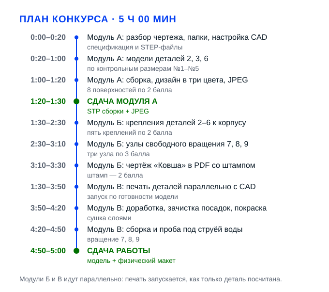
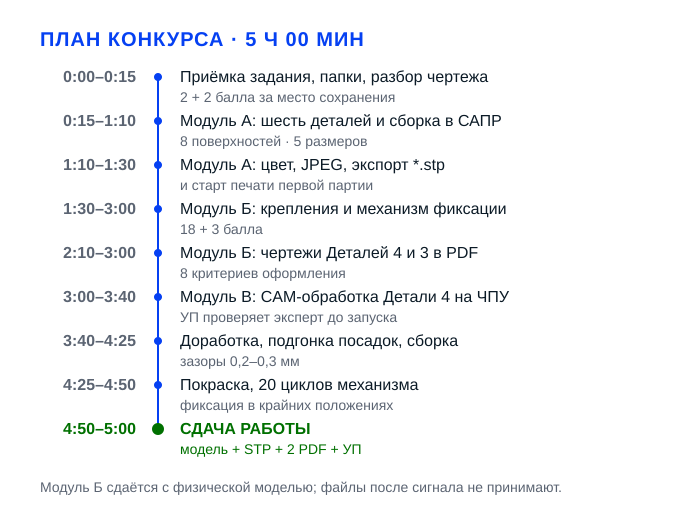
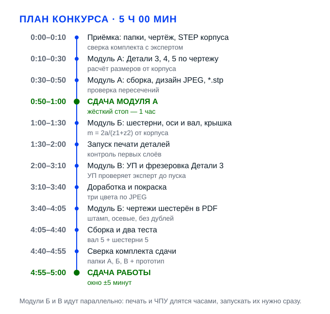

Аддитивное производство (Р)
Задания ниже — официальные файлы «Абилимпикс» (источник: abilympics-russia.ru), разложенные по категориям. Решения написаны по тексту задания, регламенту и критериям оценки; в них указано, что именно проверяет эксперт.
Школьник
14–16 лет, базовый уровень заданияВыдержка из официального конкурсного задания: страницы, относящиеся к категории «Школьник» (стр. 6–9, 12–13 источника).
Пошаговое решение
Задание для школьников — собрать действующий макет «Водяной мельницы»: пять часов, три модуля, от чертежа до проверки под струёй воды. В модуле А за 1 час 30 минут нужно построить в CAD детали 2, 3 и 6 по чертежу, собрать изделие вместе с четырьмя выданными STEP-файлами (корпус 1 и вращающиеся детали 7, 8, 9), придумать окраску и сдать сборку в STP плюс картинку в JPEG. В модуле Б — конструктивные изменения: пять креплений к корпусу, три узла свободного вращения и чертёж ковша в PDF со штампом. В модуле В — печать, доработка, покраска, сборка и испытание: детали 7, 8 и 9 должны свободно вращаться на осях 3, 4, 5 и крутиться, когда поток попадает в деталь 2. Главный риск здесь не в сложности модели, а в распределении времени: печать идёт параллельно с CAD, и запускать её нужно в первые полчаса.

Задача 1. Разобрать задание и подготовить рабочее местоМодуль А · папка 2 балла · восемь поверхностей по 2
Модуль А — это 1 час 30 минут на три детали и сборку «Водяной мельницы» в CAD. Задание стоит 30 баллов, и они разложены очень дробно: восемь поверхностей по 2 балла, пять контрольных размеров по 2 балла, 2 балла за папку сдачи и 2 балла за картинку с цветовым решением. Такая арифметика означает простую вещь: сначала надо понять, что именно оценивают, и только потом строить. Первые двадцать минут уходят на чтение чертежа, подготовку папок и настройку программы, но эти двадцать минут возвращаются сторицей, потому что дальше вы работаете без остановок и без переделок.
Действие 1.1. Прочитать чертёж и спецификацию
Шаг 1.1.1
Раскладываем на столе всё выданное на модуль: конкурсное задание, чертёж «Водяной мельницы» с видами и разрезами, спецификацию и папку со STEP-файлами. Спецификацию читаем построчно и выписываем номера деталей в две колонки: слева те, что приходят готовыми файлами — 1 «Корпус», 7, 8, 9; справа те, что строим сами — 2, 3 и 6. На самом чертеже обводим маркером контуры деталей из правой колонки, чтобы глаз не цеплялся за готовое. Только после этого открываем CAD.
Модуль А стоит 30 баллов, и они разложены по конкретным поверхностям и размерам: восемь поверхностей по 2 балла и пять размеров по 2 балла. Если взяться за деталь, которая выдана в STEP, час уйдёт на то, что уже есть, а своей детали не будет — и баллы за её поверхности вы не получите, потому что оценивают сборку целиком, а не набор файлов.
На листе ровно три позиции в колонке «строим»: 2, 3, 6 — и четыре в колонке «выдано»: 1, 7, 9, 8. Сверьте номера с видами ещё раз: в спецификации строки идут по порядку, а на чертеже детали подписаны по местам, и легко спутать 3 и 5. Если сомневаетесь, какая деталь выдана, посмотрите папку STEP: там четыре файла, и их имена совпадают с номерами.
Самая дорогая ошибка — начать с корпуса: он выглядит главным, а выдаётся готовым. Вторая — моделировать все девять деталей «чтобы сборка была полной»: на модуль дано 1 час 30 минут, и этого хватает ровно на три детали плюс сборку.
Эксперт подходит в первые десять минут и смотрит, какой лист лежит перед участником и совпадает ли набор тел в дереве сборки с заданием. Отдельно спрашивает, какая деталь выдана готовой.
Шаг 1.1.2
Идём по видам методично: главный вид, вид сверху, вид сбоку, разрезы. По каждому из контрольных размеров выписываем в таблицу три вещи — обозначение на чертеже, номинал с допуском и поверхность, от которой размер отсчитан. Заодно переписываем габариты деталей, диаметры отверстий под оси и толщины стенок. Размер, который стоит на двух видах, сверяем оба раза: если числа расходятся, значит, вы смотрите на разные элементы, а не на один.
Пять контрольных размеров дают 10 баллов из 30, и это самые дешёвые баллы модуля: их снимают не за красоту модели, а за попадание в номинал. Те же числа понадобятся в модуле Б, когда вы будете разрабатывать крепления деталей 2–6 к корпусу: посадочные места там должны быть кратны тому, что написано в чертеже, иначе крепление не сойдётся с готовой деталью 1.
Таблица заполнена на пять строк, у каждой есть допуск и база отсчёта. Проговорите вслух, от чего отсчитан каждый размер: если ответ «от края, кажется», размер не прочитан. Каждый размер продублируйте на втором виде: сходится — значит, прочитан верно.
Мерить линейкой по экрану или брать размер по масштабу — на печати и на оценке это даёт расхождение в миллиметры, а допуск на чертеже обычно жёстче. Вторая ошибка — пропустить размер, который стоит на разрезе, и потом угадывать толщину стенки.
Смотрит, есть ли у участника записи с размерами. Работа «по памяти с экрана» видна сразу по вопросам о базе отсчёта. Отдельно проверяет, выписаны ли допуски: без них размер считается не взятым.
Шаг 1.1.3
Выбираем базу построения и привязываем её к началу координат: центр нижней плоскости корпуса ставим в ноль, ось колеса — по одной из осей координат, чтобы дальше все детали строились в одной системе. На бумаге рисуем цепочку сборки: корпус 1, затем оси 3, 4, 5, затем вращающиеся 7, 8, 9, затем колесо 2 и ковши 6. Рядом со стрелками подписываем, какая деталь во что входит и что должно вращаться.
Если каждая деталь строится от своей произвольной точки, ошибки складываются и зазоры уезжают. В модуле Б вам предстоит разрабатывать крепления детали 2 и деталей 3, 4, 5, 6 к детали 1, то есть работать от посадочных мест корпуса: не привязанная к базе модель заставит переделывать крепления с нуля, а на модуль Б отведено 3 часа 30 минут вместе с чертежом.
На листе есть схема из пяти уровней, и для каждой пары написано, вращается соединение или фиксируется жёстко. Сверьте её с требованиями модуля В: свободно вращаться должны 7 относительно 3, 8 относительно 4 и 9 относительно 5.
Строить «как удобно на экране», растягивая детали мышью: модель вроде похожа, но при вставке в сборку всё встаёт со сдвигом. Вторая ошибка — не записать, что вращается, и потом зафиксировать в сборке то, что должно крутиться.
Оценивает понимание изделия: просит показать на чертеже, что приводит в движение воду и через что передаётся вращение. Просит назвать базу построения вслух — это проверка за десять секунд.
Действие 1.2. Подготовить папку сдачи и настройки CAD
Шаг 1.2.1
На рабочем столе создаём главную папку, в названии которой стоит номер рабочего места по жеребьёвке, и внутри — три подпапки с именами «Модуль А», «Модуль Б», «Модуль В». Проверяем, что путь не содержит пробелов в начале и лишних символов: некоторые проверяющие скрипты спотыкаются на таких файлах. Сразу сохраняем в «Модуль А» пустой пробный файл, чтобы убедиться, что запись идёт именно туда.
Соответствие требованиям к месту сохранения файла — отдельные 2 балла в каждом из модулей А и Б, и они теряются чаще, чем кажется: работа лежит рядом с папкой, а не внутри, и формально её нет. В КЗ прямо сказано, что результаты, сохранённые после окончания времени модуля, к оценке не принимаются.
Открываете проводник и видите путь из двух уровней: номер участника, внутри — три папки модулей. Пробный файл появился там, где нужно, а не на рабочем столе. Путь в проводнике скопируйте и вставьте в блокнот: так видно, нет ли лишнего уровня вложенности.
Складывать всё в загрузки или на флешку, надеясь разобрать в конце: в конце времени не будет, а 2 балла за папку уже потеряны. Вторая ошибка — назвать папку своим именем вместо номера по жеребьёвке. Третья — сохранить файл в корень диска, где его потом никто не найдёт.
В момент сдачи эксперт открывает папку с номером участника и смотрит, лежит ли файл внутри неё, а не рядом. Номер по жеребьёвке должен читаться в названии папки без догадок.
Шаг 1.2.2
Настраиваем CAD до первой линии: единицы измерения — миллиметры, точность отображения размеров 0,01 мм, автосохранение каждые 5 минут, рабочая папка проекта — та самая папка «Модуль А». Проверяем горячие клавиши и включаем отображение эскизов в дереве. Если программа поддерживает шаблоны, сохраняем пустой шаблон детали с нужными единицами, чтобы не настраивать всё заново для каждой из трёх деталей.
Модуль короткий, и любая настройка, сделанная посреди работы, стоит две-три минуты — на трёх деталях это уже десять минут, которых потом не хватит на сборку. Автосохранение защищает от единственного по-настоящему невосполнимого сбоя: зависания программы на середине построения.
Нарисуйте прямоугольник и проставьте размер: он должен показать миллиметры с двумя знаками после запятой. Закройте файл и откройте снова — он нашёлся в папке модуля без поиска. Заодно проверьте, что автосохранение включено: в настройках стоит интервал 5 минут.
Работать в дюймах по умолчанию: деталь построена правильно, но при экспорте в STEP она приходит в 25 раз крупнее. Вторая ошибка — не включить автосохранение и потерять сорок минут работы при сбое. Третья — оставить открытыми два документа с одинаковым именем.
По ходу модуля смотрит на дерево построения: аккуратные имена тел и эскизов говорят о том, что участник работал в системе, а не наугад. Пустое дерево с одним телом без эскизов — признак импорта вместо построения.
Шаг 1.2.3
Импортируем выданные STEP-файлы деталей 1, 7, 9 и 8 в отдельный документ сборки и проверяем их по трём признакам: единицы измерения, положение относительно начала координат и целостность геометрии. Если деталь пришла повёрнутой, не вращаем её мышью, а фиксируем по плоскостям. Отдельно смотрим, нет ли в импортированной геометрии разрывов: иногда STEP приходит набором поверхностей, а не телом.
Сборка строится вокруг корпуса, и если он стоит косо или в других единицах, все ваши детали встанут с перекосом, а оценивают именно сборку в формате STP. Импорт занимает пять минут в начале и экономит полчаса в конце, когда исправлять систему координат уже поздно.
Деталь 1 «Корпус» стоит в нуле, её габариты совпадают с чертёжными, в дереве это тело, а не набор поверхностей. Три вращающиеся детали видны и не пересекаются с корпусом до сборки. Габарит корпуса сверьте с чертежом измерительным инструментом программы.
Импортировать STEP и начать строить рядом, не привязав его к базе: при экспорте сборки детали окажутся в разных системах координат. Вторая ошибка — тянуть импортированное тело за грань и менять его геометрию.
Проверяет, что выданные детали не перестроены: корпус должен остаться таким, каким его выдали. Если корпус изменён, это фиксируется как нарушение задания.
Действие 1.3. Запустить печать, не дожидаясь конца модуля
Шаг 1.3.1
Подходим к 3D-принтеру и проверяем четыре вещи по порядку: остаток пластика на катушке, чистота сопла, ровность стола и натяжение ремней. Стол калибруем листом бумаги по четырём углам и центру — лист должен выходить с лёгким сопротивлением, но не рваться. Затем запускаем короткую тест-модель или линию вдоль края и смотрим, ложится ли первый слой ровной лентой.
В КЗ прямо разрешено приступать к изготовлению деталей по готовности, не дожидаясь окончания модуля А. Печать — самая длинная операция конкурса, и каждая минута, потерянная на калибровку в середине дня, вычитается из времени на покраску и сборку. Плохой первый слой — это не косметика, а оторванная деталь через два часа печати.
Первый слой ложится полосой одинаковой ширины, без просветов между линиями, пластик не тянется за соплом. Катушка просвечивает не меньше чем на треть, сопло не сопливит. Проверьте также, что сопло не тащит за собой нить при переходе.
Запустить печать на «примерно выставленном» столе: сопло слишком близко — слой размазан и вспучен, слишком далеко — пластик не прилипает и деталь уносит соплом. В обоих случаях потерян час и материал.
Технический эксперт площадки смотрит на калибровку и на то, не запускает ли участник печать с нарушением порядка подготовки оборудования. Отдельно смотрит, прогрет ли стол до 60 градусов.
Шаг 1.3.2
Выбираем для первого запуска детали, геометрия которых точно не изменится в модуле Б: оси 3, 4, 5 и вращающиеся 7, 8, 9 по посадочным размерам. Кладём их на стол печати одной группой с расстоянием 3–5 мм между контурами, ставим слой 0,2 мм, три периметра, заполнение 20 процентов и брим 5 мм вокруг каждой. Время печати смотрим в слайсере и записываем на бумаге, чтобы планировать следующие запуски.
Модуль Б меняет крепления к корпусу, но не сами оси и не вращающиеся элементы, поэтому именно они печатаются первыми без риска переделки. Групповая печать экономит не время печати, а время подготовки стола: одна калибровка и одна первая линия на пять деталей вместо пяти.
Слайсер показывает суммарное время, и оно оставлено с запасом до конца конкурса. Контуры деталей не соприкасаются, брим не заходит на соседнюю деталь. Убедитесь, что поддержки не попадают на посадочные отверстия деталей.
Печатать детали по одной: пять калибровок и пять первых линий съедят время. Вторая ошибка — поставить детали вплотную, чтобы больше влезло: при снятии они слипнутся по бриму и посадочные разобьются. Третья — запустить печать без брима и получить оторванную кромку.
Отмечает, запущена ли печать в первые полчаса. На категории «Школьники» это главный признак того, что участник прочитал задание целиком. В журнале эксперта это отмечается как соблюдение тайминга.
Шаг 1.3.3
Заводим на листе журнал печати: номер детали, время старта, параметры (слой, заполнение, температура сопла и стола), время окончания по слайсеру и фактическое. Рядом приписываем, что печатается следующим и какие детали ещё не смоделированы. Журнал держим у принтера, а не в компьютере с CAD: подходить к принтеру придётся часто. Строки нумеруем по порядку запусков, чтобы ссылаться на них в разговоре с экспертом.
За пять часов конкурса запусков будет не меньше пяти, и без записей легко напечатать одну деталь дважды, а другую не напечатать вовсе, а модуль В требует, чтобы были изготовлены все необходимые детали прототипа. Журнал ещё и защищает в спорной ситуации: видно, во сколько вы начали и что успели в конкурсное время.
В журнале есть строка на каждый запуск, и по нему можно ответить, сколько деталей готово и сколько осталось. Время окончания по слайсеру отличается от фактического не больше чем на десять минут. Если расхождение больше, значит, печать встала или пошла не по профилю.
Держать всё в голове: к третьему часу вы не вспомните, печатали ли деталь 8 или она ещё в очереди. Вторая ошибка — не записывать параметры и потом не смочь повторить удачный запуск. Третья — писать время по слайсеру вместо фактического и планировать по неверным числам.
Может попросить показать, какие детали уже изготовлены. Список на бумаге читается быстрее, чем поиск файлов в проводнике. По журналу видно, планировал участник работу или реагировал на пожары.
Задача 2. Смоделировать детали 2, 3 и 6 и собрать изделие в CADМодуль А · пять размеров по 2 балла
Основная работа модуля А: три детали «Водяной мельницы» по чертежу и сборка вместе с четырьмя выданными STEP-файлами. Деталь 2 — рабочее колесо, на которое попадает поток воды; детали 3, 4 и 5 — оси, на которых крутятся вращающиеся элементы; деталь 6 «Ковш» — тот ковш, на который в модуле Б придётся делать чертёж. Оценивают не красоту дерева построения, а восемь названных поверхностей и пять контрольных размеров, поэтому каждая деталь строится от базы, с размерами из таблицы, а не растягиванием мышью.
Действие 2.1. Построить деталь 2 — рабочее колесо
Шаг 2.1.1
Создаём новую деталь в той же системе координат, что и корпус, и первым эскизом рисуем ступицу: окружность по диаметру с чертежа и соосное отверстие под ось. Проставляем размеры сразу, а не после: в эскизе должно стоять столько размеров, сколько нужно для полного определения, тогда геометрия не поедет при следующей правке. Выдавливаем на толщину ступицы и проверяем, что торец совпал с плоскостью, указанной на чертеже.
Ступица — база всей детали 2: от неё строятся лопасти и от неё же деталь садится на ось. Ошибка в её диаметре тянет за собой остальные размеры, а поверхности ступицы входят в те восемь, что оценивают по 2 балла каждая. Кроме того, колесо должно свободно насаживаться на ось, иначе в модуле В оно не провернётся под струёй.
В эскизе нет недоопределённых линий, диаметры совпадают с таблицей размеров, отверстие соосно наружному контуру. Толщина ступицы измерена инструментом программы и равна чертёжной. Проверьте также, что эскиз лежит на нужной плоскости, а не на смещённой.
Рисовать окружности на глаз и подгонять их потом масштабом: масштабирование меняет и отверстие, и посадочный диаметр, деталь перестаёт садиться на ось. Вторая ошибка — забыть соосность и получить эксцентричную ступицу.
Открывает эскиз и смотрит, проставлены ли размеры. Полностью определённый эскиз — первый признак того, что участник работает параметрически. Отдельно смотрит, совпадает ли диаметр ступицы с чертёжным.
Шаг 2.1.2
Лопасти делаем массивом по кругу: строим одну лопасть эскизом на торце ступицы, задаём её ширину, высоту и угол наклона к радиусу, выдавливаем на нужную толщину, а затем копируем массивом с числом элементов и шагом 360 градусов, делённым на число лопастей. Число лопастей и угол берём с чертежа, а не выбираем чтобы красиво. После массива объединяем тела в одно, если программа создала их отдельно.
Массив по кругу — единственный способ получить одинаковые лопасти: если рисовать каждую отдельно, шаг собьётся, и колесо начнёт бить при вращении. Ровный шаг важен и для проверки в модуле В: при попадании воды в деталь 2 колесо должно вращаться, а не дёргаться рывками.
Все лопасти одинаковой толщины и стоят с равным угловым шагом — проверьте углом между двумя соседними. В дереве массив один, а не восемь отдельных выдавливаний. Угол между любыми двумя соседними лопастями одинаков до десятых.
Копировать лопасть вставкой и поворачивать вручную: накапливается ошибка угла, и последняя лопасть залезает на первую. Вторая ошибка — выдавить лопасти на разную толщину и получить дисбаланс. Третья — забыть объединить тела и получить деталь из девяти кусков.
Смотрит на симметрию колеса и спрашивает, почему выбрано такое число лопастей — ответ должен опираться на чертёж. Смотрит и на толщину лопастей: разная толщина выдаёт ручную правку.
Шаг 2.1.3
Дорабатываем посадочное место под ось: диаметр отверстия берём с чертежа, а если указана посадка, добавляем технологический зазор 0,2–0,3 мм на сторону, потому что после печати отверстие садится примерно на этот размер. Снимаем фаску 0,5 мм на входе отверстия и скругляем переход ступицы в диск радиусом 1–2 мм. Проверяем, что фаска не съела посадочный поясок.
Печать FDM всегда даёт отверстие меньше номинала: без запаса ось 3 в колесо просто не войдёт, и в модуле В придётся рассверливать деталь наждаком и сверлом, теряя геометрию. Скругление перехода убирает концентратор напряжений — именно там деталь чаще всего трескается при посадке на ось.
Диаметр отверстия в модели больше чертёжного на 0,4–0,6 мм по диаметру, фаска видна на кромке, радиус скругления стоит на пересечении ступицы и диска. Отверстие соосно наружному контуру. Измерьте диаметр дважды: по двум взаимно перпендикулярным направлениям.
Сделать отверстие строго по номиналу: после печати оно окажется на 0,3–0,4 мм меньше, и посадка превратится в запрессовку с риском раскола. Вторая ошибка — снять фаску 2 мм и потерять длину посадочного пояска.
Проверяет посадочные размеры отдельно: это те самые контрольные размеры, за которые дают баллы, и в модели они видны сразу. Сверяет зазор с тем, который пойдёт в печать, и спрашивает обоснование.
Шаг 2.1.4
Прогоняем проверку геометрии: смотрим массовые характеристики, убеждаемся, что тело одно и замкнутое, нет нулевой толщины и наложенных поверхностей. Отдельно проверяем симметрию: колесо должно быть уравновешено относительно своей оси, иначе при вращении появится биение. Сохраняем деталь под именем с номером — «Деталь 2», без пробелов и лишних символов в расширении.
Незамкнутое тело не экспортируется в STEP корректно, а на оценку сдаётся именно сборка в этом формате: программа может сохранить файл, но при открытии эксперт увидит пустоту или дыры. Имя файла тоже часть порядка: по нему собирают комплект для оценки.
Массовые характеристики считаются без ошибок, тело одно, все грани на месте и без наложений. Файл открывается в новом документе и выглядит так же. Проверьте также, что в модели нет скрытых тел и погашенных элементов.
Оставить деталь набором поверхностей после булевых операций и не заметить этого до экспорта. Вторая ошибка — сохранить файл с именем «деталь новый 2 финал», и потом не найти его в общей папке. Третья — сохранить деталь только в формате программы, не сделав STEP для сборки.
Может открыть вашу деталь заново, чтобы проверить целостность. Пустое тело — минус все баллы за поверхности этой детали. Заодно смотрит на имя файла: номер детали должен читаться сразу.
Действие 2.2. Построить детали 3, 4 и 5 — оси
Шаг 2.2.1
Строим одну ось полностью и параметрически: тело вращения из эскиза-профиля, где заданы диаметры шеек, длины ступеней и радиусы переходов. Затем, не перестраивая заново, копируем деталь и меняем только те размеры, которыми отличаются 3, 4 и 5 по чертежу: длину, диаметр шейки, положение буртика. Так три детали получаются за время одной, и все три гарантированно соосны.
Детали 3, 4 и 5 — это оси, на которых вращаются 7, 8 и 9 соответственно, поэтому их диаметры должны совпадать с отверстиями вращающихся деталей с зазором. Если строить каждую с нуля, легко разойтись на 0,2 мм, а такой разницы хватит, чтобы одно колесо крутилось туго, а другое болталось.
Все три детали в дереве имеют одинаковую структуру и отличаются только размерами из таблицы. Диаметр каждой шейки сверен с отверстием соответствующей вращающейся детали. Длины ступеней сверьте по таблице размеров, а не по памяти.
Строить три оси как три независимых модели, каждый раз заново: время уходит, а расхождения накапливаются. Вторая ошибка — скопировать деталь и забыть поменять длину, получив три одинаковых оси. Третья — не задать радиусы переходов и получить ступеньку вместо галтели.
Смотрит, есть ли в сборке все три оси и совпадают ли их посадочные диаметры с вращающимися деталями. Проверяет, что все три оси построены от одной базы.
Шаг 2.2.2
Дорабатываем шейки под вращение: на входе каждой шейки снимаем фаску 0,5 мм, на буртике делаем радиус 1 мм, а сам диаметр шейки берём на 0,3 мм меньше номинала отверстия, чтобы после печати получился рабочий зазор. Если по чертежу предусмотрен стопор от осевого смещения, добавляем канавку под стопорное кольцо или буртик с двух сторон — смотря что нарисовано.
Свободное вращение деталей 7, 8, 9 относительно 3, 4 и 5 — прямое требование модуля В, и проверяют его руками и под струёй воды. Зазор закладывается в модели, а не напильником после печати: подпиливание шейки делает её овальной, и вращение становится неравномерным.
На шейке есть фаска, на буртике радиус, диаметр меньше отверстия на 0,3 мм. В сборке CAD деталь надевается без натяга и проворачивается на полный оборот. Люфт вдоль оси не должен превышать полмиллиметра.
Сделать шейку в номинал: после печати зазор уйдёт в минус, и вращающаяся деталь прикипит к оси. Вторая ошибка — сточить шейку напильником до свободного хода и получить люфт и биение. Третья — поставить буртик с одной стороны и потерять стопорение.
Проверяет зазоры в модели до печати: если в CAD детали сидят в натяг, эксперт это видит и снимает баллы за узел вращения. Спрашивает, какой зазор заложен и почему именно такой.
Шаг 2.2.3
Проверяем комплектность: в сборке должно быть ровно три оси с номерами 3, 4, 5, каждая на своём месте согласно чертежу. Сверяем, что ось 3 несёт деталь 7, ось 4 — деталь 8, ось 5 — деталь 9, и что при этом ни одна ось не упирается в корпус раньше, чем сядет в своё посадочное место. Расхождения фиксируем и правим сразу, пока детали не ушли в печать.
Перепутанные оси — ошибка, которая всплывает только на сборке, когда напечатано уже всё. В модуле Б вам придётся делать механизмы крепления для свободного вращения детали 8 к детали 4, детали 7 к детали 3 и детали 9 к детали 5, и эти три узла оцениваются по 3 балла — самыми дорогими пунктами модуля Б.
Три оси стоят по своим местам, у каждой подписано, что на ней вращается. При прокрутке в сборке ничего не задевает корпус. Подписи в дереве сборки должны совпадать с номерами на чертеже. Проверку делайте до печати: переделывать напечатанную ось дороже.
Печатать оси, не сверив их с местами в сборке: потом выясняется, что ось 5 короче и деталь 9 висит в воздухе. Вторая ошибка — сделать все три оси одинаковой длины на всякий случай. Третья — не учесть толщину стенки корпуса, и ось выступает наружу на 3 мм.
Смотрит на дерево сборки и на подписи. Порядок в именах деталей экономит эксперту время и читается как понимание изделия. Если подписи нет, он спрашивает, где какая ось, и теряет время.
Действие 2.3. Построить деталь 6 «Ковш»
Шаг 2.3.1
Начинаем с контура ковша в плане: строим эскиз по размерам чертежа, задаём радиусы скруглений и угол раскрытия. Выдавливаем на глубину ковша, затем оболочкой задаём толщину стенки 2–3 мм — тонкую, но печатаемую. Если чертёж задаёт уклон стенок, делаем его на этапе выдавливания с уклоном, а не наклоном отдельных граней после. Толщину стенки задаём оболочкой внутрь, чтобы наружный контур остался чертёжным.
Деталь 6 — единственная, на которую в модуле Б нужно сдавать чертёж в PDF, и он оценивается вместе с моделью: если геометрия построена примерно, чертёж будет сниматься с такой же примерной модели, и баллы уйдут дважды. Толщина стенки 2–3 мм — компромисс между прочностью и временем печати.
Толщина стенки одинаковая по всей высоте — проверьте сечением. Глубина и ширина совпадают с чертежом, скругления стоят там, где нарисованы. Проверьте, что внутренняя полость замкнута и не сообщается снаружи.
Сделать стенку 1 мм чтобы быстрее печаталось: при снятии поддержек ковш треснет, а при покраске поведёт. Вторая ошибка — построить ковш монолитным телом без оболочки и получить кирпич. Третья — сделать дно толщиной в один слой печати, и оно пробивается.
Сравнивает ковш с чертежом по контуру и толщине стенки: это самая заметная деталь после колеса. Отдельно спрашивает, почему выбрана именно такая толщина стенки.
Шаг 2.3.2
Добавляем посадочный элемент, которым ковш крепится к изделию: бобышку с отверстием или паз по чертежу, с зазором 0,2 мм и фаской на входе. Усиливаем место перехода стенки в бобышку ребром толщиной 1,5–2 мм. Скругляем все наружные кромки радиусом 0,5 мм: острые кромки после печати становятся ещё острее и цепляют поддержку. Посадочный элемент строим от тех же привязок, что и корпус, чтобы размеры были общими.
Крепление детали 6 к детали 1 — отдельный пункт модуля Б на 2 балла, и делать его придётся, отталкиваясь от того посадочного места, которое вы заложили сейчас. Без ребра бобышка отламывается при первой же сборке, а скругления нужны, чтобы ковш нормально вышел из печати и не скалывался.
Бобышка соосна отверстию на чертеже, ребро доходит до стенки без зазора, наружные кромки скруглены. Деталь стоит в сборке на своём месте без пересечений. Отверстие бобышки должно совпадать с ответным отверстием на изделии.
Сделать бобышку потом, в модуле Б: потом не будет — в модуле Б время уйдёт на восемь узлов и чертёж. Вторая ошибка — поставить ребро с зазором к стенке, и оно не работает. Третья — сделать бобышку толщиной 1 мм, и она отламывается при сборке.
Проверяет, есть ли у ковша посадочное место и держится ли он в сборке. Отдельно смотрит на пересечения с соседними деталями. Смотрит на ребро: без него узел считается нерабочим.
Шаг 2.3.3
Проверяем вместимость и посадку: измеряем внутренний объём ковша и угол наклона передней кромки, затем ставим деталь в сборку на место и убеждаемся, что кромка не задевает колесо и не перекрывает поток. Если ковш стоит на колесе, проверяем равномерность: массив ковшей по окружности должен идти с тем же шагом, что и лопасти. Результат измерения объёма запишите рядом с номером детали — пригодится при защите.
Ковш, который задевает колесо, не даст ему вращаться, а вращение деталей под струёй воды проверяется в модуле В руками и на воде. Заметить это в CAD стоит две минуты, а на собранном макете — полчаса разборки и подпиливания. К тому же ковш — самая нагруженная деталь под потоком.
Зазор между ковшом и колесом не меньше 0,5 мм по всей дуге, внутренний объём считается инструментом, кромка не пересекает соседние тела. Проверьте кромку на просвет: зазор должен быть виден по всей дуге.
Поставить ковш вплотную к колесу чтобы не текло: при печати зазор уйдёт, и колесо заклинит. Вторая ошибка — не проверить шаг ковшей и получить неравномерную нагрузку. Третья — не учесть наклон передней кромки и получить недолив ковша.
Смотрит на сборку сбоку: видно, перекрывают ли ковши друг друга и есть ли зазор до корпуса. Спрашивает, сколько воды войдёт в ковш и куда она сливается.
Действие 2.4. Собрать изделие и проверить сопряжения
Шаг 2.4.1
Создаём документ сборки, первым вставляем деталь 1 «Корпус» и фиксируем её — она становится неподвижной базой. Дальше вставляем детали 3, 4, 5, затем 7, 8, 9, затем колесо 2 и ковши 6. Каждую деталь ставим в проектное положение сразу, без промежуточных «примерно здесь»: в правильной сборке деталь появляется уже на месте и лишь уточняется сопряжениями.
Порядок вставки повторяет порядок узлов изделия, и это не формальность: если сначала поставить колесо, а потом искать, куда его крепить, сопряжения начнут конфликтовать. Оценивают сданную сборку в формате STP целиком, то есть все детали должны стоять в ней на своих местах.
В дереве сборки девять компонентов, корпус зафиксирован, остальные подвижны. Ни одна деталь не висит в стороне от изделия. Проверьте, что в сборке нет погашенных компонентов: они не попадут в STEP. Список компонентов сверяем со спецификацией по номерам.
Вставлять детали как встанут и потом ловить их сопряжениями: дерево заполняется ошибками, а сборка разваливается при первом же обновлении. Вторая ошибка — забыть вставить выданные STEP-детали и сдать сборку из трёх тел.
Считает компоненты в дереве и сверяет с комплектом по спецификации: девять деталей, ни больше ни меньше. Проверяет также, зафиксирован ли корпус, иначе сборка поедет.
Шаг 2.4.2
Наводим сопряжения по узлам: оси 3, 4, 5 ставим в отверстия корпуса совпадением осей и совпадением торца; детали 7, 8, 9 — на свои оси концентрично, с ограничением осевого перемещения по буртику; колесо 2 — на ось с совпадением торца; ковши 6 — по посадочной плоскости и оси отверстия. Для вращающихся пар оставляем одну степень свободы — поворот вокруг оси, всё остальное фиксируем.
Каждое лишнее ограничение превращает вращение в жёсткую посадку, и это видно уже в CAD: деталь не проворачивается. Требования модуля В перечисляют ровно то, что должно вращаться: детали 7, 8 и 9 относительно 3, 4 и 5, а колесо — под потоком воды. На уровне школьников это главная проверка понимания кинематики.
Потяните мышью за колесо: оно должно вращаться, а оси — стоять. Попробуйте провернуть детали 7, 8, 9 — каждая крутится вокруг своей оси и не уезжает вдоль неё. На полном обороте не должно быть ни заедания, ни задевания корпуса.
Зафиксировать всё чтобы сборка не разваливалась: детали стоят красиво, но не вращаются, и узел оценивается как нерабочий. Вторая ошибка — оставить лишнюю степень свободы, и колесо выпадает из корпуса при повороте.
Крутит модель в сборке: подвижность узлов видна за пару секунд и говорит больше, чем любой чертёж. Если деталь не крутится, он просит показать, какое ограничение лишнее.
Шаг 2.4.3
Запускаем проверку пересечений по всем парам деталей и отдельно смотрим зазоры в узлах вращения. Если программа показывает наложение, правим не зазором на глаз, а размером в эскизе детали. Проверяем также, что ни одна деталь не выходит за габарит изделия, а вращающиеся элементы не задевают корпус при полном обороте — прогоняем колесо на 360 градусов.
Пересечения в CAD означают, что после печати детали не соберутся: припуск на печать только добавит материала. Зазор 0,2–0,4 мм — рабочий для FDM, меньше 0,15 мм обычно спекается в монолит, и узел вращения умирает ещё до покраски. Проверку делаем до экспорта, иначе её придётся повторять заново.
Проверка пересечений даёт ноль наложений, минимальный зазор в узлах вращения 0,2 мм, колесо делает полный оборот без контакта с корпусом и ковшами. Сохраните отчёт проверки: в нём видно, какие пары проверялись.
Оставить пересечение на 0,1 мм, решив, что это же модель, а не печать: на печати этот зазор станет натягом. Вторая ошибка — не прогнать полный оборот и поймать задевание только на собранном макете. Третья — проверить только соседние пары и пропустить дальние.
Прогоняет проверку пересечений при участнике: результат в окне программы — объективный факт, спорить с ним нельзя. Отдельно смотрит на зазоры в узлах вращения.
Шаг 2.4.4
Сохраняем сборку в STEP: выбираем формат AP214, включаем все компоненты, имя файла — «Сборка_водяная_мельница» без пробелов, путь — папка «Модуль А». Дополнительно сохраняем родной файл программы, потому что в КЗ написано: сдаётся модель в формате STP и в формате программы. После сохранения закрываем файл, открываем заново и проверяем, что пришло девять тел в правильных положениях.
Оценивают именно сданную сборку в формате STP, а родной файл нужен для подтверждения, что модель построена в CAD, а не собрана из чужих кусков. Ошибка в единицах или пропущенный компонент при экспорте — это потеря 30 баллов модуля А целиком, при том что модель в программе выглядит идеально.
Открытый заново STP содержит девять тел, габариты в миллиметрах, детали на своих местах. Размер файла не нулевой, имя без пробелов, путь внутри папки модуля. Проверьте также, что имена деталей сохранились после экспорта.
Экспортировать только видимые компоненты и потерять половину сборки. Вторая ошибка — сохранить в старый формат с потерей имён, а потом не смочь доказать комплектность. Третья — не сохранить родной файл и остаться только с STEP.
Открывает STP на своей машине. Если файл не читается или в нём три тела вместо девяти, баллы за поверхности и размеры не начисляются вообще. Отдельно сверяет габарит сборки с чертежом.
Задача 3. Дать изделию цветовое решение и сдать модуль АМодуль А · 2 балла за файл JPEG
Вторая половина модуля А — не про геометрию, а про то, как изделие будет выглядеть и как вы его сдадите. Нужна статичная визуализация с цветовым решением и JPEG в папке «Модуль А». В разделе 2.1.1 задания сказано про окраску не менее чем в три цвета, а в описании модуля 2.3.1 — не менее чем в два; делать надо по большему требованию, то есть в три, и тогда расхождение в документах вам не помешает. Красить вы будете руками в модуле В, поэтому цветов не должно быть больше, чем вы успеете аккуратно нанести.
Действие 3.1. Выбрать и назначить цвета
Шаг 3.1.1
Выбираем три цвета и распределяем их по узлам изделия: корпус — основной спокойный тон, колесо с лопастями — контрастный акцент, ковши, оси и вращающиеся элементы — третий цвет, чтобы мелкие детали читались на фоне. Цвета записываем на лист рядом с номерами деталей, а не держим в голове. Сразу проверяем, есть ли эти краски в наборе на площадке, и не придётся ли смешивать оттенок из двух банок.
За наличие дизайнерского решения в JPEG дают 2 балла, но фактически этот пункт связан с модулем В: там детали красят художественными красками строго по дизайну, выбранному в модуле А. Если на картинке один оттенок, а на макете другой, расхождение видно и читается как несделанная часть задания.
Три цвета выписаны, у каждого есть номер детали или группа деталей. Ни один цвет не покрывает больше половины изделия, и все три различимы на расстоянии вытянутой руки. Проверьте на распечатке в оттенках серого, что цвета не сливаются.
Выбрать три оттенка одного цвета: формально три цвета есть, но на картинке и на макете они сливаются, и решение не читается. Вторая ошибка — выбрать цвет, которого нет в наборе красок, и потом красить другим.
Смотрит картинку и физический макет рядом: совпадает ли раскладка цветов по деталям. Отдельно спрашивает, почему выбраны именно эти три цвета и что они означают.
Шаг 3.1.2
Назначаем цвета в CAD на уровне компонентов сборки, а не отдельных граней: так каждый цвет привязан к детали, и при следующей правке геометрии он не потеряется. Для колеса и ковшей проверяем, что цвет не заливает посадочные отверстия, иначе на визуализации не видно, что деталь вращается на оси. Освещение ставим нейтральное, без цветных источников, чтобы не искажать оттенки.
Визуализация должна показывать изделие, а не игру света: эксперт сверяет картинку с чертежом и с будущим макетом. Цвет, назначенный на грани, при перестроении детали съезжает на соседние поверхности, и вместо аккуратной раскладки получается случайная мозаика.
В дереве сборки у каждого компонента свой цвет, у деталей одного узла — одинаковый. На модели нет граней с «чужим» цветом и нет неокрашенных серых пятен. В дереве не должно остаться компонентов с цветом по умолчанию.
Красить отдельные грани вручную: при первом же изменении эскиза цвета перескакивают. Вторая ошибка — включить в сцене цветной фон, который меняет восприятие оттенков. Третья — покрасить крепёж в цвет корпуса и потерять читаемость.
Вращает модель и смотрит, одинаково ли окрашены симметричные детали: разнобой на лопастях заметен сразу. Проверяет, совпадает ли раскладка цветов с той, что будет на макете.
Шаг 3.1.3
Проверяем решение на «дальнем плане»: уменьшаем модель до размера спичечного коробка на экране и смотрим, читается ли конструкция. Если мелкие детали пропали, укрупняем контраст, а не добавляем четвёртый цвет. Отдельно проверяем, как решение поведёт себя после ручной покраски: тонкие линии и мелкие элементы в третьем цвете кистью всё равно не выкрасить аккуратно.
Макет «Водяной мельницы» небольшой, и на защите его смотрят с расстояния метра. Решение, которое красиво в рендере вблизи, на макете превращается в пёстрое пятно, а балл за дизайн и за покраску в модуле В снимается по одному и тому же признаку — читаемости цветов.
На уменьшенной модели видны все три цвета и понятно, где корпус, где колесо, где ковши. Ни один элемент не требует покраски тоньше 3 мм кисти. Проверьте кадр на телефоне: если деталь не читается, контраст слабый.
Сделать четыре-пять цветов ради эффектности: на макете это превращается в кашу, а времени на аккуратную покраску уходит вдвое больше. Вторая ошибка — красить в контраст мелкие оси, которые и так почти не видны.
Оценивает дизайн как решение: цвет должен что-то означать — например, отделять вращающиеся части от неподвижных. Отдельно смотрит, можно ли это решение повторить кистью.
Действие 3.2. Сделать статичную визуализацию
Шаг 3.2.1
Ставим камеру в изометрию так, чтобы были видны колесо, ковши и посадочные узлы: обычно это угол сверху-сбоку под 30–40 градусов к горизонту. Кадрируем изделие с небольшим запасом по краям, включаем тени на нейтральной плоскости и убираем из сцены всё лишнее — эскизы, оси, размеры, стрелки. Фон делаем однотонным светлым, чтобы тёмные детали не сливались.
Картинка — единственное, по чему оценивают дизайнерское решение: 2 балла за файл JPEG. Если на ней видны вспомогательные плоскости и размерные линии, эксперт видит чертёж, а не изделие, и решение оценить сложнее. Изометрия читается лучше всего: видно и объём, и посадку деталей.
В кадре только изделие, все девять деталей различимы, вспомогательная геометрия выключена, тени падают в одну сторону. Ничего не обрезано по краям. Проверьте кадр на увеличенном просмотре, прежде чем сохранять.
Снимать прямо в рабочем окне с эскизами и стрелками: картинка превращается в скриншот интерфейса. Вторая ошибка — поставить камеру так, что колесо закрывает ковши, и половина работы не видна. Третья — снять модель с запасом, чтобы половина кадра была пустой.
Смотрит, можно ли по картинке понять конструкцию. Если детали перекрывают друг друга, дизайн оценивают ниже. Если непонятно, где верх, а где низ, кадр считается неудачным.
Шаг 3.2.2
Делаем рендер в разрешении не меньше 1920 на 1080 и сохраняем именно как JPEG, а не PNG с переименованным расширением. Если рендер в программе долгий, снимаем качественный скриншот в режиме реалистичного отображения — главное, чтобы изображение было резким и без артефактов сжатия. Файл называем «Дизайн_изделия» и сразу кладём в папку «Модуль А», а не на рабочий стол.
В КЗ прямо указан формат JPEG: переименованный PNG некоторые программы проверки не открывают вовсе, и 2 балла теряются по формальному признаку. Разрешение важно потому, что картинку смотрят на экране и иногда увеличивают, чтобы разглядеть раскладку цветов по деталям.
Файл открывается двойным щелчком в просмотрщике изображений, расширение .jpg, размер по длинной стороне не меньше 1920 пикселей, на изображении видны все три цвета. Размер файла тоже говорит о качестве: меньше 200 килобайт — скорее всего сжатие.
Переименовать PNG в JPEG: часть программ такой файл не откроет, и работа будет считаться несданной. Вторая ошибка — сохранить картинку с телефона, где всё снято под углом и с бликом. Третья — сохранить картинку с водяным знаком программы.
Открывает файл у себя. Если он не открылся или цветов видно меньше трёх, балл за дизайн не ставится. Сравнивает число цветов на картинке с заявленным в дизайне.
Шаг 3.2.3
Проверяем картинку на цветовую слепоту и на печать: переводим изображение в оттенки серого и смотрим, различимы ли детали по яркости. Если два цвета слились в один серый тон, меняем один из них на более светлый или тёмный. Затем смотрим картинку на втором экране или на телефоне — на плохом мониторе контраст падает, и это стоит увидеть до сдачи. Так видно, читается ли решение на плохой печати.
Эксперт смотрит картинку на обычном мониторе, и часть оценок делается по распечатке. Пара цветов с одинаковой яркостью на бумаге исчезает, и решение выглядит двухцветным, хотя формально цветов три — именно на этом теряются баллы за дизайн и потом за покраску.
В оттенках серого детали различаются по светлоте, а не только по цвету. На втором экране картинка не темнеет и не выцветает. Если в сером два цвета слились, решение надо править до сдачи, а не объяснять на защите.
Выбрать тёмно-синий и тёмно-зелёный рядом: на бумаге это одно тёмное пятно. Вторая ошибка — оценивать картинку только на своём откалиброванном мониторе. Третья — сохранить картинку в CMYK-профиле, и на чужом экране цвета уезжают.
Может посмотреть картинку на планшете или в распечатке — контраст проверяется именно так. Отдельно спрашивает, чем обоснован выбор оттенков и как они лягут на печать.
Действие 3.3. Сдать модуль А в срок
Шаг 3.3.1
Перед сдачей сверяем комплект: в папке «Модуль А» должны лежать сборка в формате STP, родной файл программы и JPEG с дизайном. Проверяем имена файлов и то, что все три лежат именно в папке модуля, а не в корне папки участника. Если по ходу работы вы сохраняли промежуточные версии, убираем их в отдельную подпапку, чтобы в комплекте не было двух разных сборок.
Соответствие требованиям к месту сохранения файла — 2 балла, и ещё 30 баллов модуля А зависят от того, какая сборка будет найдена. Две версии файла с похожими именами — классическая причина того, что эксперт открывает старую сборку без половины деталей и ставит баллы по ней.
Открываете папку и видите ровно три файла: STP, файл программы и JPEG. Каждый открывается, сборка содержит девять тел, картинка показывает три цвета. Проверьте, что в папке нет файлов с расширением bak или tmp.
Оставить в папке десять промежуточных файлов: проверяющий берёт первый по алфавиту и получает недоделанную сборку. Вторая ошибка — сохранить STP в корень папки участника, а не в «Модуль А». Третья — переложить сборку в общую папку участника, а не в папку модуля.
Открывает папку модуля и берёт файлы оттуда. Лишние файлы не мешают, но путают, а неверная папка стоит 2 балла. Названия файлов он читает вслух, чтобы убедиться в комплекте.
Шаг 3.3.2
Проверяем сборку «чужими глазами»: открываем STP в новом документе, вращаем, измеряем два-три контрольных размера инструментом и убеждаемся, что после экспорта они не изменились. Отдельно проверяем, что детали не потеряли имена и не собрались в одно тело. На это уходит три минуты, но именно эти три минуты ловят ошибку экспорта. Если размер ушёл, значит, при экспорте сменились единицы.
Экспорт в STEP — единственное место, где правильная модель может превратиться в нечитаемый файл: теряются тела, меняются единицы, схлопываются имена. Оценивается именно этот файл, поэтому проверять надо его, а не исходную модель, которая заведомо в порядке.
В новом документе девять отдельных тел, контрольные размеры совпадают с чертежом до 0,01 мм, вращение деталей 7, 8, 9 сохранилось. Проверьте также, что имена деталей в дереве читаются без ошибок и совпадают с чертежом.
Проверять только исходный файл: в программе всё хорошо, а в STP пять тел из девяти. Вторая ошибка — экспортировать сборку без предварительного сохранения и потерять последние правки. Третья — экспортировать в старый формат и потерять имена компонентов.
Может измерить контрольный размер прямо в присланном файле. Расхождение с чертежом — минус 2 балла за этот размер. Сверяет контрольный размер с чертежом в миллиметрах.
Шаг 3.3.3
Сдаём работу в отведённое время, не позже: после сигнала файлы, сохранённые из программы, к оценке не принимаются. Если работа готова раньше — сдаём раньше и переключаемся на печать и модуль Б, время на которые ещё пригодится. При сдаче коротко называем, что лежит в папке, чтобы эксперт не искал файлы. Сдаём с поднятой рукой и не отходим, пока эксперт не посмотрит файлы.
Модуль А ограничен 1 часом 30 минут, и это жёсткая граница: в КЗ отдельно оговорено, что результаты, сохранённые после окончания времени модуля, не оцениваются. При этом к изготовлению деталей разрешено приступать по готовности, так что каждая сэкономленная минута — это минута печати.
Файлы лежат в папке до сигнала, вы можете назвать их по именам. В журнале печати уже есть запуск, который идёт, пока вы сдаёте модуль. Проверьте также, что вы можете назвать время сдачи и что печать идёт.
Досиживать до последней минуты, доводя мелочи в модели: время модуля закончится, файл не примут, а печать так и не начнётся. Вторая ошибка — начать сдавать за три минуты до сигнала и не успеть сохранить.
Фиксирует время сдачи. Опоздание даже на минуту означает, что работу не принимают. Отдельно смотрит, убрано ли рабочее место к моменту сдачи модуля А.
Задача 4. Внести конструктивные изменения и выпустить чертёж ковшаМодуль Б · 29 баллов · 3 ч 30 мин
Модуль Б — это восемь узлов и один чертёж. Нужно разработать крепления деталей 2, 3, 4, 5 и 6 к детали 1 «Корпус», затем три механизма, которые дают свободное вращение детали 8 на детали 4, детали 7 на детали 3 и детали 9 на детали 5, и выпустить чертёж на деталь 6 «Ковш» в PDF с заполненным штампом. Пять креплений стоят по 2 балла, три узла вращения — по 3 балла, потому что они сложнее: там нужен не просто кронштейн, а работающая пара трения, которую потом соберут из напечатанных деталей.
Действие 4.1. Разработать крепления деталей 2–6 к корпусу
Шаг 4.1.1
Начинаем с крепления детали 2 к детали 1, потому что от него зависит вся кинематика. В корпусе находим посадочное место оси колеса, строим от него кронштейн или бобышку с отверстием под ось, задаём толщину стенки 3 мм и ребро жёсткости от стенки корпуса. Крепление делаем так, чтобы ось можно было вставить после печати, а не запрессовать навсегда: отверстие с зазором 0,2 мм и открытая прорезь под установку.
Крепление детали 2 к детали 1 — первый пункт таблицы критериев модуля Б, 2 балла, и он же определяет, будет ли колесо вращаться под струёй. Если заложить глухое отверстие, при сборке ось не встанет без молотка, а усилие передастся на кронштейн, и он треснет по ребру.
Кронштейн стоит на посадочном месте корпуса, отверстие соосно оси колеса, зазор 0,2 мм по диаметру, ребро доходит до стенки без зазора. В сборке колесо вращается, не задевая кронштейн. Проверьте это до печати: кронштейн печатается вместе с корпусом.
Сделать кронштейн «на глаз», не привязав отверстие к оси: колесо встанет с перекосом и заклинит. Вторая ошибка — крепить деталь 2 прямо к тонкой стенке корпуса без ребра, и стенка лопается при сборке.
Проверяет в модели, что крепление опирается на корпус, а не висит в воздухе, и что отверстие совпадает с осью вращения. Отдельно спрашивает, как крепление собирается и разбирается.
Шаг 4.1.2
Крепления деталей 3, 4 и 5 к детали 1 делаем по одному принципу: бобышка на внутренней стенке корпуса, отверстие под ось, два ребра под сорок пять градусов к стенке. Различаются они только положением и высотой, поэтому вторую и третью бобышку получаем копированием первой с изменением привязки, а не рисуем заново. Высоту каждой сверяем с чертежом отдельно — оси стоят на разной высоте.
Каждое из этих креплений — отдельные 2 балла, всего 6 из 29, и оценивают их поштучно: если сделаны два из трёх, третий балл не начисляется. Единый принцип экономит время, но именно из-за копирования чаще всего забывают поменять высоту, и ось встаёт не на своём уровне.
Три бобышки стоят на своих местах, у каждой два ребра и отверстие с зазором. Высоты совпадают с чертежом, при прокрутке в сборке ни одна деталь не задевает соседнюю. Подпишите бобышки номерами деталей, которые они держат.
Скопировать бобышку и забыть поменять привязку: две оси оказываются на одной высоте, и одно колесо бьёт по корпусу. Вторая ошибка — поставить ребра только с одной стороны и получить консоль, которая гнётся.
Проходит по таблице критериев поштучно: пять креплений, каждое либо есть, либо нет. Половина крепления не считается. Отсутствие одного крепления — минус 2 балла, и это видно по таблице.
Шаг 4.1.3
Крепление детали 6 к детали 1 разрабатываем от посадочного места ковша: делаем ответную часть — паз или бобышку с отверстием, которая принимает ковш и держит его от проворота. Добавляем фиксацию от осевого сдвига, например буртик или штифт диаметром 2 мм, и проверяем, что ковш можно поставить и снять без инструмента. Отверстия под штифт и под винт располагаем так, чтобы до них доставал инструмент при сборке.
Это пятое крепление из пяти и последние 2 балла блока креплений. Ковш — самая нагруженная деталь: на него попадает вода, и если он держится только на трении, при первом же испытании провернётся вокруг своей оси. Доступ инструментом важен потому, что собирать изделие вы будете в конце дня, когда времени на переделку нет.
Ковш садится в ответную часть без зазора по посадочной плоскости, фиксатор входит в своё отверстие, до винта или штифта достаёт отвёртка под прямым углом. Проверьте посадку трижды: снять и поставить ковш должно быть можно без инструмента.
Посадить ковш на клей вместо механического крепления: в задании требуется конструктивное изменение, а клеевой шов не считается креплением. Вторая ошибка — утопить отверстие так, что инструментом не подлезть.
Смотрит, разборное ли соединение. Крепление, которое нельзя собрать повторно, оценивают как недоработанное. Отдельно смотрит, держится ли ковш от проворота рукой.
Действие 4.2. Спроектировать узлы свободного вращения
Шаг 4.2.1
Разрабатываем узел вращения детали 7 на детали 3: ось с буртиком, на который деталь 7 садится с зазором 0,3 мм по диаметру, и стопорение от осевого смещения — второй буртик, шайба или штифт. Длину шейки берём с запасом 0,5 мм, чтобы деталь не зажималась торцами. Проверяем в сборке, что деталь 7 делает полный оборот без контакта с буртиками. Шероховатость шейки на печати сыграет в плюс: трение о буртик не даст детали сползать.
Свободное вращение детали 7 относительно детали 3 — первый из трёх узлов по 3 балла, самых дорогих пунктов модуля Б. Требование проверяется физически: деталь берут пальцами и проворачивают, а затем ставят изделие под струю воды. Узел, который зажимает торец, на этом испытании просто не работает.
Зазор по диаметру 0,3 мм, осевой зазор 0,5 мм, полный оборот без заеданий. Деталь не снимается сама, но снимается рукой без инструмента. Проверьте люфт рукой: он не должен ощущаться как стук на осевом ходе.
Сделать шейку в номинал отверстия: после печати деталь прикипает к оси, и узел не вращается. Вторая ошибка — не поставить никакого стопора, и при вращении деталь сползает с оси. Третья — сделать буртик уже отверстия и получить закусывание.
Проворачивает деталь в модели и спрашивает, чем ограничено осевое смещение. Ответ по чертежу узла обязателен. Отдельно просит показать, что удерживает деталь от сползания.
Шаг 4.2.2
Узлы для детали 8 на детали 4 и детали 9 на детали 5 делаем копированием первого с изменением диаметров под свои оси: сначала копируем весь узел вместе с буртиками и стопором, затем пересчитываем зазоры от фактических диаметров отверстий в деталях 8 и 9. Диаметры берём измерением в модели, а не с чертежа, потому что отверстия уже могли быть изменены под печать.
Три узла оцениваются по 3 балла каждый, и в таблице критериев они расписаны отдельными строками: 8 к 4, 7 к 3, 9 к 5. Скопированный узел с сохранением зазора «как было» часто даёт натяг, потому что отверстия в разных деталях отличаются на десятые доли миллиметра.
Оба новых узла имеют тот же набор элементов, зазоры пересчитаны от фактических диаметров, в сборке детали 8 и 9 проворачиваются так же легко, как 7. Проверьте каждый узел отдельно, а не только первый по порядку.
Скопировать узел и не пересчитать зазоры: одна деталь крутится, вторая зажата. Вторая ошибка — сделать все три узла разной конструкции и запутаться при сборке. Третья — не проверить узел 9 после копирования: именно он чаще остаётся недоработанным.
Проверяет все три узла по очереди. Одинаковая логика конструкции позволяет быстро увидеть, что именно не доработано. Отдельно сверяет номера деталей в каждом узле с чертежом сборки.
Шаг 4.2.3
Прогоняем сборку на вращение и на печатный припуск: прокручиваем каждую из деталей 7, 8, 9 на 360 градусов, проверяем пересечения и отдельно оцениваем, что даст печать. К зазору в CAD добавляем 0,1 мм там, где детали печатаются вместе и могут спечься, и убираем острые внутренние кромки фасок. Затем сохраняем сборку с изменениями в STEP, как требует модуль Б.
Модель с идеальными зазорами после печати даёт натяг: FDM расширяет наружные размеры и сужает отверстия на 0,1–0,2 мм. Узел вращения, который в CAD крутится свободно, на макете может не провернуться вообще, а именно вращение проверяют в модуле В под водой.
Все три детали проворачиваются в CAD, пересечений нет, в узлах заложен технологический запас. Файл STP сохранён в папку «Модуль Б» и открывается заново с девятью телами. Проверьте, что имя файла отличается от файла модуля А.
Оставить зазор 0,15 мм: на печати он закроется, и узел придётся разрабатывать сверлом на собранном макете. Вторая ошибка — сохранить изменённую сборку поверх файла модуля А и потерять исходник. Третья — не прогнать полный оборот и оставить задевание.
Открывает файл модуля Б и сравнивает с модулем А: должны быть видны именно конструктивные изменения, а не перекрашенная та же модель. Отдельно отмечает, есть ли в узлах технологический запас.
Действие 4.3. Выпустить чертёж детали 6 «Ковш»
Шаг 4.3.1
Создаём чертёж из модели детали 6, а не рисуем его заново: выбираем главный вид, вид сверху и, если нужно, разрез по стенке, ставим масштаб 1 к 1 или 2 к 1 для мелкой детали. Проставляем габариты, толщину стенки, диаметры отверстий, радиусы скруглений и угол раскрытия — то есть всё, что нужно, чтобы деталь можно было изготовить по этому листу. Лишние размеры, дублирующие друг друга, убираем.
Чертёж на деталь 6 в PDF — обязательный результат модуля Б, отдельно указанный в задании. Оценивают его вместе с моделью: чертёж, снятый с модели, всегда сходится с ней, а нарисованный вручную почти всегда расходится хотя бы в одном размере, и это видно при наложении.
На листе есть все размеры, необходимые для изготовления, ни один не повторяется, масштаб указан. Линии видимого контура основные, невидимые — штриховые, осевые линии на месте. Проверьте, что ни один размер не остался справочным без допуска.
Наставить размеров «побольше»: лист превращается в кашу, и главные размеры теряются среди вспомогательных. Вторая ошибка — нарисовать чертёж вручную по памяти и разойтись с моделью на 0,5 мм. Третья — поставить размеры на виде, где элемент не виден.
Сравнивает чертёж с моделью: размеры должны совпадать до сотых, а виды — соответствовать геометрии. Отдельно смотрит, хватает ли размеров для изготовления детали.
Шаг 4.3.2
Заполняем штамп: обозначение детали, наименование «Ковш», материал, масштаб, номер участника и подпись. Если в шаблоне есть графа разработчика, вписываем туда своё имя и номер рабочего места по жеребьёвке. Проверяем, что штамп не обрезан краем листа и текст читается при печати на A4 — то есть кегль не мельче 3,5 мм по высоте. Проверяем заполнение по графам сверху вниз, чтобы не пропустить мелкие поля.
Заполненный штамп чертежа — отдельный пункт критериев на 2 балла, и он снимается полностью, если хотя бы одна основная графа пустая. Пустой штамп читается как незаконченная конструкторская документация, а модуль Б называется именно разработкой конструкторской документации.
Все графы штампа заполнены, ни одна не оставлена пустой, текст читается, лист не обрезан. Номер участника совпадает с номером папки. Прочитайте штамп вслух: если какая-то графа читается с трудом, увеличьте кегль.
Оставить пустыми материал и масштаб: две пустые графы — минус 2 балла целиком. Вторая ошибка — вписать имя вместо номера по жеребьёвке, и чертёж не сопоставляется с участником. Третья — заполнить штамп от руки поверх шаблона, и графы не совпадут с рамкой.
Смотрит штамп первым делом: по нему определяют, чей чертёж и к какой детали он относится. Сверяет номер участника в штампе с номером папки и номером рабочего места.
Шаг 4.3.3
Экспортируем чертёж в PDF с настройкой «в масштабе 1 к 1» и толщинами линий, пригодными для печати: основные линии 0,5 мм, тонкие 0,25 мм. Открываем PDF на другом устройстве или в другом просмотрщике и проверяем, что шрифты не поехали, размерные линии не слиплись и штамп на месте. Кладём файл в папку «Модуль Б» рядом с изменённой сборкой. Проверяем и то, что чертёж влез на один лист без масштабирования.
Формат PDF указан в задании как единственный для чертежа, а шрифты, встроенные в PDF неправильно, на чужой машине заменяются и разъезжаются. Проверка на другом устройстве — единственный способ увидеть это до сдачи, потому что у вас на экране всё будет выглядеть нормально.
PDF открывается без предупреждений, размеры читаются при увеличении до 100 процентов, штамп целиком внутри листа, толщины линий различимы на печати. Проверьте PDF на печати: тонкие линии не должны пропадать.
Сохранить чертёж как изображение внутри PDF: размеры становятся нечитаемыми при увеличении. Вторая ошибка — экспортировать без штампа, потому что он был на отдельном слое. Третья — экспортировать чертёж в чёрно-белом виде с серыми линиями.
Открывает PDF на площадке и смотрит читаемость. Нечитаемый размер — минус балл за размер, даже если на модели он верный. Отдельно смотрит, читается ли штамп на распечатке.
Задача 5. Изготовить детали, покрасить и собрать работающий макетМодуль В · 3 ч 30 мин · до конца дня
Модуль В — самый длинный по фактической работе: детали надо напечатать, снять с поддержек, зачистить посадки, покрасить по дизайну из модуля А, собрать и проверить на воде. Требования к результату сформулированы однозначно: деталь 7 свободно вращается на детали 3, деталь 8 на детали 4, деталь 9 на детали 5, а при попадании потока воды в деталь 2 все три вращаются. Проверять это будут руками и струёй, поэтому зазоры важнее внешнего вида, а покраска не должна залить посадочные места.
Действие 5.1. Подготовить модели к печати
Шаг 5.1.1
Раскладываем детали в слайсере и для каждой выбираем ориентацию: вращающиеся детали 7, 8, 9 и колесо 2 ставим так, чтобы ось отверстия была вертикальна, тогда круглое отверстие печатается круглым, а не овальным. Ковши 6 и оси 3, 4, 5 кладём на бок или вертикально в зависимости от того, где меньше нависаний. Поддержки включаем только там, где они нужны, и ставим их от стола, а не от модели.
Ориентация решает две вещи сразу: точность отверстий и количество поддержек. Отверстие, напечатанное горизонтально, превращается в овал с нависающей верхней частью, и ось в него либо не входит, либо болтается — а свободное вращение проверяют именно на этих деталях.
У вращающихся деталей ось отверстия вертикальна, число поддержек минимально, время печати посчитано. В предпросмотре послойно видно, что нависания опираются на поддержку, а не висят. Обратите внимание на поддержки внутри отверстий: их быть не должно.
Печатать колесо плашмя: отверстие получается овальным, и колесо бьёт на оси. Вторая ошибка — включить поддержки везде, а потом полдня выковыривать их из посадочных отверстий. Третья — поставить деталь на грань и получить ступеньку на посадочной плоскости.
Смотрит предпросмотр слоёв: правильно выбранная ориентация видна по тому, где стоят поддержки. Отдельно спрашивает, почему выбрана такая ориентация детали.
Шаг 5.1.2
Настраиваем профиль печати под конкурсное время: слой 0,2 мм, три периметра, заполнение 20 процентов, сопло 0,4 мм, температура 205–210 градусов для PLA и 60 градусов стол. Скорость держим 50–60 мм в секунду, чтобы не гнать качество ради минут. Затем раскладываем очередь: что печатается первым, что вторым, и сколько это займёт суммарно. Очередь записываем на лист рядом с принтером, чтобы не держать в голове.
Время модуля В — 3 часа 30 минут, и оно же время на печать, доработку и покраску. Слой 0,1 мм удвоит время печати и не даст ничего, кроме более гладкой поверхности, а три периметра и 20 процентов заполнения дают прочность, достаточную для узлов вращения под нагрузкой от воды.
Суммарное время очереди укладывается в оставшиеся часы с запасом не меньше 40 минут. Профиль сохранён под именем, чтобы не настраивать заново. Проверьте, что в очереди нет деталей, которые ещё не смоделированы.
Печатать слоем 0,1 мм ради красоты: очередь не влезает во время, и последние детали остаются ненапечатанными. Вторая ошибка — поставить заполнение 10 процентов, и бобышки креплений ломаются при сборке.
Смотрит параметры в слайсере и соотносит их со временем. Явно невыполнимая очередь — признак того, что участник не планирует. Отдельно смотрит, оставлен ли запас на доработку и покраску.
Шаг 5.1.3
Проверяем адгезию первой линии на каждой новой печати: смотрим, что линия примята, а не лежит круглой колбаской, и что брим прилип по всему контуру. Если деталь отрывается на первых слоях, останавливаем печать, обезжириваем стол и повторяем калибровку, а не пытаемся удержать деталь клеем на ходу. После каждой неудачной первой линии стол протираем и калибруем заново.
Оторвавшаяся деталь — это не только потеря времени: обломок уносит сопло, и следующие детали печатаются в мусор. Обезжиривание стола спиртом или мытьё тёплой водой возвращает адгезию лучше, чем любой клей, и занимает минуту. На площадке это самая частая причина простоя принтера.
Первая линия ложится ровно, брим цепляется за стол по всему периметру, через десять слоёв деталь не стронулась с места. Проверьте первые слои при увеличении: между линиями не должно быть щелей и вспучивания.
Добавить клей поверх старого слоя: поверхность становится бугристой, и деталь встаёт криво. Вторая ошибка — оставить печать и отойти к CAD, не проверив первые слои. Третья — калибровать стол на горячую и получить другой зазор после остывания.
Проходит по площадке и смотрит, идёт ли печать ровно. Печать с браком на первом слое видна издалека. Отдельно отмечает, чистый ли стол перед запуском.
Действие 5.2. Снять детали и довести их до размера
Шаг 5.2.1
Снимаем детали со стола шпателем под углом, а не рывком: сначала поддеваем брим, потом ведём шпатель под основание. Детали с поддержками складываем отдельно, чтобы не смешать с чистыми. Сразу отламываем брим бокорезами и убираем его в мусор, а не в ящик с деталями. Каждую деталь после снятия подписываем маркером на невидимой стороне, чтобы не перепутать при сборке.
Рывок отрывает первый слой вместе с деталью и часто уносит часть геометрии: у основания остаётся рваная кромка, которую потом приходится шлифовать, и посадочная плоскость перестаёт быть плоской. Время, сэкономленное на аккуратности здесь, уходит на шлифовку втрое.
Основание детали плоское, без вырванных кусков, брим снят, детали разложены по номерам. Ни одна деталь не имеет скола на посадочной плоскости. Проверьте, что на посадочных плоскостях нет выступов от первого слоя.
Срывать деталь руками: вместе с ней уходит кусок стола и кромка детали. Вторая ошибка — оставить брим и потом обрезать его, когда деталь уже стоит в сборке. Третья — складывать детали в общую кучу и потом искать нужную.
Смотрит на основания деталей: рваные кромки на посадочных плоскостях — минус за качество изготовления. Отдельно смотрит, подписаны ли детали номерами.
Шаг 5.2.2
Удаляем поддержки в отведённой рабочей зоне: бокорезами срезаем крупные элементы, скальпелем или ножом проходим по следам, надфилем и наждачной бумагой 240 убираем остатки. В посадочные отверстия заходим сверлом соответствующего диаметра вручную, снимая материал по чуть-чуть и проверяя посадку после каждого прохода. Защитные очки обязательны: пластик отлетает мелкими осколками.
Доработка изделия прямо прописана в задании: удаление фрагментов поддержки и побочных элементов входит в модуль В, и её делают ручным и электроинструментом в специально определённых зонах. Если проходить отверстие сверлом насквозь, оно станет больше нужного и ось начнёт болтаться, а биение под водой сразу заметно.
Поддержек не осталось, поверхность под ними ровная, отверстие садится на ось с лёгким усилием и проворачивается пальцем. Риски от наждака не задевают посадочный поясок. Проверьте отверстие на просвет: оно должно быть круглым, без ступеньки.
Выламывать поддержки силой: вместе с ними отрывается кусок стенки. Вторая ошибка — рассверлить отверстие «чтобы наверняка влезло», и деталь начинает болтаться на оси. Третья — снимать поддержки без очков и получить осколок в глаз.
Смотрит на следы доработки: аккуратно снятые поддержки и ровные кромки — отдельный признак качества изготовления. Отдельно смотрит, не повреждена ли кромка отверстия.
Шаг 5.2.3
Шлифуем последовательно: наждак 240 поперёк слоёв, затем 400 вдоль, затем смачиваем и проходим ещё раз, чтобы поднялся ворс от воды. Особое внимание — посадочным плоскостям и торцам, которыми детали прилегают друг к другу. После шлифовки сдуваем пыль и промываем детали тёплой водой с мылом, затем сушим не меньше 20 минут. Воду меняем почаще: в мутной воде пластик снова пачкается.
Слоистые поверхности после шлифовки становятся гладкими, и краска ложится ровно, без подтёков по канавкам между слоями. Пыль от шлифовки — главная причина того, что акрил скатывается в капли и не держится: обезжиривание и сушка решают это до покраски, а не после.
Поверхность на ощупь гладкая, следы слоёв не цепляются ногтем, пыли нет, детали сухие. Посадочные плоскости не завалены, деталь садится на место без качания. Проверьте пальцем кромку отверстия: она не должна цеплять заусенец.
Шлифовать только крупным наждаком: остаются глубокие риски, которые краска не закроет. Вторая ошибка — красить сразу после шлифовки, по пыли, и получить пятнистое покрытие. Третья — сушить детали на батарее и получить деформацию.
Проводит пальцем по поверхности: шероховатость под краской видна и на глаз, и на ощупь. Отдельно смотрит, не осталось ли пыли в углах и в посадочных отверстиях.
Действие 5.3. Покрасить детали по выбранному дизайну
Шаг 5.3.1
Готовим зону покраски: клеёнка или газета, банки с краской, кисти двух размеров, стакан с водой, бумажные полотенца. Красим по группам, а не по деталям: сначала все детали первого цвета корпуса, потом второго, потом третьего, чтобы не мыть кисть между каждым мазком. Первый слой наносим тонко, почти втирая, и даём высохнуть 15–20 минут. Кисть держим под углом и не возвращаемся по подсохшему краю.
Покраска идёт по цветовому дизайну, выбранному в модуле А, и оценивают её в связке с картинкой: цвета должны совпасть. Групповая покраска экономит не краску, а время и нервы: одна кисть, один цвет, одна сушка вместо переключений и случайных подтёков.
Все детали разложены по трём группам, у каждой группы своя кисть, первый слой тонкий и без капель. Цвета совпадают с картинкой визуализации. Проверьте, что кисть не оставляет волосков и капель на поверхности.
Красить толстым слоем с первого раза: акрил собирается в лужицы у кромок, сохнет неравномерно и забивает отверстия. Вторая ошибка — начать с мелких деталей и мыть кисть на каждом переходе, теряя время.
Ставит рядом распечатку визуализации и сравнивает цвета групп. Расхождение оттенка читается как отступление от собственного дизайна. Отдельно смотрит, совпадает ли оттенок с картинкой из модуля А.
Шаг 5.3.2
Маскируем всё, что не должно быть покрашено: посадочные отверстия закрываем кусочками зубочистки или малярного скотча, торцы осей и внутренние поверхности узлов вращения оставляем чистыми. Красим только наружные поверхности, не заходя на посадочные пояски. Если краска всё же попала в отверстие, сразу вытираем влажной ватной палочкой, пока она не схватилась.
Слой акрила — это 0,05–0,1 мм, и в отверстии с зазором 0,3 мм он съедает треть зазора на диаметр. После покраски узел вращения начинает зажимать, а требование о свободном вращении деталей 7, 8 и 9 проверяют на готовом макете, уже после покраски, и переделывать поздно.
Отверстия чистые на просвет, посадочные пояски не покрыты, детали садятся на оси с прежним усилием. На торцах нет наплывов краски. Проверьте посадку после покраски: она не должна стать туже, чем была до неё.
Красить детали в сборе: краска склеивает узлы вращения, и макет превращается в монолит. Вторая ошибка — залить отверстие и потом рассверливать его, снимая краску вокруг. Третья — красить оси целиком и получить натяг в узле.
Проверяет вращение после покраски. Закрашенный узел виден сразу: деталь не проворачивается пальцем. Отдельно смотрит на торцы и внутренние поверхности отверстий.
Шаг 5.3.3
Наносим второй слой через 20–30 минут после первого, при необходимости третий — но только на видимые наружные поверхности. В конце покрываем акриловым лаком в один тонкий слой, чтобы краска не стиралась руками при сборке и не смывалась водой при испытании. Лаку даём сохнуть не меньше 30 минут, пока идёт сборка других узлов. Кисть после лака сразу промываем, иначе она приходит в негодность.
Лак — единственная защита от воды: испытание идёт струёй, и незалакированный акрил размокает и пачкает соседние детали. Второй слой краски нужен потому, что первый на шероховатой поверхности после шлифовки проступает полосами, и цвет выглядит неравномерным.
Цвет ровный, без просветов и полос от слоёв, лак высох на отлип, поверхность не липнет к пальцу. Вода скатывается каплей, а не впитывается. Проверьте цвет на просвет: подложка не должна просвечивать пятнами.
Пропустить лак: под струёй краска размокает, и макет течёт цветными разводами. Вторая ошибка — нанести лак на сырую краску и получить мутные пятна. Третья — покрывать лаком при влажности и получить белый налёт.
Смотрит равномерность цвета и проверяет, не липнет ли поверхность. Липкая краска на защите — минус за качество. Отдельно проверяет, не пахнет ли макет свежей краской.
Действие 5.4. Собрать и испытать макет
Шаг 5.4.1
Собираем в порядке узлов: сначала корпус с бобышками креплений, в него ставим оси 3, 4, 5 до упора в буртик, на оси надеваем детали 7, 8, 9, затем ставим колесо 2 с ковшами и фиксируем крепление детали 2. Каждое соединение проверяем сразу после установки, а не в конце: если деталь не села, разбирать придётся весь узел. Инструмент держим под рукой: сборка идёт быстро, искать отвёртку некогда.
Сборка в порядке узлов повторяет конструктивную логику: оси держат вращающиеся детали, колесо держится на своей оси, ковши — на колесе. Собирать наоборот, от ковшей к корпусу, физически нельзя, а попытка вставить ось в уже закреплённое колесо ломает бобышку.
Все девять деталей на местах, крепления затянуты без перекоса, ничего не выступает за габарит. Корпус стоит на столе ровно, без качания. Проверьте, что крепления затянуты без перекоса и ковши не качаются.
Собирать без проверки посадок: одна непосаженная деталь останавливает всю сборку в самом конце, когда времени нет. Вторая ошибка — затянуть крепление ковша так, что он трескается у бобышки. Третья — собирать на весу, без упора корпуса на стол.
Смотрит на собранный макет с расстояния: перекосы и зазоры между деталями видны без инструмента. Отдельно смотрит, не осталось ли лишних деталей на столе.
Шаг 5.4.2
Проверяем вращение вручную по каждому требованию: деталь 7 проворачиваем пальцем вокруг детали 3, деталь 8 вокруг детали 4, деталь 9 вокруг детали 5. Каждая должна сделать полный оборот без рывков и без люфта вдоль оси. Если деталь заедает, находим причину — краска в отверстии, наплыв от поддержки, перекос оси — и устраняем её точечно, а не расширяем отверстие целиком.
Свободное вращение деталей 7, 8 и 9 относительно 3, 4 и 5 — три отдельные строки требований в задании модуля В, и проверяют их буквально пальцем. Люфт вдоль оси тоже считается дефектом: под струёй деталь начинает бить и задевать корпус. Так же проверяется и отсутствие задевания корпуса.
Каждая из трёх деталей делает полный оборот с лёгким сопротивлением, без заеданий, осевой люфт меньше 0,5 мм. Колесо вращается вместе со своими ковшами без задеваний. Проверьте это после покраски, а не до неё, иначе дефект вернётся.
Расширить отверстие сверлом, чтобы «крутилось»: появляется люфт, и деталь бьёт по корпусу под водой. Вторая ошибка — смазать узел маслом вместо устранения причины, а на испытании масло смывается. Третья — поджать деталь винтом до упора и лишить её осевого люфта вовсе.
Проворачивает все три детали при участнике и проверяет люфт. Это самый быстрый и самый объективный пункт оценки. Отдельно смотрит, держится ли деталь на оси при наклоне макета.
Шаг 5.4.3
Ставим макет под струю воды из бутылки или крана так, чтобы поток попадал в деталь 2, и держим 10–15 секунд. Смотрим, вращается ли колесо, не срывается ли поток с ковшей, не задевает ли что-то корпус. Если колесо не крутится, проверяем три вещи по порядку: свободу вращения оси, попадание потока на лопасти и баланс колеса. Направление и напор регулируем, а не переделываем изделие.
Главное требование модуля В звучит так: при попадании водного потока в деталь 2 детали 7, 8 и 9 вращаются. Это и есть функциональная проверка макета, и её проводят на воде, а не на словах. Макет, который крутится пальцем, но останавливается под потоком, требование не выполняет.
Колесо вращается под струёй непрерывно, детали 7, 8, 9 вращаются, вода не затекает в узлы и не размывает краску. После испытания макет протираем насухо. Проверьте после испытания, не появились ли подтёки краски.
Проверять только руками и не испытывать водой: под струёй выясняется, что поток не попадает на лопасти или колесо задевает корпус. Вторая ошибка — лить воду в узлы вращения и размыть краску перед сдачей.
Проводит испытание сам или наблюдает: вращение под потоком — прямой и однозначный критерий работоспособности. Отдельно смотрит, куда уходит вода из ковшей.
Шаг 5.4.4
Протираем макет насухо, убираем рабочее место, инструмент и стружку, относим детали и краски на места. Сдаём сборку модуля Б в STEP, чертёж ковша в PDF и физический макет вместе: по заданию модуль Б сдаётся вместе с физической моделью в конце рабочего дня. Перед сдачей фотографируем макет сверху и сбоку — на случай, если при переносе что-то сдвинется, будет чем подтвердить состояние.
Модуль Б сдаётся не отдельно от изделия, а вместе с физической моделью, поэтому макет должен быть собран и рабочим к моменту сдачи, а не «доделаю после». Уборка и порядок на месте входят в общую оценку организации работы, и по ним же судят о культуре производства.
Макет собран, вращается, лежит в зоне сдачи вместе с файлами. Рабочее место чистое, инструмент на месте, стружка и обрезки убраны. Проверьте, что в зоне сдачи лежат все три результата: STP, PDF, макет.
Оставить макет недокрашенным или несобранным «до конца времени»: время кончится одновременно для всех модулей. Вторая ошибка — сдать файлы и забыть про физическую модель, которая тоже входит в результат.
Принимает макет и файлы одновременно. Смотрит, работает ли изделие и совпадает ли оно с тем, что сдано в STEP. Отдельно смотрит, совпадает ли макет с моделью по цветам.
Студент
учащиеся колледжей и техникумовВыдержка из официального конкурсного задания: страницы, относящиеся к категории «Студент» (стр. 6–13 источника).
Пошаговое решение
Студенческий «Рычаг АКПП» — это сто баллов за пять часов: 1 ч 30 мин на CAD-модель шести деталей и сборку, 3 ч 30 мин на конструктивные изменения с чертежами Деталей 4 и 3 и ещё 3 ч 30 мин на изготовление, сборку и покраску. Баллы распределены так: 30 в модуле А, 34 в модуле Б и 36 в модуле В. Деталь 4 выдают готовым STEP, Деталь 2 в модуле В тоже выдают для сборки, а всё остальное вы печатаете сами — и печать идёт фоном, одновременно с работой в САПР. Поэтому главный дефицит здесь не геометрия, а время: если запустить принтер после Модуля А, к сдаче не хватит двух часов. Второй риск — крепления: шесть узлов и механизм фиксации в крайних положениях дают в модуле Б основную часть баллов, и рисовать их «по ощущению» нельзя, потому что в модуле В они должны работать в руках эксперта.

Задача 1. Подготовить рабочее место, папки и разобрать чертёжМодули А–В · 2 + 2 балла за файлы · старт
До первого эскиза нужно сделать три вещи, которые потом не переделываются: завести папки ровно по требованию КЗ, разложить выданные STEP-файлы так, чтобы их нельзя было случайно испортить, и прочитать чертёж до уровня «какой размер от какой базы считается». Эти полчаса выглядят как потеря времени, но именно они определяют, заберут ли у вас 4 балла за место сохранения и получите ли вы пять размеров и восемь поверхностей в модуле А.
Действие 1.1. Завести структуру папок и защитить исходники
Шаг 1.1.1
На рабочем столе создаём папку с номером по жеребьёвке в виде «Участник 07» — без сокращений, латиницы и лишних слов, потому что название сверяют с требованием КЗ. Внутри — три подпапки: «Модуль А», «Модуль Б», «Модуль В», и четвёртая служебная «00_вход», куда складываем выданные STEP и PDF чертежа. Путь проверяем по адресной строке проводника: это должен быть именно рабочий стол, а не «Документы» и не сетевой диск.
Место сохранения — отдельный измеримый критерий: 2 балла в модуле А и ещё 2 в модуле Б, причём проверяют не наличие файла, а совпадение пути и названий с КЗ. Результаты, сохранённые вне этой структуры, забирают только по прямому указанию участника, и любая путаница в этот момент стоит дороже всех сэкономленных секунд.
В проводнике видно четыре папки, названия совпадают с шаблоном посимвольно, внутри «Модуль А» пока пусто. Откройте свойства папки и убедитесь, что она лежит на локальном диске, а не в облачном хранилище с отложенной синхронизацией.
Самая частая ошибка — сгрести всё в «Загрузки» и пообещать разложить в конце: за десять минут до сдачи этого не сделать, а результаты собирают сразу после сигнала. Вторая — назвать папку просто «07»: критерий сформулирован как «соответствие требованиям», и спорная строка решится не в вашу пользу.
Эксперт подходит к столу в момент сдачи каждого модуля и смотрит путь в адресной строке, а не слушает объяснения. Сверка названий и вложенности занимает у него несколько секунд и даёт либо не даёт 2 балла.
Шаг 1.1.2
Копируем выданный STEP Детали 4 и PDF чертежа в «00_вход» и работаем только с копиями. Оригиналы оставляем нетронутыми: у файла STEP ставим атрибут «только чтение» через свойства, а рядом кладём текстовый файл с номером участника, датой и перечнем выданного. Дальше любой импорт в сборку делаем из копии, а не из исходника. Отдельно проверьте, что копия открывается в САПР, а не только создаётся в проводнике: битый файл виден по нулевому размеру.
STEP из чужой САПР — единственный экземпляр, который вам нечем заменить: повторно его не выдадут, а при экспорте сборки некоторые программы перезаписывают исходный файл или меняют в нём единицы. Потерянная Деталь 4 обнуляет и сборку в модуле А, и крепление 3 к детали 4 в модуле Б — это уже 6 баллов и развал всей работы.
Открываем «00_вход» и видим: STEP на месте, размер файла не нулевой, дата изменения старая, при открытии в САПР деталь читается как твёрдое тело. Попробуйте удалить файл — система должна отказать, это и есть подтверждение защиты.
Работать прямо с выданным STEP и сохранять сборку «поверх» него. Тогда после первого же экспорта исходная геометрия меняется, и повторно вставить деталь в сборку уже нечем. Вторая ошибка — держать чертёж в PDF-просмотрщике без копии: вкладку закроют, а размеры придётся вспоминать.
Эксперт может попросить открыть именно выданный файл, чтобы сверить посадки. Если он изменён, вопросы появятся к обеим моделям сразу, а не к одной. Заодно он оценивает не аккуратность папок, а сам факт сохранности выданной геометрии.
Шаг 1.1.3
На заготовке для ЧПУ (оргстекло или модельный пластик) пишем маркером номер участника, обозначение детали и риску нулевой точки — угол заготовки, от которого будет считаться программа. Файлы называем по одной схеме: «07_rychag_ModulA.stp», «07_detal4.pdf», чтобы номер читался и в списке, и в свойствах. Номер на заготовке дублируем с двух сторон. Маркер берём перманентный, а не меловой: мел стирается о стружку и руки уже к середине модуля.
Заготовку сдают вместе с файлом управляющей программы, и в КЗ прямо сказано: с отмеченной нулевой точкой старта обработки и номером конкурсанта. Без метки администратор не запустит программу в обработку, а это 5 баллов модуля В за CAM и всё время, которое вы планировали потратить на печать.
Метка читается с двух сторон и не стирается пальцем, риска совпадает с углом, который вы выбрали в CAM как X0 Y0. Имена файлов начинаются с номера, и в папке нет двух файлов с одинаковым названием. Отдельно проверьте, что риска на заготовке видна при установке в тиски, а не только на столе.
Подписать заготовку «потом, перед обработкой» и перепутать угол: программа срежет деталь не с той стороны, и заготовка уйдёт в брак. Вторая ошибка — одинаковые имена «model.stp» в двух папках, из-за чего на оценку уходит старая версия.
Перед запуском УП проверяет технический администратор площадки или ответственный эксперт, и делает он это по заготовке — метка и риска для него и есть точка отсчёта.
Действие 1.2. Прочитать чертёж и собрать таблицу размеров
Шаг 1.2.1
Раскладываем лист и находим главный вид, два разреза и выносные элементы, затем читаем спецификацию и подписываем карандашом на полях: Д1 — коробка, Д2 — рычаг, Д3, Д4, Д5, Д6, Д7. Отдельно отмечаем, какие детали даны STEP, а какие нужно проектировать: в студенческой категории это Д1, Д2, Д3, Д5, Д6, Д7, а Д4 приходит готовой геометрией. Полезно сразу выписать, какие детали входят одна в другую: это будущие крепления модуля Б.
Критерии модуля А перечисляют восемь поверхностей и пять размеров по 2 балла, но на чертеже они не обведены кружком и не подписаны «это оценивают». Пока вы не понимаете, какая поверхность имеется в виду, вы строите модель «в целом похоже», а оценка идёт по конкретным граням и конкретным числам.
На листе семь ваших пометок, ни одна деталь не осталась без обозначения, и вы можете вслух назвать, где на виде какая поверхность. Если две детали похожи (Д5 и Д6 часто почти одинаковые), проверьте по спецификации, чем они отличаются.
Начать моделировать с первой попавшейся детали, не разобрав сборку: потом выясняется, что Д3 входит в паз Д1, а паз вы построили с другой стороны. Вторая ошибка — читать чертёж с экрана, не имея перед глазами спецификации.
Эксперт смотрит, есть ли на рабочем месте распечатка с пометками: по ней видно, работал участник с чертежом или угадывал форму по картинке. Отсутствие пометок он читает как работу «по картинке», а не по конкурсному заданию.
Шаг 1.2.2
Переписываем в таблицу все размеры с допусками, а пять ключевых выделяем отдельно: межцентровое расстояние отверстий, посадочный диаметр под ось, габарит коробки, глубину паза и толщину стенки. Для каждого размера записываем, от какой базы он считается, и переносим эту базу в эскиз первой — до контуров и скруглений. Пять ключевых размеров обводим маркером, чтобы они не потерялись среди остальных чисел.
Модель, построенная от габарита, накапливает ошибку: каждый следующий размер тянет за собой предыдущий, и к третьей детали расхождение доходит до миллиметра. Пять размеров по 2 балла — это 10 баллов из 30 в модуле А, и проверяют их штангенциркулем по модели, а не «на глаз по картинке».
Таблица заполнена полностью, сомнительные значения обведены и перепроверены по второму виду. У каждого из пяти ключевых размеров написана база, и в эскизе первый элемент — именно она, а не внешний контур.
Округлять «для удобства»: 12,7 мм превращается в 13, и отверстие перестаёт садиться на выданную ось. Вторая ошибка — строить от центра масс или от произвольной точки, тогда все размеры придётся пересчитывать вручную.
Размеры проверяют выборочно, но именно те, что в критериях: если модель «в целом правильная», а межцентровое не сходится на 0,5 мм, балл не ставят. Спорных значений он не прощает: 12,5 вместо 12,7 сразу видно по посадке.
Шаг 1.2.3
Рисуем от руки схему сборки: коробка Д1 внизу, на ней каретка Д3 по направляющей Д4, рычаг Д2 через ось, тяги Д5 и Д6, фиксатор Д7. На схеме подписываем, какие оси совпадают, где деталь скользит, а где вращается, и какой зазор нужен в каждом сопряжении. Рядом выписываем крепёж из спецификации: количество винтов, шайб, осей. Схему рисуем на одном листе А4, чтобы она всё время лежала перед глазами.
В модуле Б нужно разработать шесть креплений и механизм фиксации в крайних положениях — это 18 баллов из 34, и все они проектируются от этой схемы. Если вы не решили заранее, что вращается, а что скользит, крепление получится жёстким там, где нужен шарнир, и в модуле В механизм просто не сдвинется.
На схеме семь деталей, шесть узлов крепления и один механизм фиксации, у каждого соединения подписан тип движения и зазор. Сверьте количество крепежа со спецификацией — расхождение в один винт означает потерянную деталь.
Считать, что «сборка сама сложится»: без схемы крепления рисуют по месту, и половина из них упирается в стенку коробки. Вторая ошибка — забыть про фиксацию в крайних положениях, тогда механизм двигается, но не держит.
Эксперт в модуле Б смотрит именно на логику: понятно ли из модели, как деталь фиксируется и почему она не проворачивается сама. Если на схеме нет фиксации, он задаёт вопрос о ней прямо в модуле Б.
Действие 1.3. Настроить САПР и принять выданную Деталь 4
Шаг 1.3.1
Создаём новый документ детали и новый документ сборки, ставим единицы миллиметры, точность отображения 0,001 мм, включаем автосохранение каждые три минуты в вашу папку «Модуль А». В настройках эскиза включаем отображение размеров и привязку к сетке 0,5 мм, а в свойствах сборки — режим, при котором первая вставленная деталь автоматически фиксируется.
Три часа тридцать минут в модуле Б идут без остановки, и одна потерянная вкладка без автосохранения стирает работу за час. Кроме того, миллиметры и точность в сотых нужны не для красоты: в критериях есть размеры, которые сравнивают с эталоном, а расхождение в 0,05 мм уже видно в отчёте измерений.
Новый документ открывается пустым, в строке состояния единицы — мм, в свойствах сборки стоит фиксация первой детали. Сделайте пробный эскиз с размером 50 мм, измерьте его инструментом «измерить» — должно быть ровно 50.
Работать в дюймах, потому что «так удобнее», а потом экспортировать в STEP: при неверной настройке деталь приедет в сборку в 25,4 раза крупнее. Вторая ошибка — отключить автосохранение, чтобы «не тормозило».
Эксперт смотрит на единицы измерения, когда открывает ваш STEP: несовпадение масштаба видно сразу по габаритам. Если единицы не миллиметры, габарит в отчёте будет в 25,4 раза больше — это первый признак ошибки.
Шаг 1.3.2
Импортируем STEP Детали 4 из папки «00_вход» и сразу проверяем геометрию: в дереве должно быть одно твёрдое тело, а не набор поверхностей, объём ненулевой, грани сшиты. Прогоняем диагностику: поиск незамкнутых кромок, проверку на самопересечения, анализ кривизны на предмет «ряби» на плоскостях. Если диагностика ругается на кромки, меняем допуск сшивки на 0,01 мм и импортируем заново.
STEP из другой системы часто приходит «мешком поверхностей»: внешне деталь целая, но сопряжения по ней не строятся, а при экспорте сборки она разваливается. Деталь 4 — база для крепления 3 к детали 4 в модуле Б и для CAM-обработки в модуле В, поэтому её качество определяет 8 баллов в двух модулях.
В дереве одно тело, объём совпадает с ожидаемым по габаритам, диагностика не выдаёт ошибок, плоскости ровные без полос. Если тело не одно — не «сшивайте на глаз», а переимпортируйте с другим допуском сшивки.
Принять деталь с битой гранью и работать дальше: сопряжение «касание» к такой грани не привязывается, и сборка начинает «плыть» при каждом изменении. Вторая ошибка — лечить это удалением грани, после чего деталь перестаёт быть телом.
Эксперт открывает сборку и пробует повернуть модель: если Деталь 4 рассыпается на поверхности, это видно в первом же движении. Если Деталь 4 разваливается на поверхности, вопросы идут к приёмке геометрии, а не к креплениям.
Шаг 1.3.3
Вставляем Деталь 4 в сборку первой и фиксируем её: совмещаем её оси и плоскости с глобальными, ставим сопряжение «зафиксировать». Подписываем компонент «Д4_направляющая» и сохраняем сборку как «07_rychag_ModulA». Дальше все остальные детали вставляем уже относительно неё. Сразу после фиксации сохраняем сборку под рабочим именем, чтобы было куда вернуться при сбое сопряжений.
Зафиксированная база — единственный способ не гонять сборку по экрану: если первая деталь «плавает», каждое новое сопряжение тянет за собой всю сборку, и вы теряете время на перестроение видов. Кроме того, в критериях есть поверхности, которые проверяют именно в собранном виде.
Деталь 4 стоит на месте: пробуем потянуть её мышью — не двигается, а в дереве у неё значок фиксации. Оси совпадают с глобальными, при включении вида «спереди» деталь стоит ровно. Отдельно проверьте, что фиксация не снята случайным нажатием: значок в дереве должен остаться.
Вставить деталь и не зафиксировать: через десять минут сборка уезжает из вида, и вы не понимаете, какое сопряжение её сдвинуло. Вторая ошибка — фиксировать не ту деталь, а корпус, из-за чего вся кинематика строится в перевёрнутом виде.
Эксперт проверяет, от какой детали построена сборка: правильная база видна по тому, что все остальные компоненты привязаны к ней. Перевёрнутая база видна по тому, что паз смотрит вверх, а коробка стоит на крышке.
Задача 2. Смоделировать шесть деталей и собрать «Рычаг АКПП» (Модуль А)Модуль А · 30 баллов · 1 ч 30 мин
Полтора часа на шесть деталей и сборку — это примерно двенадцать минут на деталь, поэтому моделирование идёт строго по порядку: сначала коробка как база, потом всё, что в неё входит, и только затем сопряжения. Оценивают восемь поверхностей и пять размеров по 2 балла плюс сборку, место сохранения и картинку с цветовым решением. Сдаётся сборочная единица в *.stp и JPEG, причём файлы, сохранённые после сигнала, к оценке не принимаются вообще.
Действие 2.1. Построить коробку Д1 и рычаг Д2
Шаг 2.1.1
Начинаем Деталь 1 с эскиза на верхней плоскости: сначала ставим базовые оси — две осевые линии через центр посадочного отверстия, потом от них откладываем габарит коробки и контур стенок. Выдавливаем на высоту по чертежу, затем оболочечной операцией снимаем внутренний объём, оставляя стенку 2,4 мм, и добавляем два ребра жёсткости толщиной 3 мм по длинным сторонам.
Коробка — та деталь, от которой считается всё остальное: восемь оцениваемых поверхностей в критериях относятся именно к ней и к посадочным местам. Стенка 2,4 мм выбрана не случайно: это ровно шесть периметров соплом 0,4 мм, такая стенка не расслаивается и не «звенит» при затяжке винтов.
В дереве модели одна оболочка без «лишних» тел, толщина стенки проверяется инструментом «толщина» и показывает 2,4 мм по всей высоте. Плоскость дна ровная, ребра выходят на стенку без зазора и без выступов наружу.
Сделать стенку 1,5 мм «для экономии пластика»: при затяжке винта М3 стенка трескается по слоям, и деталь уходит в перепечатку — а это два-три часа принтерного времени, которых у вас нет. Вторая ошибка — оболочить деталь после построения рёбер, тогда рёбра срезаются вместе с телом.
Эксперт смотрит на коробку в собранном виде: если она «дышит» и стенки прогибаются пальцем, про механизм фиксации дальше можно не спрашивать. Он же проверяет, есть ли в коробке доступ к винтам: без окна узел просто не соберут.
Шаг 2.1.2
Прорезаем посадочные отверстия и пазы: отверстие под ось каретки, два отверстия под направляющую Детали 4 и паз под ход рычага. Все диаметры берём с чертежа и прибавляем 0,2 мм на печать, паз расширяем на 0,25 мм с каждой стороны — это и есть тот зазор, который в модуле В превратится в свободное перемещение. Отверстия строим отдельным эскизом на верхней плоскости, а не в эскизе контура, чтобы их можно было поправить одним числом.
Технологический припуск — самая недооценённая часть работы: FDM-принтер выдаёт отверстие меньше номинала на 0,1–0,2 мм из-за усадки и «бочки» слоя. Если смоделировать отверстие строго по чертежу, после печати ось в него не войдёт, а рассверливать посадочное место — значит испортить геометрию, за которую дают баллы.
Замерьте отверстия инструментом «измерить»: номинал плюс 0,2 мм, паз шире направляющей на 0,5 мм в сумме. Оси отверстий совпадают с осями, построенными в первом эскизе, а не с произвольными точками. Отдельно проверьте, что фаски на входе отверстий сняты — они не дают оси закусывать.
Заложить зазор «на глаз» в 1 мм: деталь будет болтаться, и фиксация в крайних положениях не сработает — в модуле В за это снимут баллы за функциональность. Обратная ошибка — ноль зазора: после печати узел заклинит, и разбирать его придётся ножом.
Посадочные места — это те самые «поверхности №», которые эксперт обмеряет по эталону КЗ, поэтому допуск здесь важнее красоты скруглений. Посадочные места он обмеряет в трёх сечениях, поэтому овальность видна сразу.
Шаг 2.1.3
Рычаг Д2 строим профилем по сечениям: нижняя часть — тело вращения под посадочное отверстие, середина — сужение по двум сечениям, сверху — головка со скруглением R6. Шлицы или лыски под фиксатор делаем массивом по кругу с шагом, снятым с чертежа, и обязательно с фаской 0,5 мм на входе. Профиль по сечениям строим по трём эскизам в разнесённых плоскостях и только потом добавляем шлицы массивом.
Рычаг в модуле В выдаётся готовым, но моделировать его всё равно нужно: в сборке модуля А он определяет положение каретки и тяг, а его посадочный диаметр должен совпасть с выданной деталью до сотых. Ошибка здесь проявится не сразу — только когда вы попробуете вставить выданный рычаг в свою коробку.
Профиль по сечениям даёт плавный переход без «ступеньки», поверхность проверяется анализом кривизны — полос и изломов быть не должно. Шлицы читаются на виде сверху, фаска снята по всему контуру входа.
Строить рычаг простой балкой: он не войдёт в паз коробки по толщине, и вы начнёте подрезать паз «по месту», теряя размерные баллы. Вторая ошибка — забыть фаску, из-за которой деталь закусывает при входе.
Эксперт сравнивает посадочный диаметр рычага с выданной деталью: несовпадение видно при первой же примерке. Если диаметр не сходится, он просит показать чертёж и сверяет число с ним.
Действие 2.2. Построить каретку Д3, тяги Д5, Д6 и фиксатор Д7
Шаг 2.2.1
Каретку Д3 строим как тело, симметричное относительно продольной плоскости: эскиз в разрезе, выдавливание на половину ширины, затем зеркальное отражение. Внутри — паз под направляющую Детали 4 с зазором 0,25 мм на сторону, сверху — бобышка под ось рычага с отверстием, усиленная галтелью R2 у основания. Бобышку под ось поднимаем на 4 мм над пазом, иначе рычаг упирается в каретку в крайнем положении.
Каретка — единственная деталь, которая едет по чужой геометрии, и её паз должен повторять профиль направляющей, а не «примерно её ширину». Если паз будет клинить, механизм в модуле В не сдвинется с места, а критерий «свободное передвижение деталей 5, 6 и 7» стоит 3 балла.
Каретка симметрична: зеркальная половина совпадает с исходной, в модели одно тело. Паз проверяется протяжкой по направляющей — при перемещении по оси не должно быть ни закусывания, ни люфта больше 0,5 мм.
Строить каретку без зеркала, двумя разными эскизами: половины расходятся на 0,3 мм, и деталь едет боком. Вторая ошибка — сделать паз «в ноль» по ширине направляющей: после печати он сужается и заклинивает.
Эксперт двигает каретку рукой в собранном прототипе и смотрит, идёт ли она по всей длине хода без рывков. Если каретка идёт с рывками, он отмечает это как дефект изготовления, а не сборки.
Шаг 2.2.2
Тяги Д5 и Д6 почти одинаковые, поэтому строим одну деталь и вторую получаем зеркальной копией, меняя только длину по чертежу. В каждой — два отверстия под оси, тело между ними с облегчающим карманом и фаски по краям. Отверстия делаем в одном эскизе с осевыми линиями, чтобы межцентровое не «поехало» при изменении длины. Длину задаём размером в эскизе, чтобы обе тяги перестраивались от одного числа и не разъезжались при правках.
Параметрическое построение экономит в модуле А минут пятнадцать, а в модуле Б позволяет быстро переделать тягу, если крепление не сойдётся. Кроме того, одинаковые детали с одинаковыми отверстиями — это гарантия того, что сборка не встанет «крест-накрест».
Обе тяги имеют одинаковую толщину и одинаковый диаметр отверстий, различаются только межцентровым расстоянием. Проверьте это инструментом «сравнить»: все параметры, кроме длины, должны совпасть. Сравните и толщину: расхождение в 0,3 мм уже даёт перекос при сборке.
Моделировать тяги заново по отдельности: в одной забывают фаску, в другой сдвигают отверстие на полмиллиметра, и при сборке выясняется, что механизм идёт с перекосом. Вторая ошибка — делать тягу слишком тонкой, тогда она гнётся при фиксации.
Эксперт проверяет тяги на изгиб пальцами: упругая деформация допустима, остаточная — нет. Гнущуюся тягу он отмечает как ошибку выбора толщины, а не как дефект печати.
Шаг 2.2.3
Фиксатор Д7 — самая ответственная мелкая деталь: зуб с рабочей фаской 30°, пружинная лапка толщиной 1,6 мм и ось вращения. Строим профиль зуба от окружности, снимаем фаску по передней грани, лапку делаем отдельным выдавливанием с галтелью в корне, иначе она ломается по слою при первом щелчке. Пружинную лапку делаем отдельным телом и объединяем с фиксатором последним шагом, чтобы её можно было быстро перестроить.
Именно фиксатор создаёт «щелчок» в крайних положениях, а за механизм движения и фиксации в модуле Б дают 3 балла, и ещё 3 — за свободное передвижение с фиксацией в модуле В. Угол 30° — компромисс: круче — фиксатор не выходит из канавки, положе — не держит.
Зуб входит в канавку и выходит из неё без закусывания, лапка пружинит и возвращается в исходное положение. Толщина лапки в корне не меньше 1,6 мм — проверяется инструментом «толщина» в самом узком месте.
Сделать лапку тонкой «чтобы мягче щёлкала»: при печати слои идут поперёк изгиба, и она отламывается на третьем цикле. Вторая ошибка — тупой угол зуба, из-за которого фиксация не ощущается рукой. Третий вариант ошибки — зуб без фаски: он входит в канавку с ударом и скалывается.
Эксперт щёлкает механизмом несколько раз подряд: если фиксатор застревает или не возвращается, балл за механизм не ставят. Он смотрит на возврат лапки: если фиксатор остаётся в нажатом положении, узел нерабочий.
Шаг 2.2.4
Прогоняем все шесть моделей по одному чек-листу: замкнутое тело, толщина стенок не меньше 1,2 мм, отсутствие нулевой толщины в углах, объём и масса в разумных пределах, все отверстия с припуском 0,2 мм. Особое внимание — мелким элементам: фаскам, галтелям, зубу фиксатора, которые при печати могут «замылиться». Проверку ведём по модели, а не по предпросмотру слайсера: слайсер показывает только то, что уже нельзя исправить.
Проверка занимает десять минут и спасает часы: дефект, найденный в модели, правится за минуту, а тот же дефект в напечатанной детали — это перепечатка и потеря места в очереди на принтер. Все шесть моделей идут в зачёт по восьми поверхностям и пяти размерам, поэтому «примерно нормально» здесь не работает.
У каждой модели в отчёте проверки ноль ошибок, минимальная толщина не ниже 1,2 мм, масса совпадает с расчётной по объёму. Отверстия измерены — все с плюсом 0,2 мм к номиналу чертежа. Отдельно посмотрите на уголки карманов: именно там появляется нулевая толщина.
Оставить проверку «на потом» и обнаружить тонкую стенку уже после печати: деталь приходит с дырой в углу, и всё, что вы успели собрать, разбирается. Вторая ошибка — измерять только габарит, не глядя на мелкие элементы.
Эксперт выборочно измеряет три-четыре поверхности и два размера: именно те, что в критериях, и именно по модели, а не по напечатанной детали. Если толщина меньше 1,2 мм, он предупреждает о риске перепечатки.
Действие 2.3. Собрать сборочную единицу и проверить подвижность
Шаг 2.3.1
Вставляем в сборку все семь компонентов в порядке «база — направляющая — каретка — рычаг — тяги — фиксатор» и накладываем сопряжения: совпадение осей для всего, что вращается, касание плоскостей для всего, что скользит. Каждое сопряжение подписываем по смыслу: «ось каретки», «паз направляющей», «плоскость дна». Число сопряжений держим минимальным: лишнее касание на подвижном узле превращает его в неподвижный.
Порядок вставки определяет, сколько раз сборка «схлопнется»: если сначала поставить тяги, они повиснут в воздухе и перепутают все привязки. Подписанные сопряжения нужны не для красоты — в модуле Б придётся менять крепления, и вы будете искать, какое из двадцати сопряжений держит узел.
В дереве сборки семь компонентов, у каждого наложены сопряжения, свободных степеней свободы не больше одной на подвижный узел. Потяните рычаг мышью — двигается только он, коробка стоит. Проверьте также, что при повороте рычага каретка не уходит в сторону.
Сопрягать «касанием» всё подряд, включая то, что должно вращаться: деталь зажимается, и в модели видно, что механизм не имеет хода. Вторая ошибка — оставлять незакреплённые компоненты, которые при экспорте уезжают в сторону.
Эксперт вращает сборку и смотрит, двигаются ли детали там, где это предусмотрено КЗ, и стоят ли там, где должны стоять. Зажатый узел он находит за один поворот и просит показать, какое сопряжение его держит.
Шаг 2.3.2
Включаем проверку интерференции по всем парам и разбираем каждое пересечение: их должно быть ноль, кроме посадок с натягом, если они есть по чертежу. Затем задаём зазор в сопряжениях 0,2–0,3 мм и проверяем ход: каретка идёт по направляющей на полную длину, тяги поворачиваются, фиксатор входит в канавку. Отчёт проверки сохраняем скриншотом в папку модуля: это дешёвое доказательство, что интерференцию смотрели.
Ноль интерференций — это то, что в модуле В станет физической сборкой: модель, где детали пересекаются на 0,4 мм, напечатать можно, а собрать нельзя. Зазор 0,2–0,3 мм — проверенная величина для FDM: меньше — заклинит, больше — появится люфт, и фиксация в крайних положениях не почувствуется.
Отчёт интерференции пуст, при движении каретки по всей длине хода ни одна деталь не «прошивает» другую. Замер минимального зазора в подвижных узлах показывает 0,2–0,3 мм. Отдельно измерьте зазор в самом узком месте — обычно это угол паза каретки.
Игнорировать интерференцию, списав её на «погрешность отображения»: потом выясняется, что каретка упирается в ребро коробки на середине хода. Вторая ошибка — задать зазор 0,05 мм, посчитав, что принтер «попадает».
Эксперт проверяет сборку на интерференцию своим инструментом — это занимает у него полминуты и сразу показывает уровень работы. Если интерференция есть, он показывает её на экране и просит исправить до сдачи.
Шаг 2.3.3
Переименовываем компоненты по спецификации (Д1…Д7), убираем из дерева вспомогательные тела и погашенные эскизы, ставим изометрический вид и сохраняем сборку под именем «07_rychag_ModulA». Отдельно сохраняем копию в папку «Модуль А», а рабочую версию оставляем в корне проекта. Вид ставим изометрический с небольшим поворотом, чтобы были видны и паз, и крепления: этот же вид пойдёт в рендер.
Имена компонентов — это то, по чему эксперт сопоставляет вашу сборку со спецификацией; «Part1…Part7» заставляют его угадывать. Габаритный вид в файле тоже не мелочь: сборка, открытая в случайной проекции, выглядит как набор пересекающихся тел, и первое впечатление портится.
В дереве семь компонентов с именами Д1–Д7, нет погашенных эскизов и вспомогательных поверхностей. Файл открывается в изометрии, все детали на своих местах. Если в дереве остались «Part1», значит переименование не сохранилось — повторите и сохраните файл.
Оставить в сборке десяток вспомогательных тел, по которым строились эскизы: при экспорте они уходят в STEP, и файл выглядит как мусор. Вторая ошибка — переименовать компоненты, но не обновить ссылки в чертеже.
Эксперт открывает STEP первым делом и смотрит на дерево: количество компонентов и их имена он сверяет со спецификацией КЗ. Лишние тела он считает небрежностью, даже если геометрия правильная.
Действие 2.4. Цветовое решение, JPEG и экспорт STP
Шаг 2.4.1
Назначаем цвета по функциональным группам: коробка и направляющая — тёмный графит, рычаг и каретка — акцентный оранжевый, тяги и фиксатор — светло-серый. Три цвета, а не два, хотя в описании модуля А написано «не менее двух»: в общем разделе КЗ для студентов стоит три, и безопаснее закрыть оба требования. Цвета берём из палитры, а не на глаз: одинаковый оранжевый на модели и на готовой покраске читается как единое решение.
За цветовое решение дают 2 балла, но проверяют не «красиво ли», а читается ли функция: эксперт должен с одного взгляда понять, что двигается, а что неподвижно. Три цвета вместо двух ещё и страхуют от спора о том, какой пункт КЗ главнее — общий или модульный.
В модели разные цвета назначены минимум трём группам деталей, при повороте камеры цвета не «сливаются» и не перекрывают друг друга. Убедитесь, что цвета назначены материалам, а не только отображению — иначе при рендере всё станет серым.
Красить всё в один цвет и считать, что «модель и так понятна»: критерий называется «наличие дизайнерского решения», и одноцветная картинка его не закрывает. Вторая ошибка — назначить цвет только виду, а не материалу.
Эксперт смотрит JPEG и сверяет его с моделью: цвета на картинке должны совпадать с теми, что в файле сборки. Расхождение цветов он отмечает как невыполненное дизайнерское решение.
Шаг 2.4.2
Ставим камеру в изометрию под углом примерно 45° к двум осям, включаем студийное освещение с мягкой тенью и нейтральный фон, выставляем разрешение 1920×1080 и запускаем рендер. Сохраняем именно JPEG с качеством 90 — не PNG и не скриншот экрана. Файл кладём в «Модуль А» с именем, начинающимся с номера участника. Если рендер идёт долго, снижаем сглаживание, но не разрешение: разрешение проверяется, а сглаживание нет.
Формат указан в КЗ прямым текстом: дизайнерское решение сдаётся в JPEG, и это 2 балла. Скриншот с экрана обычно приходит с интерфейсом программы, муаром и низким разрешением — формально JPEG, но по сути не иллюстрация прототипа, и эксперт это отмечает.
Открываем файл и видим: вся сборка в кадре, ничего не обрезано, фон ровный, тени не закрывают детали, разрешение не меньше 1920 по длинной стороне. Размер файла — сотни килобайт, а не 40 КБ, как у сжатого скриншота.
Сохранить картинку из окна программы «как есть»: половина сборки за панелью инструментов, а на фон ложится сетка. Вторая ошибка — отрендерить в PNG и переименовать расширение: часть просмотрщиков такой файл не откроет.
Эксперт открывает JPEG на большом экране: видно ли, что это собранный прототип, а не набор деталей в ряд. Если сборка обрезана по краю кадра, он просит перерендерить, и время уходит из модуля.
Шаг 2.4.3
Экспортируем сборку целиком: «Файл — Сохранить как — STEP», схема AP214, в параметрах выбираем экспорт всех компонентов, а не только видимых. Затем делаем обратную проверку: открываем полученный STP в пустом документе и считаем компоненты — их должно быть семь, все на своих местах. После экспорта проверяем размер файла: STEP с семью деталями не может весить несколько килобайт.
Оценивают именно сданную модель сборочной единицы в *.stp, а не файл САПР, поэтому корректный экспорт — это буквально вся работа модуля А. Обратный импорт занимает минуту и ловит самую обидную ошибку: когда в STEP уехала одна деталь или сборка потеряла сопряжения.
После импорта в дереве семь тел, габарит совпадает с исходной сборкой, ни одна деталь не «висит» в стороне. Файл лежит в «Модуль А», имя содержит номер участника и слово ModulA. Отдельно убедитесь, что в STEP видны крепления, а не только базовые тела.
Экспортировать «видимое»: часть деталей погашена, и в STEP их нет. Вторая ошибка — сохранить файл в папку по умолчанию и не проверить, что он вообще записался: нулевой размер файла виден в проводнике сразу.
Эксперт открывает STP в своей программе и сравнивает состав с КЗ: отсутствие одной детали — это минус баллы за поверхности и сборку. Если деталь потерялась, он сверяет её с чертежом и снимает баллы за поверхности.
Задача 3. Внести конструктивные изменения и выпустить чертежи (Модуль Б)Модуль Б · 34 балла · 3 ч 30 мин
В модуле Б заканчивается «моделирование по чертежу» и начинается проектирование: нужно разработать шесть креплений, механизм движения с фиксацией в крайних положениях и выпустить два чертежа в PDF — на Детали 4 и 3. Крепления дают по 3 балла каждое, механизм ещё 3, а оформление чертежа оценивают четырьмя отдельными пунктами: штамп, отсутствие дублирующих размеров, полнота осевых линий и отсутствие наложений размерных линий с текстом.
Действие 3.1. Разработать крепления 1–2, 2–3 и 3–4
Шаг 3.1.1
Крепление Детали 1 к Детали 2 делаем на двух бобышках высотой 6 мм, разнесённых по краям коробки, с отверстиями под винт М3 и цековкой под головку впотай. Бобышки соединяем с корпусом галтелью R2 по всему контуру, а в теле коробки предусматриваем окно для доступа отвёрткой — иначе винт не затянуть после сборки. Окно доступа делаем не круглым, а прямоугольным со скруглениями R3 — так в него проходит головка отвёртки под любым углом.
Это первый из шести узлов и стоит 3 балла: оценивают само наличие разработанного крепления, а не его изящество. Но крепление, к которому нет доступа инструментом, формально есть и физически бесполезно — в модуле В вы просто не соберёте узел, и потеряете ещё и баллы за сборку.
Бобышки стоят на одной оси, отверстия соосны в пределах 0,2 мм, головка винта утоплена и не выступает над плоскостью. Отвёртка входит в окно под углом не больше 15° от оси винта. Проверьте отвёрткой: она должна доставать до винта, не задевая стенку окна.
Ставить винт в глухое место без окна доступа: на модели всё красиво, а собрать нельзя. Вторая ошибка — бобышка без галтели: при затяжке она отрывается по слою вместе с куском стенки. Третья ошибка — бобышка на тонкой стенке без ребра: она выламывается вместе со стенкой.
Эксперт ищет в модели именно узел крепления и проверяет, реально ли он соединяет две детали, а не просто нарисован рядом. Если крепление нарисовано, но не соединяет детали, балл не ставят.
Шаг 3.1.2
Крепление Детали 2 к Детали 3 — это шарнир: ось проходит через каретку и рычаг, с одной стороны ось имеет буртик, с другой — отверстие под шплинт или стопорное кольцо. Отверстие в каретке делаем на 0,2 мм больше оси, а в рычаг ось садится с натягом 0,05 мм, чтобы вращение шло по каретке, а не по рычагу. Шплинт ставим со стороны, доступной после сборки: иначе узел не разобрать, и подгонка в модуле В превращается в мучение.
Разница посадок — принципиальный момент: если ось вращается в обеих деталях, узел разбивается за двадцать циклов и появляется люфт, который эксперт почувствует рукой. Крепление стоит 3 балла и напрямую влияет на критерий свободного передвижения в модуле В.
При сборке рычаг поворачивается вокруг оси без люфта, ось не выходит из каретки при осевом усилии 10–15 Н. Осевой зазор между буртиком и кареткой — 0,1–0,2 мм, проверяется щупом. Проверьте осевой люфт рукой: он должен ощущаться, но не быть слышен.
Сделать отверстие одинаковым в обеих деталях: узел начинает работать как разболтанный, и фиксация в крайних положениях «плывёт». Вторая ошибка — забыть стопор, и ось выпадает при первом перевороте. И третья — отверстие под шплинт просверлено на глаз, и стопор не держит.
Эксперт проверяет шарнир на люфт, покачивая рычаг в поперечном направлении. Люфт он проверяет покачиванием в двух плоскостях и сравнивает с допуском по КЗ.
Шаг 3.1.3
Крепление Детали 3 к Детали 4 проектируем от готовой геометрии, а не от чертежа: снимаем с импортированного STEP реальные координаты отверстий инструментом «измерить», строим ответные бобышки на каретке и проверяем совпадение осей сопряжением. Зазор в отверстиях — 0,25 мм, потому что Деталь 4 обрабатывается на ЧПУ и её размеры точнее печатных. Зазор проверяем на модели сопряжением концентричности: если деталь встаёт с натягом, размер снят неверно.
Деталь 4 выдана, её нельзя подогнать под свою ошибку — подгонять придётся каретку, а это перепечатка. Измерение по готовой геометрии вместо чтения чертежа экономит те самые полмиллиметра, которые обычно и не сходятся. Крепление стоит 3 балла, а ошибка в нём ломает 5 баллов CAM в модуле В.
Оси отверстий каретки и Детали 4 совпадают: при наложении сопряжения «концентричность» деталь встаёт без натяга. Проверьте зазор — он должен быть одинаковым по всему диаметру, а не с одной стороны. Отдельно проверьте, что винт проходит насквозь и выступает с другой стороны на 2–3 мм.
Проектировать крепление «по чертежу», где размеры даны до десятых: после ЧПУ отверстие окажется на 0,3 мм в стороне, и винт не войдёт. Вторая ошибка — делать зазор 0,1 мм, считая, что «ЧПУ точное». И третья — крепление сделано только с одной стороны, и каретка перекашивается на ходе.
Эксперт проверяет именно этот узел внимательнее остальных, потому что он соединяет печатную и фрезерованную деталь — самое частое место отказа. Он смотрит на него первым, потому что это единственное место стыка двух технологий.
Действие 3.2. Разработать крепления 5–6, 7 к 5 и 6 и механизм фиксации
Шаг 3.2.1
Крепление Детали 5 к Детали 6 делаем по схеме «паз — выступ»: на торце одной тяги фрезеруем паз шириной 6 мм и глубиной 8 мм, на второй — ответный выступ с зазором 0,2 мм на сторону, фиксируем штифтом Ø3 мм насквозь. Штифт ставим перпендикулярно оси паза, чтобы узел работал на сдвиг, а не на вырыв. Штифт берём из готового прутка Ø3 мм, а не печатаем: печатный штифт срезается по слою на третьем цикле.
Штифт на сдвиг держит в разы больше, чем винт на вырыв, а в печатной детали это критично: слои работают на отрыв плохо. Узел стоит 3 балла, но именно он передаёт движение от рычага к фиксатору, и люфт здесь превращается в «механизм не работает» на приёмке.
Выступ входит в паз от руки с небольшим усилием, штифт проходит насквозь и выступает с двух сторон на 1–1,5 мм. При покачивании узла относительного смещения нет, люфт не больше 0,3 мм. Проверьте штифт на выходе: он не должен упираться в стенку тяги.
Соединить тяги встык на клей: при первом же щелчке фиксатора соединение раскрывается по слою. Вторая ошибка — штифт вдоль оси тяги, он просто вылетает при нагрузке. Третья ошибка — паз шире выступа на миллиметр, и тяги складываются под нагрузкой.
Эксперт проверяет узел на сдвиг рукой: если тяги «складываются» относительно друг друга, крепление не засчитывают. Люфт в этом узле он воспринимает как неработающую кинематику.
Шаг 3.2.2
Крепление Детали 7 к Деталям 5 и 6 — двухопорное: фиксатор садится на ось между двумя щеками, которые являются продолжением тяг. Щёки делаем толщиной 2,4 мм, отверстия под ось — соосные, с допуском на межцентровое 0,15 мм, и соединяем щёки перемычкой снизу, чтобы они не разъезжались при затяжке. Отверстия в щеках строим одним эскизом в плоскости оси, чтобы они гарантированно были соосны, а не на глаз.
Двухопорная схема убирает консоль: фиксатор не «кивает» и входит в канавку обеими сторонами зуба. Соосность двух отверстий в разных деталях — самое трудное место во всей сборке, и на него отводят отдельные 3 балла, потому что проверяют свободное вращение фиксатора.
Ось входит в оба отверстия от руки, фиксатор вращается без заеданий на полный угол и не задевает щёки. Перемычка не мешает ходу зуба — проверьте крайнее положение поворотом до упора. Проверьте крайние положения: в них фиксатор не должен касаться перемычки.
Сделать крепление консольным «как проще»: фиксатор перекашивается, и зуб заходит в канавку только одной стороной. Вторая ошибка — жёсткая перемычка, которая упирается в корпус в крайнем положении. Третья ошибка — щёки разной толщины, из-за чего ось перекашивается.
Эксперт крутит фиксатор пальцем: он должен идти легко и возвращаться пружиной без помощи извне. Заедание он отличает от упругого сопротивления пружины на ощупь.
Шаг 3.2.3
Механизм движения и фиксации в крайних положениях строим как гребёнку: на неподвижной части — три канавки глубиной 0,8 мм с фасками 45°, на подвижной — подпружиненный фиксатор с зубом 30°. Расстояние между канавками берём из хода деталей 5, 6 и 7 относительно коробки, а саму пружину делаем плоской лапкой толщиной 1,6 мм, защемлённой в корпусе каретки.
Это единственный узел, который в модуле В проверяют руками: детали должны свободно перемещаться и фиксироваться в крайних положениях, за это дают 3 балла в модуле Б и ещё 6 в модуле В. Канавка 0,8 мм и фаска 45° — подобранная пара: фиксатор входит с ощутимым щелчком, но выходит без рывка.
Фиксатор входит в каждую из трёх канавок с одинаковым усилием, после щелчка деталь не сдвигается от усилия 5 Н, а при усилии 15 Н выходит из фиксации. Ход между канавками совпадает с чертёжным. Проверьте усилие выхода на каждом положении отдельно: разброс больше 5 Н — это перекос.
Сделать канавки глубиной 2 мм «чтобы держало крепче»: фиксатор заклинивает, и механизм не выходит из положения без разборки. Вторая ошибка — пружинная лапка без галтели в корне, она ломается на пятом щелчке.
Эксперт прогоняет механизм по всем положениям и считает щелчки: их должно быть столько, сколько задано КЗ. Если щелчков меньше трёх, он считает механизм невыполненным.
Действие 3.3. Выпустить чертёж Детали 4
Шаг 3.3.1
Создаём чертёж из модели Детали 4, ставим формат А3, масштаб 1:1, и компонуем: главный вид, вид сверху, разрез по оси отверстий и выносной элемент на посадочное место. Осевые линии проводим сразу, до размеров — они задают геометрию видов и не дают размерам «съехать» при компоновке. Виды размещаем по проекционной связи, а не как влезет: тогда размеры переносятся между видами без ошибок.
За чертёж дают 8 баллов из 34, и четыре критерия из них — чисто формальные: штамп, отсутствие дублей, полнота осевых, отсутствие наложений. Осевые линии, поставленные первыми, закрывают один критерий автоматически, а не в последнюю минуту. Кроме того, осевые линии — это база для размеров: без них числа ставятся наугад.
На листе все необходимые виды, разрез проходит через отверстия, выносной элемент увеличен и подписан. Осевые стоят у каждого отверстия и каждой цилиндрической поверхности, ни одна не оборвана. Проверьте разрез: он должен проходить именно через отверстия, а не рядом с ними.
Расставлять размеры до осевых: размеры привязываются к полкам и потом «тянутся» за ними, а часть отверстий остаётся без оси. Вторая ошибка — забыть выносной элемент на мелкую посадку. Третья ошибка — выносной элемент без подписи, и эксперт не понимает, что увеличено.
Эксперт смотрит чертёж в PDF и первым делом проверяет осевые линии, потому что это самый быстрый визуальный критерий. Если осевых нет у половины отверстий, критерий считается невыполненным.
Шаг 3.3.2
Проставляем размеры от баз: за базу берём торец и ось главного отверстия, дальше — цепочка до каждого элемента. Дублирующие размеры убираем сразу, замкнутую цепь не делаем: один размер оставляем свободным, чтобы не было противоречия. Размерные линии разводим на три уровня по высоте, текст ставим над линией и не разворачиваем. Размеры ставим от базы, а не цепочкой от края: цепочка даёт накопление ошибки и лишние дубли.
Три отдельных критерия по 2 балла — «дублирующие размеры отсутствуют», «осевые линии в полном объёме» и «отсутствуют пересечения с текстом, наложения размерных линий и обозначений» — проверяются визуально за десять секунд. Это самые дешёвые баллы модуля, и теряют их чаще всего.
Ни один размер не повторяется, размерные линии не пересекают друг друга и не проходят через текст, выносные линии не пересекают контур детали. Проверьте лист на 100% масштабе — на уменьшенном наложения не видны.
Оставить два одинаковых размера на одном виде, потому что «так начертила программа»: авторазмеры почти всегда дают дубли. Вторая ошибка — размерная линия, проходящая через полку с текстом. Третья ошибка — размер, поставленный на сборочном виде вместо вида детали.
Эксперт открывает PDF и просматривает лист целиком, не вчитываясь в числа: наложения и дубли видны сразу. Наложение размерной линии на текст он отмечает как грубое оформление.
Шаг 3.3.3
Заполняем основную надпись по ГОСТ 2.104: обозначение, наименование «Рычаг АКПП. Деталь 4», материал, массу из свойств модели, масштаб, фамилию и номер участника. Добавляем технические требования: неуказанные радиусы, допуски, шероховатость. Затем экспортируем в PDF с внедрением шрифтов и проверяем файл в просмотрщике. Массу обновляем принудительно, пересчитав модель: она не всегда тянется из свойств автоматически.
Заполненный штамп — 2 балла, причём в модуле Б их можно получить дважды, на двух чертежах. Масса и материал должны совпадать с моделью: эксперт сверяет их с файлом STEP, и расхождение читается как небрежность, а не как опечатка. Кроме того, обозначение чертежа должно совпадать с именем файла — по нему эксперт находит нужный лист.
Все графы штампа заполнены, ни одной пустой; масса совпадает с моделью до грамма. В PDF текст не «поплыл», кириллица читается, линии не распались на точки при увеличении. Проверьте PDF на чужом компьютере или в другом просмотрщике: там шрифты и вылезают.
Экспортировать PDF без внедрения шрифтов: на другом компьютере кириллица заменяется квадратами, и чертёж формально пустой. Вторая ошибка — оставить массу нулевой, не обновив свойства модели. Третья ошибка — обозначение чертежа без номера, и файл невозможно сопоставить с участником.
Эксперт сверяет штамп с моделью: наименование, материал и масса — три поля, по которым сразу видно, делался чертёж из модели или отдельно. Если масса нулевая, он сразу понимает, что штамп заполнялся вручную.
Действие 3.4. Выпустить чертёж Детали 3 и сдать модуль
Шаг 3.4.1
Чертёж Детали 3 делаем по той же схеме, что и Деталь 4, но с двумя дополнительными разрезами: каретка имеет внутренний паз, и без местного разреза его размеры не поставить. Масштаб берём 2:1, потому что деталь мелкая и размеры на 1:1 сливаются. Осевые линии ставим сразу, как и на первом листе. Разрез строим местный, а не полный: полный разрез каретки прячет наружный контур паза.
Второй чертёж оценивают теми же четырьмя критериями, то есть ещё 8 баллов, и времени на него уходит вдвое меньше, если структура листа уже отработана. Местный разрез на паз — не украшение: без него размеры паза ставят на виде, где он не виден, и чертёж становится нечитаемым.
Паз читается на разрезе, все его размеры проставлены один раз, масштаб 2:1 подписан в штампе и совпадает с фактическим. Сравните два листа: структура должна быть одинаковой. Проверьте, что масштаб в штампе совпадает с фактическим, а не остался от первого листа.
Скопировать первый чертёж и заменить модель, не поправив виды: разрез остаётся от другой детали, и на листе появляется чужая геометрия. Вторая ошибка — оставить масштаб 1:1 при мелкой детали, тогда размерные числа налезают друг на друга.
Эксперт сравнивает оба листа между собой: единый стиль оформления читается как системная работа. Единый стиль двух листов он читает как признак системной работы.
Шаг 3.4.2
Проверяем оба чертежа по одному списку: штамп заполнен, дублей нет, осевые на всех отверстиях и цилиндрах, наложений размерных линий и текста нет. Затем сверяем числа на чертеже с моделью — четыре-пять ключевых размеров измеряем в модели и сравниваем с листом. Расхождения исправляем в модели, а не замазываем на чертеже. Если расхождение найдено, правим модель и перевыпускаем чертёж целиком, а не отдельный размер.
Расхождение чертежа и модели — самая обидная потеря: каждый лист оценивают отдельно, и ошибка в одном числе рушит сразу два критерия, потому что чертёж перестаёт соответствовать сданному STEP. Сверка пяти размеров занимает три минуты. Кроме того, чертёж и модель сдают вместе, и любое расхождение видно при сверке.
Пять выборочных размеров совпадают до 0,1 мм, штамп заполнен на обоих листах, наложений нет ни на одном. Оба PDF открываются на другом компьютере без потери текста. Откройте оба PDF и пролистайте на 100%: наложения видны только в этом масштабе.
Проверять чертёж «глазами», не сверяя с моделью: после правок в модели чертёж не обновляется автоматически, и старое число остаётся на листе. Вторая ошибка — править PDF в редакторе. Третья ошибка — оставить в PDF старую версию листа, а в папку положить новую.
Эксперт берёт любые два размера с листа и проверяет их в модели: это стандартная процедура сверки. Если числа не бьются, он снимает баллы за весь чертёж, а не за один размер.
Шаг 3.4.3
Экспортируем модель с изменениями в STEP, кладём его и оба PDF в папку «Модуль Б», а физическую модель относим на стол сдачи — модуль Б сдаётся вместе с ней в конце рабочего дня. Перед сдачей открываем STEP обратным импортом и считаем компоненты: их должно быть семь, и в них должны быть видны новые крепления. Заготовку и физическую модель подписываем заранее, чтобы в конце дня не искать, чья деталь на столе.
Модуль Б стоит 34 балла, и сдаётся он не файлом, а комплектом: модель, два чертежа и физическая модель. Если физическая модель осталась на столе, а файлы сданы, часть критериев просто нечем проверить — и баллы за крепления не ставят. Кроме того, модуль Б и модуль В проверяют вместе, и физическая модель — их общий объект.
В папке «Модуль Б» лежат ровно три файла: STP и два PDF, имена начинаются с номера участника. Физическая модель подписана и стоит на столе сдачи, время сдачи зафиксировано экспертом. Проверьте, что PDF открываются, а не только лежат в папке: битый экспорт случается.
Сдать файлы и забыть про физическую модель: она нужна для проверки изготовленных креплений. Вторая ошибка — сохранить STEP после сигнала, такие результаты к оценке не принимаются вообще. Третья ошибка — оставить физическую модель в зоне печати, где её может задеть кто угодно.
Эксперт принимает модуль Б в конце дня и сверяет комплект по описи: модель, два чертежа, физическая сборка. Он сверяет время сдачи с сигналом и фиксирует его в протоколе.
Задача 4. Напечатать, обработать на ЧПУ, собрать и покрасить прототип (Модуль В)Модуль В · 36 баллов · 3 ч 30 мин
Модуль В — это физика: напечатанные детали, фрезерованная Деталь 4, доработка напильником, сборка и покраска. Оценивают полноту распечатки (4 балла), CAM-обработку Детали 4 (5 баллов), изготовленные крепления по 3 балла, работоспособность механизма и технику безопасности. Деталь 2 сюда приходит готовой, поэтому печатать нужно шесть деталей, и первая партия должна уйти на стол до окончания Модуля А — иначе принтер не успеет.
Действие 4.1. Подготовить модели к печати и запустить принтер
Шаг 4.1.1
Открываем все шесть деталей в слайсере и ставим профиль под конкретный пластик: сопло 0,4 мм, слой 0,2 мм, три периметра (это и даёт стенку 1,2 мм), заполнение 25% гироидом, верхние и нижние слои по пять. Для коробки берём PETG при 240 °C и столе 80 °C, для остальных деталей PLA при 210 °C и столе 60 °C. Профиль сохраняем отдельным файлом под имя детали, чтобы потом не путать настройки коробки и мелочи.
Разные пластики здесь не каприз, а необходимость: коробка несёт винты и пружинную лапку, PLA под нагрузкой ползёт, а PETG держит. Три периметра — минимум, при котором стенка 1,2 мм не расслаивается; при двух периметрах крепление отрывается вместе со стенкой на первой же затяжке.
В предпросмотре видно, что все стенки имеют минимум три контура, поддержки стоят только от стола, время печати по каждой детали посчитано слайсером. Масса и расход пластика совпадают с расчётом по модели.
Оставить профиль по умолчанию с двумя периметрами и заполнением 15%: детали лёгкие, но посадочные места крошатся. Вторая ошибка — поставить поддержки «везде»: они заполняют пазы, и вычистить их оттуда невозможно без потери геометрии.
Эксперт смотрит предпросмотр вместе с участником и проверяет, что режим печати соответствует материалу — это видно по температуре в профиле. Если профиль не соответствует материалу, он предупреждает о риске расслоения.
Шаг 4.1.2
Раскладываем детали на столе с учётом ориентации: коробку ставим дном вниз (так не нужны поддержки в пазах), тяги и каретку — на самую большую плоскость, фиксатор — зубом вверх, чтобы слои шли поперёк изгиба лапки. Делим на две партии: первая — коробка и каретка, вторая — тяги, фиксатор и рычаг, и запускаем первую партию, не дожидаясь конца Модуля А.
КЗ прямо разрешает начинать изготовление по готовности деталей, и это единственный способ уложиться: коробка печатается около трёх часов, и если запустить её после Модуля А, к сдаче она не успеет. Ориентация фиксатора зубом вверх — принципиальна, при печати «плашмя» лапка ломается по слою.
В слайсере видно две партии с расчётным временем, первая уже запущена, и на экране принтера идёт отсчёт. Детали не касаются друг друга и не выходят за зону стола с отступом 5 мм от края. Проверьте также, что детали не перекрывают друг друга в предпросмотре: слайсер это молча допускает.
Поставить всё в одну партию «чтобы меньше возиться»: принтер печатает шесть деталей восемь часов, и половина остаётся неготовой. Вторая ошибка — ориентировать фиксатор плашмя, тогда лапка приходит сломанной.
Эксперт проверяет время старта печати по журналу принтера: запуск после 1 ч 30 мин — это уже риск не успеть, и он об этом предупредит. Ранний старт он считает признаком планирования, а не спешки.
Шаг 4.1.3
Первые десять минут стоим у принтера и смотрим первый слой: полосы должны лежать ровно, без зазоров между линиями и без «плюшки» по краям. Дальше проверяем каждые 20–25 минут: нет ли отрыва от стола, не поднялись ли края, не пошла ли деталь «ёжиком» из-за слабой адгезии. Если первый слой плющит по краям, поднимаем сопло на 0,05 мм и перезапускаем деталь, а не ждём.
Первый слой определяет всё остальное: если он не прилип, деталь отрывается на третьем часу, и вы теряете и время, и место в партии. Отрыв края — самая частая причина брака на PETG, а коробка у вас одна, второй попытки может не быть. Кроме того, отрыв края почти всегда означает, что стол давно не мыли.
Первый слой ровный и блестящий, без просветов, края не подняты. На 20-й минуте высота стенок одинаковая по всему контуру, сопло не цепляет уже напечатанное. Проверьте адгезию ногтем по краю юбки: она должна держаться, а не отходить.
Уйти в САПР «на пять минут» и вернуться через полчаса: деталь оторвалась, а принтер продолжил печатать пластиковую «лапшу» в воздухе. Вторая ошибка — поднять скорость до 120 мм/с, чтобы успеть: слои не спекаются.
Эксперт подходит к принтеру в течение модуля и смотрит, контролирует ли участник печать или занимается только компьютером. Если принтер работает без присмотра больше часа, он задаёт вопрос о контроле.
Действие 4.2. Обработать Деталь 4 на станке с ЧПУ
Шаг 4.2.1
Берём заготовку из модельного пластика или оргстекла толщиной больше высоты детали на 3 мм, закрепляем в тисках через подкладку и выставляем нулевую точку: X0 Y0 — в угол заготовки по риске, Z0 — по верхней плоскости, касанием фрезы. В CAM задаём ту же систему координат и габарит заготовки, что и на станке, иначе программа уйдёт в воздух или в тиски.
Совпадение нулевой точки в CAM и на станке — то, что проверяет администратор перед запуском. Если точка не отмечена и не совпадает, программу не запустят, а 5 баллов за CAM-обработку Детали 4 снимаются целиком — это самый дорогой пункт модуля В после сборки.
Нулевая точка отмечена маркером на заготовке и совпадает с той, что в CAM; заготовка зажата так, что не двигается от усилия руки. Высота заготовки в CAM равна фактической, измеренной штангенциркулем. Отдельно проверьте, что заготовка не мешает ходу фрезы по Z в самом низу детали.
Задать Z0 по дну заготовки, а на станке выставить по верху: фреза снимает лишние 3 мм и уходит в стол. Вторая ошибка — не учесть толщину подкладки в тисках. Третья ошибка — не закрепить заготовку: её поднимает фреза, и деталь уходит в брак.
Перед запуском файл УП проверяет технический администратор площадки или ответственный эксперт, и первым делом он смотрит именно нулевую точку. Если метка стёрта, заготовку к обработке не принимают.
Шаг 4.2.2
Строим траектории в два прохода: черновая фрезой 3 мм с шагом 40% и припуском 0,3 мм, чистовая сферической или концевой 1,5 мм с шагом 0,2 мм. Обороты 12 000 об/мин, подача 600 мм/мин для пластика, врезание по спирали. Выбираем постпроцессор своего станка, сохраняем УП и проверяем её в симуляторе на упоры и зарезы. Высоту безопасного перехода ставим 5 мм над заготовкой, чтобы фреза не цепляла стружку и струбцины.
Черновой и чистовой проходы разделены не для красоты: если резать сразу в размер, фреза 1,5 мм перегружается на уступах, и на детали появляются сколы. Симуляция в CAM бесплатна по времени, а ошибка в УП — это испорченная заготовка, которую нечем заменить.
Симуляция проходит без красных участков, фреза не заходит в тиски и не срезает контур детали. В УП видно два прохода, номера инструментов совпадают с теми, что стоят в станке. Проверьте также, что в УП есть отвод фрезы в точку смены инструмента.
Сгенерировать одну чистовую операцию «на всю глубину»: фреза 1,5 мм ломается на первом же уступе, и обработка останавливается на середине. Вторая ошибка — взять постпроцессор «от похожего станка»: команды не совпадут, и станок встанет в ошибку.
Эксперт смотрит на траектории в CAM до запуска: наличие чернового и чистового проходов видно сразу. Он смотрит на шаг чистового прохода: при шаге больше 0,3 мм на детали видны гребешки.
Шаг 4.2.3
Запускаем УП в режиме покадрового контроля первого врезания, затем переводим в автоматический. Следим за стружкой и звуком: визг значит перегруз, тишина — фреза идёт по воздуху. По окончании снимаем деталь, сдуваем стружку, снимаем заусенец надфилем и проверяем размеры штангенциркулем по трём местам. Стружку сдуваем, а не смахиваем рукой: пластиковая стружка плавится и прилипает к кромке.
CAM-обработка Детали 4 — это 5 баллов и единственная деталь, которую делает станок, а не принтер: ошибка здесь не исправляется перепечаткой. Покадровый контроль первого врезания занимает минуту и ловит несовпадение нулевой точки до того, как фреза войдёт в материал.
Деталь снята без сколов по кромкам, размеры в пределах 0,1 мм, посадочные отверстия совпадают с моделью. Заготовка подписана и лежит рядом с деталью до сдачи. Проверьте также, что подпись на заготовке сохранилась после обработки.
Оставить станок без присмотра и уйти к принтеру: при сбое подачи фреза трётся на месте и выжигает пластик. Вторая ошибка — снять деталь до полного останова шпинделя. Третья ошибка — обрабатывать без подкладки, и фреза прорезает стол.
Эксперт осматривает кромки и обмеряет деталь: сколы и «ступенька» от чернового прохода видны невооружённым глазом. Скол на кромке он считает дефектом обработки, а не печати.
Действие 4.3. Доработать детали и подогнать посадки
Шаг 4.3.1
Снимаем поддержки бокорезами, а остатки — скальпелем и надфилем, двигая инструмент от себя и от тела детали, чтобы не срезать лишнее. Проходим плоскости наждачной бумагой 240, затем 400, снимаем фаски 0,5 мм по кромкам входа отверстий. Отверстия под оси проходим сверлом на 0,2 мм больше номинала, вращая его рукой, а не дрелью. Поддержки снимаем до покраски: после краски они уже не отходят чисто.
Доработка — отдельный этап, который в КЗ назван прямо: удаление фрагментов поддержки и побочных элементов. Неровная кромка после поддержек не даёт деталям сесть до конца, и зазор, заложенный в модели, съедается на «мохнатости» слоя. Сверло в руках не уводит отверстие, а дрель за полсекунды разбивает посадку.
Поверхности под поддержками чистые, без бугорков на ощупь, фаски сняты по всему контуру, отверстия промерены: ось входит от руки с небольшим усилием, без закусывания. Проведите по кромке ногтем: заусенец, который цепляется, потом помешает посадке.
Срезать поддержку «под корень» вместе с частью стенки: в детали появляется окно, и она идёт в перепечатку. Вторая ошибка — рассверливать отверстие дрелью, из-за чего оно становится овальным. Третья ошибка — греть поддержку зажигалкой, от этого пластик ведёт.
Эксперт проводит пальцем по поверхностям: шероховатость от поддержек и срезанные кромки он отмечает сразу. Срезанные кромки он отличает от шероховатости печати без труда.
Шаг 4.3.2
Собираем узлы «на сухую», без винтов, и смотрим посадки: каретка должна идти по направляющей от руки, но не болтаться, фиксатор — вращаться на оси без заеданий, тяги — соединяться без молотка. Где туго, снимаем 0,1–0,2 мм надфилем по пятну контакта, где болтается — добавляем шайбу или подтягиваем винт. Пятно контакта ищем по блеску: там, где деталь тёрлась, пластик светлее.
Подгонка по месту — не «брак модели», а нормальная операция: ни один FDM-принтер не даёт размер точнее 0,2 мм, и КЗ предполагает доработку ручным инструментом. Но подгонять нужно по пятну контакта, а не «на всякий случай», иначе зазор вырастет и фиксация пропадёт.
Каретка проходит полный ход без рывков, осевой люфт не больше 0,3 мм, фиксатор вращается на полный угол. Все детали соединяются без инструмента, винты заходят от руки до упора. Проверьте люфт в двух направлениях: осевой и поперечный ведут себя по-разному.
Расточить «до свободного хода» и получить люфт в миллиметр: механизм двигается, но не фиксируется, и 3 балла за фиксацию теряются. Вторая ошибка — подгонять силой, тогда деталь трескается по слою. Третья ошибка — подпиливать наугад, не найдя пятно контакта.
Эксперт проверяет посадки до окончательной сборки: люфт и закусывание он оценивает рукой, а не по словам участника. Закусывание он проверяет на полном ходе, а не на первых сантиметрах.
Шаг 4.3.3
Если деталь треснула или недолилась, решаем быстро: трещину по слою склеиваем дихлорэтаном или клеем для пластика с армированием тонкой полоской, недолив восстанавливаем эпоксидной смолой с последующей зачисткой. Каждую правку проверяем нагрузкой — тем усилием, которое узел получит в работе. Клей наносим точечно, а не по всей трещине: лишний клей выступает и мешает посадке.
Половина сданных прототипов ломается именно на этапе сборки, и умение быстро восстановить деталь стоит нескольких баллов за полноту распечатки (4 балла) и за работоспособность. При этом склейка должна держать нагрузку: если узел разваливается при первом щелчке, лучше перепечатать деталь, если есть время.
Отремонтированный участок держит нагрузку без треска, геометрия посадочного места не нарушена, след ремонта не мешает сборке. Если ремонт невозможен — деталь поставлена в печать повторно и время рассчитано.
Залить трещину суперклеем и сразу нагрузить: соединение не набрало прочность и раскрывается. Вторая ошибка — «замазать» недолив толстым слоем смолы, который потом мешает посадке. Третья ошибка — ремонтировать деталь, которая уже не держит нагрузку, вместо перепечатки.
Эксперт осматривает детали на просвет и ищет следы ремонта: аккуратная правка не снижает балл, грубая — снижает. Следы ремонта на посадочных местах он считает дефектом.
Действие 4.4. Собрать прототип и настроить механизм
Шаг 4.4.1
Собираем снизу вверх: Деталь 4 на основание, каретка на направляющую, рычаг на ось каретки, тяги на штифты, фиксатор между щеками, затем коробка накрывает узел. Винты М3 затягиваем через шайбу, без фанатизма: усилие такое, чтобы шайба не продавливала пластик, а головка не выступала над плоскостью. Порядок сборки записываем на листке: при разборке для подгонки его придётся повторять.
Порядок сборки определяет, собирается узел вообще или нет: если поставить коробку раньше тяг, до штифтов не добраться. Шайба под головкой распределяет усилие — без неё винт М3 продавливает печатную бобышку и крепление перестаёт держать. Кроме того, шайба не даёт головке провернуться вместе с винтом в мягком пластике.
Все семь деталей на своих местах, винты затянуты равномерно, ни один не выступает над плоскостью. Узел не «играет» при покачивании, и между деталями виден равномерный зазор. Проверьте, что после сборки каретка всё ещё ходит по всей длине.
Затянуть винты «до упора»: бобышка лопается по слою, и крепление приходится переделывать. Вторая ошибка — собирать без шайб, тогда головка продавливает пластик при первом же цикле. Третья ошибка — перепутать винты по длине, и длинный упирается в движущуюся деталь.
Эксперт проверяет затяжку и наличие шайб: выступающий винт — это ещё и риск зацепиться при работе механизма. Выступающую головку он отмечает как нарушение сборки.
Шаг 4.4.2
Настраиваем фиксацию: подгибаем пружинную лапку так, чтобы фиксатор входил в канавку с ощутимым щелчком, но выходил при усилии 10–15 Н. Проверяем глубину захода зуба — он должен сидеть в канавке на 0,6–0,8 мм, не больше и не меньше. Регулируем положением оси и толщиной шайбы. Настройку делаем при снятой коробке: так видно, насколько зуб входит в канавку.
Фиксация в крайних положениях — отдельный критерий в модуле В и главное, что эксперт проверит руками. Слишком слабая лапка — деталь не держится и сдвигается от вибрации, слишком сильная — механизм требует двух рук и считается неработоспособным. Кроме того, слишком жёсткая лапка со временем даёт трещину в корне.
Фиксатор входит в каждую канавку с одинаковым усилием, после щелчка деталь не двигается от усилия 5 Н и выходит при 15 Н. Зуб сидит в канавке на 0,6–0,8 мм по всем трём положениям. Проверьте все три положения подряд: усилие должно быть одинаковым.
Подогнуть лапку «покрепче»: пластик не пружинит как сталь, и после третьего щелчка лапка остаётся в согнутом положении. Вторая ошибка — оставить глубину захода 0,3 мм, тогда фиксация не ощущается и балл не ставят.
Эксперт сам прогоняет механизм по положениям и слушает щелчки: их наличие и одинаковость он оценивает на слух и на ощупь. Если механизм требует двух рук, он считает фиксацию невыполненной.
Шаг 4.4.3
Прогоняем механизм на полный цикл двадцать раз: из крайнего левого в крайнее правое и обратно, каждый раз проверяя, что деталь фиксируется и не идёт дальше. Замеряем ход штангенциркулем и сравниваем с чертёжным. Смотрим, не появился ли люфт и не стёрлась ли рабочая фаска зуба. Циклы считаем вслух или ставкой на бумаге, чтобы не сбиться и не остановиться на пятом.
Двадцать циклов — это имитация реальной работы: дефекты печати и слабые посадки проявляются на третьем-пятом цикле, а не на первом. Критерий «свободное передвижение и фиксация в крайних положениях» стоит 3 балла и проверяется именно так, в движении. Кроме того, именно на цикле дефект печати переходит в трещину, и это видно заранее.
После двадцати циклов механизм работает так же, как на первом, люфт не вырос, фаска зуба не «замылилась». Ход совпадает с чертёжным в пределах 0,5 мм, все три положения фиксируются. Проверьте, что после циклов зазор не вырос: люфт растёт быстро.
Проверить один цикл и решить, что всё работает: на пятом цикле вылезает закусывание, и эксперт находит его сразу. Вторая ошибка — смазать механизм маслом, которое на пластике собирает пыль. Третья ошибка — считать циклы примерно, без отметок, и остановиться на третьем.
Эксперт делает несколько циклов сам и смотрит на плавность: рывки и закусывания он фиксирует как дефект механизма. Рывки он слышит, даже если они незаметны на глаз.
Действие 4.5. Покрасить прототип, проверить и сдать работу
Шаг 4.5.1
Красим по дизайну из модуля А: обезжириваем поверхности спиртом, сушим, наносим акриловый грунт тонким слоем и даём 20 минут, затем красим в три цвета, закрывая соседние зоны малярным скотчем. Слои тонкие, по два прохода, сушка между ними 15–20 минут, детали сушим на подставках, а не на газете. Кисть и баллон не смешиваем: на одной детали должен быть один способ нанесения.
Покраска идёт по цветовому решению, выбранному в модуле А, и это прямая связка двух модулей: если прототип покрашен не в те цвета, расхождение видно и в JPEG, и на модели. Толстый слой краски забивает зазоры 0,2 мм, и механизм после покраски заклинивает.
Цвета совпадают с картинкой из модуля А, границы зон ровные, подтёков нет, краска не затекла в подвижные соединения. Проверьте паз и зуб фиксатора — там не должно быть наплывов. Проверьте зазоры после сушки: краска в них — самая частая причина заедания.
Красить собранный прототип целиком из баллончика: краска заливает зазоры, и механизм перестаёт двигаться. Вторая ошибка — наносить второй слой на мокрый первый, тогда краска «сморщивается». Третья ошибка — красить на весу, не закрепив деталь, и смазать слой пальцем.
Эксперт оценивает покраску вместе с дизайнерским решением: совпадение с JPEG — это то, что он проверяет первым. Расхождение с картинкой он видит сразу и отмечает как невыполненный пункт.
Шаг 4.5.2
После сушки снова проверяем подвижность: прокручиваем механизм, и если краска подсушила посадки, аккуратно снимаем её скальпелем по пятну контакта. Проверяем, что все три положения фиксируются и детали двигаются от руки. Затем протираем прототип от пыли и ставим на стол сдачи. Скальпель ведём плашмя, чтобы не поцарапать пластик под краской, и снимаем только по пятну контакта.
Покраска — самая частая причина «механизм перестал работать» на приёмке: слой краски 0,1 мм в зазоре 0,2 мм удваивает трение. Проверка после сушки занимает три минуты и спасает 3 балла за функциональность, которые уже были отработаны. Кроме того, краска в зазоре работает как абразив и стирает посадочное место за десяток циклов.
Механизм двигается так же, как до покраски, все положения фиксируются с щелчком, следов краски в зазорах нет. Прототип сухой, без отпечатков и пыли. Проверьте все три положения и усилие выхода: оно не должно вырасти больше чем на 5 Н.
Красить в последние минуты и не проверять результат: на приёмке механизм заедает, и работа выглядит недоделанной. Вторая ошибка — сушить деталь над принтером, где оседает пластиковая пыль. Третья ошибка — снимать краску с зазора ножом и вырезать посадочное место.
Эксперт проверяет прототип после покраски, а не до: именно этот момент он и считает финальным состоянием работы. Если механизм заедает после покраски, он просит показать зазоры.
Шаг 4.5.3
За десять минут до сигнала складываем результаты: папка «Участник 07» с подпапками «Модуль А», «Модуль Б», «Модуль В», внутри — STP, JPEG, два PDF, файл УП и фотографии собранного прототипа. Физическую модель ставим на стол сдачи, заготовку с меткой кладём рядом. Проверяем время на часах площадки, а не на телефоне. Опись комплекта пишем от руки и сверяем по ней, а не по памяти: так пропущенный файл виден сразу.
Всё, что сохранено после сигнала, к оценке не принимается — это написано отдельной строкой в каждом модуле. Десять минут нужны не на сборку, а на проверку комплекта: чаще всего не хватает одного файла, и именно он оказывается оцениваемым. Кроме того, эксперты собирают файлы по папкам, и структура экономит им время, а вам нервы.
Комплект совпадает с описью: три папки, шесть файлов, физическая модель на столе, заготовка подписана. Время сдачи зафиксировано экспертом, все файлы открываются с флешки или из папки. Проверьте, что каждый файл открывается, а не только присутствует в списке.
Досохранять файлы после сигнала: они физически есть, но к оценке не принимаются, и работа выглядит сданной наполовину. Вторая ошибка — оставить прототип на своём столе, тогда критерии модуля В проверить не на чем.
Эксперт принимает работу по описи и ставит отметку о времени: опоздание к сдаче означает, что работу не принимают. Он ставит отметку о времени и забирает комплект целиком.
Специалист
работающие профессионалыВыдержка из официального конкурсного задания: страницы, относящиеся к категории «Специалист» (стр. 6–8, 11–20 источника).
Пошаговое решение
Категория «Специалисты» — изделие «Насос шестеренный» и три модуля на 100 баллов. В Модуле А за один час нужно построить по чертежу Детали 3, 4 и 5, собрать их с выданным STEP-файлом Детали 1 «Корпус» и сдать сборку в *.stp плюс картинку дизайна в JPEG. В Модуле Б за четыре часа вы проектируете то, чего на чертеже нет: шестерни, оси и вал, механизм позиционирования крышки — и выпускаете чертежи шестерён в PDF. В Модуле В детали печатаются на 3D-принтере, крышка фрезеруется на станке с ЧПУ по управляющей программе, всё дорабатывается, красится и собирается в работающий узел. Все модули укладываются в пять часов, причём Б и В идут параллельно: печать занимает часы, и запускать её нужно, как только модели готовы. Главное в задании — не красота модели, а зазоры: вал должен вращаться свободно, а его вращение обязано приводить шестерню в работу.

Задача 1. Развернуть рабочее место и папку сдачиМодули А–В · 6 баллов за место сохранения
До сигнала старта у вас должно быть готово то, что потом не отыграть: папка с номером рабочего места, разложенный комплект чертежей и работающий CAD с импортированным STEP корпуса. В каждом из трёх модулей есть отдельный критерий «Соответствие требованиям к месту сохранения файла» — по 2 балла, итого 6 из 100. Это самые дешёвые баллы задания, но и самые обидные: их снимают за структуру папок, а не за качество модели.
Действие 1.1. Собрать папку сдачи и принять комплект
Шаг 1.1.1
Создаём на рабочем столе главную папку с номером рабочего места по жеребьёвке — например «Участник 07» — и внутри ровно три подпапки: «Модуль А», «Модуль Б», «Модуль В». Четвёртую, «Фото», заводим сразу под снимки покраски и кадры сборки: они понадобятся для дизайнерского решения. Папку делаем до старта, потому что сохранение работы входит в рабочее время и отнимать минуты у часового Модуля А нельзя.
За место сохранения дают 2 балла в каждом модуле, то есть 6 баллов из 100. Если файлы лежат вне указанной директории, при сборе результатов забираются только те, на которые участник прямо указал, и то с учётом требований КО. А результаты, сохранённые из программы после окончания времени модуля, к оценке не принимаются вообще — это прописано отдельной строкой.
Проверьте дерево папок глазами: одна главная папка, внутри три папки модулей с точными названиями по КЗ. Сохраните в «Модуль А» тестовый файл, закройте проводник и откройте заново — путь должен читаться без раздумий, а не находиться поиском.
Кладут всё в «Загрузки» или на флешку «чтобы не потерялось» — при сборе такой файл не найдут, и модуль уйдёт в ноль при готовой модели. Вторая ошибка — назвать папки «А», «Б», «В» без слова «Модуль»: формально это уже несоответствие КЗ.
Эксперт смотрит структуру папки в момент сдачи каждого модуля и фиксирует путь в протоколе; спорные случаи разбирают у монитора, показывая конкретный файл.
Шаг 1.1.2
Принимаем комплект: описание задания, чертёж изделия «Насос шестеренный», спецификацию, приложения и STEP-файл Детали 1 «Корпус». Сверяем по спецификации, что позиции на чертеже совпадают с номерами деталей, и отдельно убеждаемся, что корпус пришёл в STEP, а не картинкой: он единственная деталь, которую вы не строите, и без него сборка не соберётся.
Корпус выдаётся в STEP именно для последующей сборки в CAD, и его геометрия — точка отсчёта для всех посадок: расточек под шестерни, каналов и отверстий под крепёж крышки. Если вы начнёте моделировать «по картинке», не открыв STEP, посадочные размеры разойдутся с корпусом на десятые доли, и сборка не сойдётся.
В папке «Модуль А» лежат: чертёж, спецификация, STEP корпуса. Номера деталей на чертеже совпадают со спецификацией, Деталь 1 присутствует и открывается. Чего-то нет — фиксируем это до старта, а не за минуту до сдачи модуля.
Начинают строить Деталь 3, не открыв STEP корпуса, и только на сборке обнаруживают, что межосевое расстояние не совпадает. Переделка трёх деталей в часовом модуле невозможна — теряются все 16 баллов за поверхности и 10 за размеры.
Эксперт проверяет комплектность вместе с участником до старта; после старта замена выдаётся только через главного эксперта площадки. Время проверки — вход и любой момент работы, а не только старт.
Шаг 1.1.3
Проверяем железо: 3D-принтер с загруженной катушкой и свободным столом, фрезерный станок с ЧПУ с исправной фрезой, компьютер с CAD, который открывает STEP и умеет сохранять *.stp и родной формат сборки. Рядом раскладываем ручной инструмент — бокорезы, надфили, шкурку 240 и 400, сверло 3 мм, отвёртки, малярный скотч — так, чтобы до каждой позиции был один шаг, а не поиск по верстаку.
Модуль В даёт 42 балла, и почти все они зависят от оборудования: 4 балла за то, что все детали распечатаны полностью, 5 — за крышку, изготовленную на ЧПУ. Если принтер встанет на третьем часу, догнать будет нечем, поэтому исправность проверяют до старта, а не когда модель уже готова к печати.
Принтер прогрет, сопло не забито, стол откалиброван по листу бумаги, катушка заправлена до конца. На станке ЧПУ фреза целая, цанга затянута, ход по Z свободный. CAD открывает STEP за минуту, а не за пять.
Обнаружить забитое сопло на первом слое шестерни — потеря сорока минут и брак заготовки. Вторая ошибка — не проверить, что постпроцессор станка выбран тот, который стоит на площадке: управляющая программа не запустится.
Эксперт обходит рабочие места до старта и отмечает, у кого оборудование подготовлено; в Модуле В соблюдение техники безопасности — ещё 2 балла. Комплект держите на столе до сигнала, чтобы не искать его в начале модуля.
Действие 1.2. Настроить CAD и привязаться к корпусу
Шаг 1.2.1
Выставляем в CAD единицы — миллиметры, точность отображения 0,01 мм, допуск сборки 0,01. Ставим шаблон детали с началом координат в удобном углу и включаем автосохранение каждые 5 минут в папку модуля. Имена файлов задаём сразу по схеме «Деталь 3», «Деталь 4», «Деталь 5», «Сборка» — без «финал», «финал2» и «новый». Шаблон сохраняем как «Деталь», чтобы не настраивать единицы заново три раза.
Чертёж насоса — это посадки и зазоры, а не картинка: при точности 0,1 мм вы физически не увидите, что отверстие под ось ушло на 0,15 мм, а на печати этот зазор уже станет люфтом. Автосохранение — страховка от единственного зависания, после которого по правилам КЗ восстановить работу нельзя.
Проверьте на тестовом эскизе: линия длиной 100 мм показывает 100,00. Единицы в свойствах модели — мм, а не дюймы. Автосохранение включено, интервал 5 минут, путь ведёт в папку модуля, а не в системный temp.
Работать в дюймах или в «условных» единицах, а потом экспортировать STL — принтер получит деталь в 25,4 раза меньше. Вторая ошибка — держать один файл на все три детали: правка Детали 4 ломает Деталь 3.
Наблюдает, как участник работает в дереве построений: по нему видно, сделана модель за один эскиз или собрана из осмысленных операций. Он же смотрит, не потеряно ли дерево построений после правок.
Шаг 1.2.2
Импортируем STEP корпуса отдельным файлом, ставим его в начало координат: плоскость разъёма под крышку совмещаем с плоскостью XY, ось первого отверстия под винт — с осью X. Фиксируем деталь и запоминаем три координаты, от которых дальше пойдёт вся работа: положение осей расточек, межосевое расстояние и высоту буртика. Эти числа выписываем на бумажку и держим рядом с монитором.
Корпус — единственная деталь, которая уже изготовлена и которую вы не измените. Любая ваша деталь строится относительно его геометрии, поэтому система координат должна совпадать с его собственной, иначе при вставке в сборку детали встанут повёрнутыми и придётся ловить угол вместо посадки.
Корпус лежит в начале координат, его грани параллельны плоскостям, а размеры, снятые с модели замером, совпадают с чертежом до 0,01 мм. Проверьте межосевое расстояние замером — это число вы будете использовать при расчёте шестерён.
Вставить корпус «как встал» и потом крутить его на 30 градусов, подгоняя под свою деталь. Или масштабировать корпус «чтобы влезло»: он выдаётся готовым, и его изменение — это гарантированная потеря баллов за размеры и поверхности.
Эксперт может попросить показать дерево сборки и положение корпуса: жёсткая фиксация базовой детали — первый признак грамотной работы. Если корпус «плавает» в сборке, он сразу просит показать сопряжения.
Шаг 1.2.3
Составляем контрольный лист на одном экране: пять размеров, которые проверяют по критериям (габарит, межосевое, диаметр посадки, глубина расточки, толщина стенки), и восемь поверхностей, названных в КЗ. Напротив каждого пункта — допуск с чертежа и место, где вы его проверите. Дальше строим с оглядкой на этот лист, а не по памяти. Лист кладём рядом с клавиатурой и отмечаем пункты галочкой по ходу работы.
В Модуле А 16 баллов дают восемь поверхностей по 2 балла и 10 баллов — пять размеров по 2. Это 26 из 30 баллов модуля, то есть почти всё, что оценивают, — геометрия по чертежу. Список превращает абстрактное «сделать хорошо» в конкретные проверяемые пункты, которые видно на модели до сдачи.
В листе пять строк и восемь позиций, у каждой — число с чертежа. Через час, перед сдачей, вы сможете пройти по нему за три минуты и увидеть, что не закрыто. Если хоть одна строка пустая — вы не знаете, что именно проверят.
Браться за моделирование без разбора размерных цепей: красивая деталь, у которой габарит отличается на 2 мм, теряет все баллы за размер, даже если поверхности идеальны. Третья ошибка — не проверить посадку до сдачи: на сборке она видна за секунду.
По этому же листу эксперт ведёт проверку модели после сдачи: он не сравнивает «на глаз», а ищет конкретное значение в конкретном месте. Список он держит при себе весь модуль и сверяет по нему сданную модель.
Задача 2. Модуль А: построить Детали 3, 4, 5 и собрать насосМодуль А · 30 баллов · 60 минут
Час на три детали и сборку — это гонка, в которой выигрывает не тот, кто быстрее щёлкает мышью, а тот, кто сразу строит от базы и не перестраивает. Порядок жёсткий: сначала Деталь 3 «Крышка» (её потом фрезеруют в Модуле В, поэтому ошибка здесь стоит дважды), потом Детали 4 и 5, потом сборка с выданным корпусом, и в последние десять минут — цветовое решение и выгрузка. Сдаёте сборку в *.stp, родной формат программы и картинку JPEG; всё это должно лежать в папке «Модуль А» до сигнала.
Действие 2.1. Разобрать чертёж и выбрать базы
Шаг 2.1.1
Читаем чертёж в порядке «вид — разрез — размерные цепи». Сначала понимаем устройство: корпус с двумя расточками, крышка, две шестерни, оси и вал. Затем ищем на разрезах то, что нельзя увидеть снаружи: глубину расточек, посадку под оси, толщину стенки под крепёж. Каждое найденное число сразу переносим в контрольный лист из шага 1.2.3, а не надеемся запомнить.
Насос шестеренный — это пара зацепляющихся колёс в корпусе, и любая ошибка в межосевом расстоянии или глубине расточки означает, что шестерни либо не влезут, либо будут закусывать. В Модуле Б за разработку шестерён дают 4 балла, за механизм соединения — 5, за позиционирование крышки — 5; всё это вырастает из того, что вы прочитали на этом чертеже за первые десять минут.
Вы можете назвать вслух, как работает изделие: откуда входит вода, где вращается вал, чем крышка прижимает шестерни. Если на разрез вы смотрите и не понимаете, какая поверхность с какой сопрягается, — идите к эксперту за пояснением сейчас, а не через сорок минут.
Строить по габаритным видам, игнорируя разрезы: тогда расточка получается «примерно там», и при сборке крышка садится на шестерню вместо корпуса. Вторая ошибка — принять симметрию там, где её нет: у насоса стороны всасывания и нагнетания разные.
Эксперт слушает, как участник объясняет устройство узла: понимание изделия видно сразу и отличает модель «по чертежу» от модели «наугад». Он также просит показать на чертеже, где проходит канал всасывания.
Шаг 2.1.2
Выбираем базу для каждой детали и фиксируем её явно: для крышки — плоскость разъёма с корпусом, для деталей вращения — ось. В эскизах привязываемся к импортированной геометрии корпуса проектированием кромок, а не пересчитываем координаты вручную. Все размеры ставим от базы, а не цепочкой от края: цепочка накапливает ошибку и рассыпается при первой правке.
База — это то, чем деталь садится в узел. Если крышка построена от своего произвольного угла, то при вставке в сборку её придётся подгонять смещением, и посадочные отверстия разойдутся с корпусом. От базы же строится и чертёж в Модуле Б, где за отсутствие дублирующих размеров и полные осевые линии дают по 3 балла: размеры от базы дублей не создают.
Откройте эскиз и проверьте: у него стоит привязка к базовой плоскости, размеры идут от одной линии, а не от пяти разных. Измените один размер на 1 мм — перестроится вся деталь, а не отвалится половина.
Ставить размеры «от края к краю» по всей детали: при правке первого размера остальные тянутся за ним, и вы получаете деталь с накопленной ошибкой 0,3–0,5 мм, которую на печати уже не исправить. На чертеже такая ошибка видна по «лестнице» размеров.
Смотрит дерево построений: база, эскиз, операция. Модель, построенная от базы, правится за минуту и это видно по структуре. Полностью определённый эскиз — это ноль перестроений при первой правке.
Шаг 2.1.3
Прикидываем бюджет времени на бумаге: 25 минут на Деталь 3, 15 на Детали 4 и 5, 10 на сборку и 10 на цвет с выгрузкой. Рядом пишем, что делаем, если не успеваем: сначала сдаём сборку в *.stp с корректной геометрией, потом всё остальное, потому что оценивают именно сданную модель сборочной единицы в формате *.stp. Время записываем на листе, чтобы видеть отклонение, а не чувствовать его.
В модуле ровно 60 минут, и они не растягиваются: КЗ прямо говорит, что результаты, сохранённые после окончания времени, к оценке не принимаются. План с приоритетом «сначала то, что оценивают» спасает баллы в ситуации, когда всё пошло не по графику, — а в часовом модуле это нормальный сценарий.
К 25-й минуте Деталь 3 закрыта и сохранена, к 40-й — есть сборка, к 50-й — JPEG. Если вы отстаёте больше чем на 10 минут, немедленно переходите к следующему пункту и возвращайтесь к недоделанному только в конце, если останется время.
Уйти в детализацию одной детали на 45 минут: она будет идеальной, а две другие останутся эскизами, и модуль потеряет большую часть из 30 баллов. Вторая ошибка — не оставить резерв на выгрузку: экспорт STEP занимает минуты.
Эксперт по ходу модуля видит, кто работает по плану и кто уже не успевает; к сдаче он смотрит на часы вместе с участником. Если участник не успевает, он предупреждает о сдаче заранее, а не в последнюю минуту.
Действие 2.2. Построить Деталь 3 «Крышку»
Шаг 2.2.1
Начинаем с контура: на плоскости разъёма обводим габарит крышки по чертежу, скругляем углы радиусом с чертежа и выдавливаем на толщину из размерной цепи. Сразу добавляем фаску 0,5×45° по верхней кромке и галтель R1 у основания — они есть на чертеже и они же спасают деталь при печати и фрезеровке. Эскиз делаем замкнутым и полностью определённым, чтобы в дереве не висело ни одного свободного размера.
Крышка — центральная деталь узла: она закрывает корпус, держит оси и прижимает шестерни. В Модуле В именно её изготавливают на станке с ЧПУ, за это дают 5 баллов, а в Модуле А её поверхности и размеры входят в общие 16 и 10 баллов. Фаска и галтель — не украшение: без фаски кромка скалывается, без галтели концентрация напряжений ломает крышку при затяжке винтов.
Проверьте: тело одно, эскиз замкнут, габарит замером совпадает с чертежом до 0,01 мм, кромки скруглены по всему периметру. В дереве нет ошибок и подавленных операций — они выдают спешку и ломают последующие.
Выдавить контур «на глазок», не проверив толщину: в Модуле В фреза снимает именно этот размер, и заготовка уходит в брак. Вторая ошибка — оставить острые кромки: при затяжке винтов крышка трескается по углу.
Эксперт открывает модель и смотрит дерево: одна операция выдавливания от аккуратного эскиза читается как уверенная работа, пять заплаток — как подгонка.
Шаг 2.2.2
Размечаем и сверлим крепёж: четыре отверстия под винты по координатам от базы, два отверстия под штифты позиционирования, при наличии — отверстие под канал. Ставим их мастером отверстий или массивом от одной точки, а не четырьмя эскизами: так при изменении межосевого расстояния массив перестроится сам. Диаметры берём строго с чертежа, под винт добавляем зазор по посадке.
Крепёж — это то, чем крышка держится на корпусе и позиционируется относительно него; в Модуле Б за механизм позиционирования крышки с корпусом дают 5 баллов, и он начинается здесь, с отверстий. Отверстия, поставленные четырьмя отдельными эскизами, при правке разъезжаются, и крышка садится с перекосом — а перекос означает закусывание шестерён и провал функционального теста на 5 баллов.
Наложите модель на корпус в сборке: все отверстия совпадают с ответными, межцентровые расстояния равны до 0,01 мм, штифты входят без натяга. Проверьте замером расстояние между крайними отверстиями — это число проверяют и на чертеже.
Сверлить отверстия «по месту» после сборки — то есть в модели, где детали уже совмещены: при любом сдвиге отверстия уезжают, и крепёж перестаёт совпадать. Вторая ошибка — одинаковый диаметр под винт и под штифт: штифт должен сидеть плотно, винт — с зазором.
Эксперт проверяет совпадение отверстий в сборке и на чертеже; расхождение между моделью и чертежом видно сразу по осевым линиям. Он смотрит и на количество отверстий: лишнее отверстие — тоже ошибка.
Шаг 2.2.3
Прорезаем посадочные места под шестерни и оси: расточку под буртик, гнездо под ось, канавку под уплотнение, если она есть на чертеже. Глубину берём из разреза, а не из головы, и оставляем технологический зазор 0,2 мм там, где деталь будет печататься: на FDM отверстие «садится» примерно на эту величину. Канавку выполняем вращением профиля или фрезерной операцией — как удобнее в вашем CAD, но с постоянной шириной по всему контуру.
Посадки — место, где модель встречается с реальностью: шестерня должна вращаться на оси свободно, но без болтанки, а вал — свободно вращаться относительно корпуса, за это в Модуле В дают 5 баллов, и ещё 5 за то, что вращение вала приводит шестерню в работу. Зазор 0,2 мм — не «на всякий случай», а компенсация усадки и неточности печати: без него деталь после печати просто не соберётся.
Проверьте сечениями: глубина расточки равна чертежу, канавка непрерывная, нет ступенек на переходе. Замерьте внутренний диаметр гнезда — он должен быть больше диаметра оси ровно на заявленный зазор. Торец посадочного места должен быть чистым, без ступеньки от фрезы.
Сделать посадку «в ноль» по чертежу: напечатанная ось не войдёт в отверстие, и придётся рассверливать ручной дрелью, теряя соосность. Вторая ошибка — слишком большой зазор: шестерня болтается, зубья не входят в зацепление, и тест на работоспособность провален.
Эксперт смотрит сечения и замеряет посадки: именно здесь видно, думал ли участник о технологии или только о чертеже. Вопрос «почему зазор 0,2» задают часто, и ответ должен быть готов.
Шаг 2.2.4
Закрываем геометрию: снимаем фаски во всех отверстиях, добавляем галтели на внутренних углах, проверяем толщину стенки в самом тонком месте. Дальше — диагностика: поиск незамкнутых кромок, проверка, что тело одно и цельное, контроль массы и объёма. Если CAD показывает два тела вместо одного, ищем щель в эскизе, а не «склеиваем» операцией объединения.
Тонкая стенка — главная причина брака при печати: 0,8 мм на FDM превращается в дыру, и деталь уходит в перепечатку, а времени на неё в пятичасовом дне нет. Одно тело — требование к экспорту STL: несколько тел в одном файле slicer воспринимает как отдельные объекты и печатает с лишними перемещениями.
Диагностика чистая: ошибок нет, тело одно, объём и масса в разумных пределах, минимальная стенка не меньше 1,2 мм. Фаски видны на всех входных отверстиях. Проверьте также, что нет незамкнутых кромок на стыке фасок и галтелей.
Оставить стенку 0,6 мм «потому что на чертеже так»: на печати она порвётся при снятии поддержек. Вторая ошибка — не проверить тело на самопересечения: STL экспортируется с дырами, и slicer заливает полости поддержкой.
Эксперт в Модуле В оценивает, все ли детали распечатаны полностью (4 балла); тонкая стенка — типичная причина, по которой деталь «неполная». Он смотрит и на толщину стенки, если деталь вызывает сомнение.
Действие 2.3. Построить Детали 4 и 5
Шаг 2.3.1
Смотрим на Детали 4 и 5 по чертежу и выбираем приём по геометрии: если деталь — тело вращения, строим вращением профиля вокруг оси, если плита с карманами — выдавливанием контура с последующей вырезкой. Не подгоняем чужой способ под свою привычку: вращение даёт цилиндр за одну операцию, а выдавливание того же цилиндра — пять эскизов и ступеньки на поверхности.
В КЗ детали названы только номерами, и их форма задана чертежом; поэтому критерий тут один — соответствие геометрии, а не название. Восемь поверхностей и пять размеров проверяют именно на этих деталях вместе с крышкой, и каждая ступенька на валу или лишняя фаска — это потеря 2 баллов.
Приём выбран осознанно: вы можете объяснить, почему вращение, а не выдавливание. Профиль замкнут, ось совпадает с базовой осью, деталь получается одним телом без перестроений. Замерьте диаметр: он должен совпасть с чертежом до 0,01 мм.
Строить тело вращения выдавливанием по сечениям и получать «гранёный» цилиндр — на печати это выглядит как брак, а на проверке размеров даёт расхождение по диаметру. Вторая ошибка — построить тело вращения от чужой оси и потерять соосность.
Эксперт смотрит на качество поверхностей: гранёный цилиндр виден и в модели, и на распечатанной детали. Он просит показать профиль в сечении — там видно, вращение это или набор граней.
Шаг 2.3.2
Строим Деталь 4: профиль по размерам от базы, вращение или выдавливание, затем посадочный поясок, канавка и отверстие под ось. Диаметры посадок увеличиваем на 0,2 мм под печать, наружные — оставляем по чертежу, потому что наружный размер проверяют замером. Шероховатость и скругления переносим с чертежа, а не придумываем. Каждый размер ставим от базы, а не от соседней ступеньки.
Деталь 4 работает в паре с корпусом и крышкой, и её посадки определяют, соберётся ли узел вообще. Оценка идёт по размерам (по 2 балла за каждый из пяти) и по поверхностям (по 2 балла за каждую из восьми): то есть деталь проверяют не «целиком», а по конкретным числам, и запас 0,2 мм в посадочном пояске — это разница между «собирается» и «не лезет».
Замерьте три вещи: посадочный диаметр, длину ступицы, расстояние от базы до буртика. Все три совпадают с чертежом в пределах 0,01 мм по модели и учитывают зазор на печать. Деталь — одно тело, без острых кромок на входе.
Забыть про усадку и сделать посадку точно по номиналу — при сборке деталь не наденется на ось, и вы потратите двадцать минут на зачистку наждаком, теряя точность. Вторая ошибка — проверить посадку на бумаге и не проверить её в сборке.
Эксперт замеряет посадочные диаметры штангенциркулем на готовой детали в Модуле В и сравнивает с моделью: расхождение больше 0,2 мм — минус балл за размер.
Шаг 2.3.3
Строим Деталь 5 тем же порядком и сразу проверяем её в паре с Деталью 4: совмещаем оси в отдельном файле, смотрим зазор по цилиндру и по торцам, проверяем, что детали не пересекаются. Если по чертежу они образуют пару — выставляем между ними рабочий зазор 0,2–0,3 мм, чтобы после печати они свободно двигались друг относительно друга. Если в CAD вращение идёт туго, правим зазор до сборки, а не после печати.
Детали 4 и 5 в узле работают вместе: если между ними нет зазора в модели, то после печати, которая всегда добавляет 0,1–0,2 мм, они схватятся намертво. Функциональный тест в Модуле В — свободное вращение вала и передача вращения на шестерню — оценивается в 10 баллов из 42, и проваливается он чаще всего именно из-за отсутствия зазора, а не из-за ошибки в геометрии.
Совместите детали в сборке и покрутите: в CAD вращение должно идти без пересечений, зазор виден в сечении, торцы не трутся. Проверьте замером минимальный зазор — он должен быть не меньше 0,2 мм. Торцы не должны иметь задиров, а цилиндры — следов трения друг о друга.
Строить Деталь 5 «по аналогии» с Деталью 4, не сверив числа: детали похожи, но отличаются посадкой, и копия садится с натягом. Вторая ошибка — не проверить пару в сборке до сдачи модуля. Третья — не проверить пару после любой правки одной из деталей.
Эксперт смотрит пару в сборе: взаимное положение деталей 4 и 5 — то, что проверяют на функциональном тесте в конце дня. Он обращает внимание, совпадают ли оси деталей при вращении.
Действие 2.4. Собрать сборочную единицу
Шаг 2.4.1
Создаём файл сборки и первым вставляем корпус — он базовая деталь, его фиксируем жёстко в начале координат. Дальше по одной вставляем Детали 3, 4 и 5 из файлов, а не копированием тел: тогда правка детали автоматически дойдёт до сборки. Каждой детали сразу даём статус «плавающая», кроме корпуса, и переименовываем позиции по номерам из спецификации. Проверьте, что у каждой позиции правильное обозначение из спецификации.
Сборочная единица в *.stp — это то, что оценивают в модуле: в КЗ прямо сказано, что оценивается сданная модель сборочной единицы прототипа в формате *.stp. Сборка из копий тел не обновляется при правке деталей, и в ней легко остаются устаревшие версии — а эксперт увидит расхождение сборки и чертежа.
В дереве сборки: корпус зафиксирован, три детали на своих местах, у каждой — правильное имя. Замерьте габарит сборки и сравните с чертежом: он должен совпасть, если детали стоят правильно. Если габарит не совпал — деталь стоит не на месте.
Собирать «на глаз», расставляя детали мышью без сопряжений: при любом пересчёте они разъедутся, и сборка перестанет соответствовать чертежу. Вторая ошибка — вставлять детали копированием тел: правка модели до сборки не доходит.
Эксперт открывает сборку и смотрит дерево: фиксированная базовая деталь и именованные позиции — признак того, что участник умеет работать в сборке. Он проверяет и то, что сборка пересчитывается без ошибок после правки.
Шаг 2.4.2
Накладываем сопряжения в правильном порядке: сначала совпадение осей, потом совпадение плоскостей, потом касание торцов. Для вращающихся деталей оставляем одну степень свободы — поворот вокруг оси, — и проверяем, что сборка «крутится» в CAD: тянем деталь мышью, она поворачивается, а не стоит. Заодно выставляем зазоры 0,2 мм в посадочных местах, чтобы модель отражала реальную печать.
Сопряжения — это язык сборки: без них детали висят в воздухе, и проверить посадку невозможно. Свободное вращение в модели — прообраз того, что будут проверять руками в Модуле В: вал должен свободно вращаться относительно корпуса (5 баллов), и вращение вала должно приводить шестерню в работу (ещё 5). Если в CAD деталь не вращается из-за наложенных ограничений, вы не увидите интерференцию до печати.
Потяните за деталь: она вращается вокруг нужной оси, не уезжает в сторону, не выпрыгивает из посадки. Число сопряжений в дереве минимально — лишние ограничения делают сборку «деревянной». Проверьте, что деталь не вращается вокруг двух осей сразу.
Наложить жёсткое совпадение по всем плоскостям «чтобы не болталось»: деталь теряет подвижность, и проверить вращение в модели уже нельзя. Вторая ошибка — не оставить ни одной степени свободы: тогда вращение в модели не проверить.
Эксперт прокручивает сборку в CAD при сдаче модуля: если детали двигаются как задумано, он это видит за пару секунд. Если деталь не двигается, он просит показать сопряжения в дереве.
Шаг 2.4.3
Проверяем интерференцию: включаем анализ пересечений по всей сборке и разбираем каждое найденное тело. Дальше режем сборку секущей плоскостью через оси вала и смотрим зазоры по посадкам — они должны быть одинаковыми с двух сторон. Отдельно проверяем, что шестерни не касаются корпуса по торцам: осевой зазор 0,2 мм обязателен. Найденное пересечение исправляем в детали, а не сдвигом в сборке.
Интерференция в модели — это гарантированный конфликт в металле и пластике: детали не соберутся, а если собрать силой, шестерни заклинят. Осевой зазор решает ту же задачу, что и радиальный: при печати торец «распухает» на 0,1–0,2 мм, и без зазора шестерня трётся о крышку, а вал перестаёт вращаться свободно — минус 5 баллов функционального теста.
Анализ пересечений пуст, в сечениях видны одинаковые зазоры по окружности и торцам, ни одна деталь не выходит за габарит корпуса. Сборка сохраняется без ошибок — значит, геометрия согласована. Проверьте габарит сборки замером — он должен совпасть с чертежом.
Проигнорировать предупреждение о пересечении в углу расточки: 0,3 мм пересечения превращаются в заклинивание после печати, и выяснится это в конце дня, когда времени на перепечатку нет. Вторая ошибка — «лечить» пересечение сдвигом детали в сборке.
Эксперт в Модуле В проверяет сборку руками; ошибки, которые он находит, обычно уже видны в модели на этом шаге. Он смотрит и на зазоры по торцам: именно их не хватает после печати.
Действие 2.5. Дать цветовое решение и выгрузить файлы
Шаг 2.5.1
Назначаем материалы и цвета прямо в сборке: корпус и крышка — один цвет, шестерни — второй, вал и крепёж — третий. В КЗ в описании модуля сказано «не менее чем в три цвета», а в разделе последовательности — «не менее чем в два»; делаем три и закрываем оба чтения. Ставим камеру в изометрию, включаем тени и фон, делаем скриншот в разрешении не меньше 1600×1200 и сохраняем в JPEG в папку «Модуль А».
За дизайнерское решение дают 2 балла — немного, но это единственные баллы модуля, которые не требуют точности, и терять их глупо. Три цвета нужны ещё и практически: в Модуле В вы красите детали по этому же решению, и по картинке легко вспомнить, что куда. Расхождение формулировок в КЗ — повод сделать по более строгому варианту, а не спорить.
На картинке видно три разных цвета, изделие читается целиком, фон не сливается с деталями. Файл открывается двойным щелчком, размер по длинной стороне не меньше 1600 px, вес в пределах пары мегабайт. Откройте файл и убедитесь, что на нём нет водяного знака программы.
Сделать скриншот рабочего окна CAD с деревом построений и панелями — эксперт видит интерфейс вместо дизайна, и 2 балла уходят. Вторая ошибка — сохранить в PNG или PDF: требуется JPEG. Третья — сделать картинку в низком разрешении, где цветов не различить.
Эксперт открывает картинку и считает цвета: два цвета вместо трёх — риск снижения по критерию «Наличие дизайнерского решения». Он сверяет число цветов с покраской готового прототипа в Модуле В.
Шаг 2.5.2
Выгружаем сборку в *.stp: файл → экспорт → STEP, схема AP214, единицы миллиметры, все тела одним файлом. Рядом сохраняем родной формат программы (в КЗ он требуется наравне со STEP). Кладём оба файла и JPEG в «Модуль А», проверяем размер файлов — нулевой или 2-килобайтный STEP означает, что экспортировались только имена. Имя файла — латиницей, без пробелов и без версий «копия».
Оценивают именно сданную модель сборочной единицы в *.stp, и родной формат нужен, чтобы эксперт мог открыть дерево и увидеть, как всё построено. STEP — универсальный формат, он откроется на любом компьютере площадки, а ваш родной файл — только в вашей программе; поэтому сдавать надо оба, а не выбирать.
Откройте экспортированный STEP заново в пустом документе: сборка встаёт целиком, все детали на местах, ничего не потеряно. Размер файла — сотни килобайт, а не пара килобайт. Время сохранения — до сигнала, а не через минуту после.
Экспортировать только активную деталь вместо сборки: в файле одна крышка, и модуль теряет баллы за сборку и за размеры остальных деталей. Вторая ошибка — сохранять в последнюю минуту и не проверить, что файл дописался.
Эксперт проверяет STEP на своём компьютере: если файл не открывается или пуст, доказать существование модели будет нечем — время модуля к этому моменту истекло.
Задача 3. Модуль Б: внести конструктивные изменения и выпустить чертежиМодуль Б · 28 баллов · 4 часа
В Модуле А вы повторили то, что нарисовано. Здесь нужно спроектировать: сделать шестерни, которые действительно входят в зацепление, придумать, на чём они держатся (оси и вал), и как крышка встаёт на корпус так, чтобы её можно было снять и поставить снова. Модуль идёт параллельно с изготовлением, у него четыре часа, и сдаётся он вместе с физической моделью в конце рабочего дня: модель *.STEP/*.STP плюс чертежи шестерён в PDF.
Действие 3.1. Спроектировать шестерни
Шаг 3.1.1
Начинаем не с профиля зуба, а с расчёта. Замеряем в STEP корпуса межосевое расстояние между расточками — это жёсткая величина, которую вы не измените, — и из неё выводим модуль зацепления: a = m·(z1+z2)/2, значит m = 2a/(z1+z2). Число зубьев берём таким, чтобы модуль вышел стандартным (1; 1,25; 1,5; 2), а диаметры — делительный d = m·z, вершин d_a = m·(z+2), впадин d_f = m·(z−2,5). Все четыре числа записываем в таблицу параметров.
Шестерни должны сесть в уже готовый корпус, поэтому расчёт идёт от корпуса, а не от красивой картинки. За разработку шестерён дают 4 балла, но эти 4 балла тянут за собой 5 баллов за механизм соединения и 10 баллов функционального теста в Модуле В: если модуль не сходится с межосевым расстоянием, шестерни либо не влезут в расточки, либо не войдут в зацепление друг с другом.
Проверьте арифметику трижды: 2a/(z1+z2) даёт стандартный модуль, d_a обеих шестерён укладывается в расточку с зазором 0,2–0,3 мм, а сумма делительных радиусов точно равна межосевому расстоянию. Сложите d1/2 + d2/2 — должно выйти a без остатка.
Взять модуль «на глаз» и подогнать корпус под него: корпус выдаётся готовым, и его изменение — это потеря баллов сразу в двух модулях. Вторая ошибка — перепутать диаметр вершин и делительный: шестерня получается на два модуля больше и в расточку не входит.
Эксперт проверяет расчёт по таблице параметров: m, z и a должны биться между собой и с корпусом, это видно за минуту. Он может попросить назвать делительный диаметр без подсказки.
Шаг 3.1.2
Строим профиль зуба: стандартное зацепление 20°, без смещения, эвольвента по встроенному генератору колёс вашего CAD или по точкам, если генератора нет. Выдавливаем тело шестерни на нужную ширину, добавляем ступицу, шпоночный паз или лыску под вал, снимаем фаску 0,5 мм по торцам зубьев. Зубья делаем круговым массивом от одного и проверяем, что массив замкнулся ровно по числу z.
Эвольвентный профиль — единственный, который обеспечивает постоянное передаточное отношение и плавное зацепление; треугольный или трапециевидный «зуб» на печати работает рывками и жрёт момент. За разработанные шестерни дают 4 балла, но оценивают и то, что они крутятся: в Модуле В за «вращение вала приводит к работе шестерёнки» стоит 5 баллов, и заработать их можно только правильным профилем.
Проверьте замером: d_a и d_f совпадают с расчётом, число зубьев в массиве равно z, шаг между зубьями одинаковый по всему венцу. Толщина зуба по делительной окружности равна половине шага — если она visibly больше, зацепление будет тугим.
Строить зуб «треугольником» и надеяться, что прокатит: такой профиль не передаёт вращение плавно, шестерни закусывают, и 5 баллов за работу шестерёнки теряются вместе с 5 за свободное вращение вала. Вторая ошибка — массив на неполное число зубьев.
Эксперт смотрит профиль на виде сверху и число зубьев в таблице: расхождение между моделью и таблицей — типичная ошибка спешки. Он смотрит и на фаску по торцам: её отсутствие мешает зацеплению.
Шаг 3.1.3
Строим вторую шестерню пары отдельным файлом, а не копией первой, если по чертежу у неё другое число зубьев. Проверяем пару в сборке: совмещаем оси на расчётном межосевом расстоянии, включаем вращение и смотрим, как зубья входят друг в друга. Боковой зазор в зацеплении выставляем 0,1–0,15 мм — этого хватает, чтобы компенсировать неточность печати, и достаточно мало, чтобы насос не проскальзывал.
Пара — это узел: одна шестерня без второй не работает, а две одинаковые там, где нужны разные, дают неверное передаточное отношение. Механизм соединения шестерён оценивают в 5 баллов, и он проверяется именно в паре. Боковой зазор — та величина, из-за которой напечатанная пара либо крутится от руки, либо клинит на третьем обороте.
В сборке детали вращаются без пересечений, на всей окружности есть одинаковый зазор, ни одна пара зубьев не упирается. Проверните на полный оборот в CAD: если на каком-то угле появляется пересечение, значит, шаг или число зубьев не согласованы.
Сделать обе шестерни одинаковыми «для простоты», когда по чертежу они разные. Вторая ошибка — нулевой боковой зазор: после печати пара не провернётся вообще, и вы будете стачивать зубья надфилем, теряя профиль.
Эксперт в Модуле В проверяет пару руками: вращение должно идти плавно, без закусываний и без ощутимого люфта. Он же проверяет, вращается ли вторая шестерня в противоположную сторону.
Шаг 3.1.4
Собираем узел зацепления в сборе: корпус, две шестерни, оси, крышка. Проверяем три вещи сразу — осевой зазор шестерён относительно корпуса и крышки (0,2 мм), радиальный зазор по вершинам (0,2–0,3 мм) и отсутствие контакта шестерён с корпусом по торцам. Если по чертежу предусмотрены каналы всасывания и нагнетания, смотрим, что зубья их не перекрывают в крайних положениях.
Это тот же тест, который проведут руками в конце дня, только в модели. Осевой зазор — самая частая причина, по которой напечатанный насос не крутится: шестерня трётся торцом о крышку, и вал идёт с усилием. Радиальный зазор по вершинам нужен, чтобы зубья не задевали расточку корпуса.
В сечениях видны одинаковые зазоры со всех сторон, шестерни вращаются в модели без пересечений, ни одна поверхность не касается корпуса. Сборка перестраивается без ошибок после правки любой детали. Прокрутите пару на два полных оборота, а не на четверть.
Сделать шестерни «в размер» расточки: при печати вершины зубьев упираются в стенку, и узел клинит. Вторая ошибка — не учесть осевой зазор и упереть шестерню в крышку. Третья ошибка — не учесть, что расточка корпуса уже изготовлена.
Эксперт смотрит сборку в разрезе: зазоры по торцам и вершинам — первое, что он проверяет, потому что от них зависит функциональный тест. Он просит показать сечение через оси — там видно всё сразу.
Действие 3.2. Спроектировать оси и вал
Шаг 3.2.1
Проектируем ось под шестерню: цилиндр диаметром по посадочному отверстию шестерни минус 0,2 мм на зазор, с буртиком, который упирается в корпус и не даёт оси провалиться внутрь, и с посадкой в корпус с натягом 0,1 мм — ось должна стоять неподвижно, а вращаться должна шестерня. Длину берём так, чтобы ось выступала над корпусом на толщину шестерни плюс 0,5 мм и упиралась в крышку.
Ось — это вторая половина механизма соединения, за который дают 5 баллов. Если ось вращается в корпусе вместо шестерни, узел работает хуже: изнашивается посадочное место, появляется люфт, а насос теряет производительность. Буртик — простая деталь, которая решает вопрос осевого позиционирования без крепежа.
Проверьте: диаметр под шестерню на 0,2 мм меньше отверстия, посадка в корпус — с натягом, длина оси равна глубине гнезда плюс толщина шестерни плюс 0,5 мм. Ось входит в гнездо от руки с усилием и не проворачивается.
Сделать ось гладкой, без буртика: она проваливается внутрь корпуса при сборке, и шестерня садится криво. Вторая ошибка — одинаковые посадки в корпус и под шестерню: тогда непонятно, что вращается, и узел работает как повезёт.
Эксперт проверяет посадку оси в корпус и шестерни на оси: неподвижная ось и вращающаяся шестерня — правильная схема. Он проверяет, входит ли ось в гнездо от руки с усилием.
Шаг 3.2.2
Проектируем вал: цилиндр с посадочным пояском под шестерню, лыской или шлицем для передачи момента, канавкой под стопорное кольцо или буртиком и хвостовиком под ручку или патрон дрели — тем, чем вы будете крутить на тесте. Посадочный поясок делаем с зазором 0,15–0,2 мм, а лыску — так, чтобы шестерня садилась с лёгким натягом по ней и не проворачивалась.
Вал — это вход насоса: в Модуле В проверяют, что вал свободно вращается относительно корпуса (5 баллов) и что его вращение приводит шестерню в работу (ещё 5). Лыска или шлиц — то, что превращает вращение вала во вращение шестерни без проскальзывания; гладкая посадка на трении в напечатанном узле не держит.
Проверьте: вал проходит через своё гнездо в корпусе с зазором, шестерня садится на поясок до упора и не проворачивается от руки, хвостовик выступает настолько, чтобы за него можно было взяться пальцами или патроном.
Сделать вал без лыски и надеяться на трение: шестерня проворачивается на валу, и тест «вращение вала приводит шестерню в работу» провален, минус 5 баллов. Вторая ошибка — сделать хвостовик слишком коротким: за него не взяться.
Эксперт крутит вал рукой при сдаче: смотрит и на свободу вращения, и на то, вращается ли вместе с ним шестерня. Он смотрит и на то, не проворачивается ли шестерня на валу под нагрузкой.
Шаг 3.2.3
Проверяем вал в сборе с корпусом: вставляем его в гнездо, надеваем шестерню, закрываем крышку и крутим. Смотрим длину опорных поясков — вал должен опираться минимум на две поверхности, иначе он болтается и закусывает. Если в гнезде корпуса нет подшипника, добавляем втулку-скольжения из того же материала: печать по печати работает плохо, а втулка снимает износ.
Свободное вращение вала относительно корпуса — отдельные 5 баллов, и они набираются не «примерно свободно», а проверяемо: вал должен поворачиваться от усилия пальцев, без рывков и без осевого люфта больше 0,5 мм. Две опоры вместо одной — это то, что отличает работающий узел от макета.
Вал вращается от руки одним движением, люфт по оси не больше 0,5 мм, при вращении нет скрипа и заеданий. Соберите и разберите три раза — посадка не должна разбиваться. Проверьте вращение после затяжки винтов крышки — оно не должно меняться.
Сделать одну длинную опору с большим зазором: вал болтается, шестерни перекашиваются и закусывают. Вторая ошибка — посадить вал в корпус с натягом: он не провернётся, и 5 баллов уйдут. Третья ошибка — одна короткая опора: вал перекашивается при вращении.
Эксперт в Модуле В проверяет вращение вала до и после затяжки крышки: затяжка не должна его зажимать. Он просит провернуть вал пальцами, а не отвёрткой: усилие должно быть минимальным.
Действие 3.3. Разработать позиционирование крышки с корпусом
Шаг 3.3.1
Проектируем центрирование: два штифта диаметром 3 мм в корпусе и ответные отверстия в крышке с зазором 0,1 мм, разнесённые по диагонали как можно дальше. Второй вариант центрирования — центрирующий буртик по контуру корпуса с посадкой 0,15 мм. Выбираем то, что требует чертёж, и строим ответную геометрию сразу в обеих деталях, чтобы отверстия были гарантированно соосны.
За механизм позиционирования крышки насоса с корпусом дают 5 баллов, и это самый «инженерный» критерий модуля. Штифты решают две задачи: крышка встаёт в единственное правильное положение и не сдвигается при затяжке винтов, а расточки под оси остаются соосными гнёздам корпуса. Без центрирования крышка уходит на 0,3 мм, и вал закусывает — а это минус 5 баллов за вращение.
Соберите крышку на корпус без винтов: она садится от руки, не болтается и не проворачивается. Отверстия под штифты совпадают при развороте на 180° только в одном положении — это признак несимметричной схемы, и он правильный.
Ставить один штифт: крышка проворачивается вокруг него при затяжке, и соосность теряется. Вторая ошибка — симметричные отверстия под штифты, позволяющие поставить крышку неправильно: тогда ориентация определяется на глаз.
Эксперт снимает и ставит крышку при проверке: если она садится без подгонки и без перекоса — механизм позиционирования есть. Он смотрит и на зазор по контуру: он должен быть равномерным.
Шаг 3.3.2
Проектируем крепёж: четыре винта М3 по углам, под них — отверстия с зазором 0,3 мм в крышке и бобышки с резьбой или отверстия под саморез в корпусе. Считаем глубину: в пластике резьба держит не больше двух диаметров, поэтому под М3 нужна глубина не меньше 6 мм, иначе при затяжке резьба срывается. Под головку винта делаем цековку, чтобы головка не выступала над крышкой.
Крепёж — вторая часть механизма позиционирования, и он же отвечает за то, зажмётся ли узел при затяжке. Бобышки нужны потому, что тонкая стенка корпуса не держит винт: пластик трескается по отверстию, и крышка остаётся на трёх винтах. Цековка — мелочь, которая видна на сборке: выступающая головка мешает ставить насос на стол.
Проверьте: винт входит в бобышку на глубину 6 мм, головка утоплена, при затяжке крышка не коробится. Затяните и отверните винт три раза — резьба должна держать без срыва. Проверьте зазор между крышкой и корпусом по всему периметру.
Сверлить отверстия в тонкую стенку без бобышки: при затяжке стенка лопается, и крышку нечем прижать — насос не держит давление и разваливается на тесте. Третья ошибка — отверстия под винты без цековки: головка выступает и мешает.
Эксперт проверяет затяжку винтов и состояние резьбы после нескольких сборок. Отдельно он смотрит на бобышки: трещина у отверстия видна по белому следу и стоит всех 5 баллов за позиционирование крышки.
Шаг 3.3.3
Проверяем узел на сборку-разборку: собираем и разбираем три раза подряд, каждый раз замеряя, садится ли крышка на место без усилия и остаётся ли вал подвижным. Смотрим, не появляется ли задир на штифтах и не разбиваются ли отверстия. Если после третьей сборки появился люфт — увеличиваем длину направляющей части штифта или меняем посадку на 0,05 мм плотнее.
В реальной эксплуатации насос разбирают для обслуживания, и механизм позиционирования должен это выдерживать. На конкурсе это проверяют руками: крышка, которая после второй сборки садится с перекосом, читается как недоработка, и часть из 5 баллов снимается. Кроме того, тест на вращение вала проводят уже после сборки — если посадка разбилась, вал закусит.
Три сборки подряд проходят без инструмента, крышка каждый раз встаёт в одно положение, вал вращается одинаково легко до и после. Задиров на штифтах нет. Отверстия под штифты не разбиты: штифт входит с тем же усилием, что и в первый раз.
Сажать штифты с натягом «чтобы держалось»: после второй разборки отверстие разбивается, и крышка начинает болтаться. Вторая ошибка — не проверять узел на разборку вообще. Третья — не смазать штифты: при разборке они задирают пластик.
Эксперт при оценке снимает крышку и ставит её обратно — это самый быстрый способ проверить механизм позиционирования. Он разбирает узел дважды подряд и смотрит на отверстия после этого.
Действие 3.4. Выпустить чертежи шестерён в PDF
Шаг 3.4.1
Создаём чертёж на каждую шестерню из модели, а не с нуля: главный вид с полным контуром зубчатого венца, вид сбоку или разрез, при необходимости выносной элемент профиля зуба. Ставим размеры от базы: диаметр вершин, диаметр посадочного отверстия, ширину венца, размеры ступицы. Осевые линии проводим на всех отверстиях и на венце — без них чертёж не читается.
Чертёж — отдельный результат модуля: в КЗ сказано «Создать чертежи для Деталей «шестеренки»», и они сдаются в PDF. Заполненный штамп даёт 3 балла, полные осевые — ещё 3, отсутствие дублирующих размеров — 3, отсутствие наложений — 3. То есть 12 из 28 баллов модуля набираются не моделью, а культурой оформления чертежа, и это самые предсказуемые баллы.
На чертеже читаются все элементы: контур, отверстия, ступица, осевые линии. Ни один размер не приходится додумывать. Вид не обрезан рамкой, а сам чертёж стоит по центру листа. Проверьте, что на чертеже нет видов, которые ничего не добавляют.
Чертить «на глаз» линиями, а не из модели: размеры расходятся с 3D, и эксперт видит несоответствие сразу — он открывает и модель, и чертёж. Вторая ошибка — чертить шестерню без таблицы параметров: по такому чертежу деталь не изготовить.
Эксперт сверяет чертёж с моделью: числа должны совпадать до сотых, иначе чертёж считается недействительным. Он сверяет не только числа, но и то, что вид соответствует проекции.
Шаг 3.4.2
Заполняем таблицу параметров зубчатого колеса: модуль, число зубьев, делительный диаметр, диаметр вершин, диаметр впадин, угол зацепления, степень точности. Заполняем штамп: обозначение, наименование «Шестерня», материал, масштаб, фамилия и номер участника. Проверяем, что ни один размер не поставлен дважды и размерные линии не пересекают друг друга и текст.
Таблица параметров — то, по чему шестерню изготовят; без неё чертёж колеса бесполезен, потому что эвольвенту по картинке не нарезать. Штамп — 3 балла, дубли — 3, наложения — 3: три разных критерия проверяют именно аккуратность. Дублирующий размер появляется, когда деталь обмеряют и с вида, и с разреза — поэтому размеры ставят один раз, в самом читаемом месте.
В таблице семь строк, все заполнены числами, а не прочерками. В штампе нет пустых полей. Пролистайте чертёж в масштабе 100%: ни один размер не налезает на другой и не пересекает выносную линию. Проверьте и то, что размеры не попадают на линии рамки.
Оставить штамп пустым «потом заполню»: времени на это потом не будет, а 3 балла — самые простые в модуле. Вторая ошибка — ставить размер и на главном виде, и на разрезе: формально это дубль, и его снимают.
Эксперт проверяет именно эти четыре пункта по очереди: штамп, дубли, осевые, наложения. Это самая быстрая часть оценки. Он листает чертёж с увеличением и ищет наложения в мелких местах.
Шаг 3.4.3
Экспортируем чертежи в PDF через штатный экспорт CAD с сохранением масштаба 1:1 и толщин линий, а не печатью «в файл» через виртуальный принтер. Каждый чертёж — отдельный PDF с понятным именем: «Шестерня 1.pdf», «Шестерня 2.pdf». Кладём их в папку «Модуль Б» вместе с моделью *.STEP/*.STP, проверяем, что текст в PDF остаётся текстом, а не превращается в кривые.
В КЗ результат модуля — модель в *.STEP/*.STP и чертежи в PDF, и папка должна называться по номеру участника с пометкой «Модуль Б». PDF открывается на любом компьютере, а родной формат чертежа — только в вашей программе, поэтому экспорт обязателен. Экспорт через виртуальный принтер часто режет поле и меняет масштаб — на проверке это видно по нестандартной рамке.
Откройте PDF в просмотрщике: рамка и штамп целиком, размеры читаются при увеличении 100%, масштаб совпадает с указанным в штампе. Файлов ровно два (или столько, сколько шестерён), вес разумный. Убедитесь, что в PDF нет пустых страниц и обрезанных видов.
Экспортировать чертёж в PNG или сделать скриншот: PDF требуется по КЗ, а скриншот теряет разрешение и линии. Вторая ошибка — сохранить чертёж только в родном формате CAD и понадеяться на конвертацию на месте: у эксперта может не быть вашей программы, и 12 баллов за оформление просто не проверят.
Эксперт открывает PDF на своём компьютере: битый или обрезанный файл приравнивается к отсутствию чертежа. Он проверяет и масштаб: если 1:1 превратился в 1:1,02, размеры не совпадут.
Задача 4. Модуль В: изготовить детали, собрать и проверить насосМодуль В · 42 балла · 4 часа
Самый дорогой модуль задания: 42 балла из 100 и четыре часа, которые идут параллельно с Модулем Б. Здесь модель превращается в пластик: печать деталей на 3D-принтере, крышка — на фрезерном станке с ЧПУ по управляющей программе, доработка, покраска в три цвета и сборка. Финал — два измерения руками: вал должен свободно вращаться относительно корпуса, а его вращение должно приводить шестерню в работу. Деталь 1 «Корпус» выдаётся готовой.
Действие 4.1. Подготовить модели и запустить печать
Шаг 4.1.1
Загружаем детали в слайсер по одной: проверяем, что модель цельная, лежит на столе, не висит в воздухе. Ставим слой 0,2 мм, три периметра, заполнение 25 % сеткой, поддержки только от стола, кайму 5 мм. Ориентацию выбираем по функции: шестерни ставим осью вертикально — тогда профиль зуба ложится в плоскость слоя и получается точным, — а крышку и корпусные детали кладём так, чтобы посадочные отверстия были вертикальны.
Ориентация — половина качества печати. Шестерня, напечатанная «на боку», имеет зубья, сросшиеся со поддержкой, и после зачистки теряет профиль; напечатанная осью вверх — держит форму по контуру и нормально входит в зацепление. Слой 0,2 мм — компромисс: тоньше — дольше, а на четырёх часах модуля время решает.
В предпросмотре видно: модель целая, поддержки только под нависаниями, первый слой — сплошная площадка, расчётное время печати укладывается в остаток модуля. Если слайсер показывает больше трёх часов на одну деталь — дробите её или уменьшайте заполнение.
Печатать шестерню плашмя «чтобы быстрее»: поддержка нарастает на зубьях, и после снятия они получаются с заусенцами, а зацепление — с заклиниванием. Вторая ошибка — печатать все детали одним запуском без каймы: мелочь отрывается от стола.
Эксперт смотрит предпросмотр и ориентацию: правильная постановка шестерни видна сразу, и она же определяет 4 балла за «все детали распечатаны полностью».
Шаг 4.1.2
Запускаем печать и стоим у принтера первый слой целиком: линии должны лечь ровно, без «соплей» и отрыва от стола. Если первый слой не прилипает — поправляем высоту сопла на 0,05 мм и перезапускаем, а не надеемся, что дальше само. Уходим от принтера только после того, как прошло 5–7 слоёв и геометрия стала устойчивой. Если слой пошёл «волной», останавливаем печать сразу, а не ждём финала.
Первые семь слоёв решают судьбу детали: отрыв на первом слое означает, что через час печати вы получите клубок пластика, а не шестерню. Перезапуск с потерей двадцати минут дешевле, чем перепечатка с потерей часа. Все детали должны быть распечатаны полностью — это 4 балла, и они снимаются за недопечатанную или повреждённую деталь.
Первый слой ровный, без просветов между линиями, кромка каймы ровная. Через десять минут деталь держится на столе и не «гуляет» при касании. Экран показывает, что время до конца печати уменьшается. Проверьте, что поддержки не залепили посадочные отверстия.
Уйти к ЧПУ сразу после старта: забитое сопло или сдвиг слоя обнаруживается через час, когда печатать заново уже нечем. Вторая ошибка — оставить принтер без присмотра на час: сдвиг слоя или обрыв пластика обнаруживается, когда деталь уже испорчена, а перепечатать её нечем.
Эксперт проходит мимо принтеров по ходу модуля и видит, кто контролирует печать, а кто поставил и забыл. Он отмечает и то, снял ли участник деталь вовремя, чтобы не задерживать стол.
Шаг 4.1.3
Распределяем печать по времени: первыми уходят самые долгие детали — шестерни, — потом вал и оси, мелочь печатаем пакетом на одном столе. Следим за остатком пластика на катушке: если его меньше, чем показывает расчёт, договариваемся о замене заранее. Каждые 30 минут проверяем печать и записываем в блокнот, что готово, а что ещё в работе. Катушку с остатком откладываем отдельно и не ставим на долгую печать.
В модуле четыре часа, а печать шестерни на слое 0,2 мм идёт 40–70 минут; если запустить всё последовательно, вы не успеете собрать. Параллельная работа с ЧПУ и ручной доработкой — единственный способ уложиться, и именно она отличает специалистов от школьников по темпу. Остаток пластика — реальный риск: недопечатанная деталь стоит 4 баллов и всего функционального теста.
К середине модуля распечатаны все крупные детали, к 3:30 — мелочь. В блокноте видно, что осталось. Катушка не пустая и не «на последних метрах». Если к 3:30 крупная деталь ещё в работе — переходите к сборке того, что готово, и не ждёте.
Печатать всё подряд, начиная с мелочи: к концу времени крупные детали ещё в работе, и сборка не начинается вообще. Вторая ошибка — не следить за катушкой: пластик кончается на середине шестерни, и деталь уходит в брак вместе с двумя часами печати.
Эксперт оценивает результат в конце модуля: недопечатанная деталь — это минус 4 балла и минус функциональный тест. Он смотрит на темп: к концу модуля у участника должна быть собрана физическая модель.
Действие 4.2. Изготовить Деталь 3 «Крышку» на ЧПУ
Шаг 4.2.1
Берём заготовку — модельный пластик или оргстекло — толщиной на 2 мм больше толщины крышки: припуск нужен, чтобы снять верхнюю плоскость и получить чистую базу. Размечаем и наклеиваем на стол двусторонним скотчем или крепим в тисках, выставляем по индикатору. Нулевую точку X0Y0 ставим по левому нижнему углу заготовки, Z0 — по верхней плоскости, и обязательно помечаем точку маркером на самой заготовке.
В КЗ отдельно оговорено: сдаётся заготовка с отмеченной нулевой точкой старта обработки и номером конкурсанта. Это не формальность — эксперт должен видеть, что программа и заготовка связаны одной системой координат. Припуск 2 мм — страховка: тонкая заготовка «играет» при фрезеровке, и крышка получается с разнотолщинностью.
Индикатор на шпинделе показывает биение по плоскости не больше 0,05 мм на длине 100 мм. Нулевая точка отмечена маркером и совпадает с той, что будет в программе. Заготовка держится так, что её нельзя сдвинуть рукой.
Фрезеровать «как лежит», не выставив плоскость: толщина крышки уходит на 0,3–0,5 мм, и посадочная плоскость получается клином — шестерни встают с перекосом. Вторая ошибка — не отметить нулевую точку: программа и заготовка расходятся, и станок режет мимо.
Технический администратор или ответственный эксперт проверяет заготовку и нулевую точку до запуска — это требование КЗ. Он сверяет отметку на заготовке с координатами в программе.
Шаг 4.2.2
Строим траектории: черновая обработка карманов концевой фрезой 3 мм с шагом по Z 1 мм и припуском 0,3 мм, чистовая — с припуском 0,1 мм, затем контур по наружному профилю и отверстия. Врезание задаём по спирали или пантографом, а не вертикально: вертикальный вход ломает фрезу 3 мм на пластике. Обороты шпинделя 12 000–16 000, подача 600–800 мм/мин — на оргстекле меньше, на модельном пластике больше.
Стратегия обработки определяет, получится ли посадка. Черновой проход с припуском снимает основной объём без нагрузки на фрезу, чистовой даёт размер. Врезание по спирали — правило, которое спасает инструмент: у фрезы 3 мм вертикальный плунжерный вход — самый частый способ её сломать, а запасной фрезы может не быть.
В симуляции станка видно: фреза проходит все карманы, не задевает стенки, доходит до дна, отверстия на своих местах. Расчётное время обработки укладывается в остаток модуля с запасом 20 минут. Проверьте, что черновая не заходит на чистовой контур.
Обрабатывать всё одной черновой траекторией «чтобы быстрее»: на стенках остаются следы фрезы и припуск 0,3 мм — крышка не садится на корпус. Вторая ошибка — вертикальное врезание фрезы 3 мм: она ломается на входе, и обработка останавливается.
Эксперт смотрит симуляцию до запуска: правильная последовательность черновой и чистовой видна по траекториям. Он смотрит и на припуск: 0,3 мм на черновой оставляет материал для чистовой.
Шаг 4.2.3
Выбираем постпроцессор того станка, который стоит на площадке, и выводим управляющую программу в его формате. Проверяем начало файла — единицы, система координат, отмена компенсаций, — и предъявляем программу техническому администратору или ответственному эксперту до запуска: без этой проверки станок не запускают. Файл УП сохраняем в папку «Модуль В» вместе с моделью.
Проверка УП до запуска — прямое требование КЗ, и она защищает не только баллы, но и станок: программа с чужим постпроцессором выводит оси в миллиметрах вместо дюймов или уводит фрезу в стол. Сдача файла управляющей программы входит в результат модуля наравне с заготовкой — без него 5 баллов за изготовление крышки на ЧПУ не начисляются.
В первой сотне строк видны G21 (миллиметры), G90 (абсолютные координаты), корректный отвод по Z. Эксперт поставил отметку о проверке. Файл лежит в папке модуля и открывается текстовым редактором. Убедитесь, что в шапке программы стоит ваш инструмент и номер корректора.
Запустить станок без проверки программы: это нарушение регламента, и работа может быть остановлена независимо от того, насколько хороша деталь. Вторая ошибка — выбрать постпроцессор «похожего» станка: программа синтаксически верна, но станок её не примет.
Эксперт проверяет УП перед запуском и фиксирует факт проверки — это его обязанность по КЗ, а ваша — предъявить файл. Он смотрит шапку программы и первую сотню строк, а не весь файл.
Шаг 4.2.4
Запускаем обработку, держим руку на кнопке аварийной остановки и смотрим первый проход: фреза должна идти в материале, а не в воздухе и не в столе. Дальше контролируем по звуку и стружке. После окончания снимаем деталь, удаляем заусенец надфилем, промеряем толщину, глубину карманов и межцентровые расстояния штангенциркулем, сверяя с чертежом. Если размер вышел за допуск — правьте программу, а не деталь.
Крышка на ЧПУ — 5 баллов из 42, и это единственная деталь, которую нельзя перепечатать: второй заготовки может не быть. Промер после обработки обязателен, потому что расхождение 0,2 мм по глубине кармана означает, что шестерня упрётся в крышку и вал перестанет вращаться — минус 5 баллов за свободное вращение.
Толщина крышки совпадает с чертежом в пределах 0,1 мм, карманы одинаковой глубины, отверстия на своих местах, кромки без заусенца. Деталь садится на корпус без люфта и без нажима. Проверьте также, что карманы не имеют ступеньки на дне.
Снять деталь, не промерив: расхождение обнаруживается на сборке, когда исправлять уже нечем — заготовка израсходована. Вторая ошибка — не закрепить заготовку надёжно: она сдвигается на первом проходе, и вся деталь идёт в брак без возможности переделать.
Эксперт замеряет изготовленную крышку и сравнивает с моделью; расхождение больше 0,2 мм снимает балл за соответствующий размер. Он смотрит на кромки: заусенец на посадочной плоскости виден сразу.
Действие 4.3. Доработать детали и покрасить по дизайну
Шаг 4.3.1
Снимаем детали со стола, удаляем поддержки бокорезами, а остатки — надфилем и шкуркой 240, затем 400. Особенно аккуратно на посадочных поверхностях и на профиле зубьев: там снимаем только следы поддержки, не трогая геометрию. Отверстия прочищаем сверлом 3 мм от руки, а не дрелью, чтобы не разбить посадку. Стружку и обрезки складываем в контейнер сразу — она мешает и попадает в посадки.
Доработка — это прямо предписанный КЗ этап: удаление фрагментов поддержки и побочных элементов, не относящихся к геометрии модели. За «все детали распечатаны полностью» дают 4 балла, и деталь с неубранной поддержкой читается как незаконченная. Шкурка 240, затем 400 — порядок важен: крупная снимает следы, мелкая выглаживает, и краска потом ложится ровно.
Посадочные поверхности гладкие, профиль зуба не сточен, отверстия проходят сверло от руки без люфта. Деталь собирается с сухим щелчком, без закусывания. Проверьте деталь на просвет: скол на зубе виден как светлая точка на профиле.
Снимать поддержку ножом «под корень» вместе с частью модели: на зубьях появляются сколы, и пара перестаёт входить в зацепление. Вторая ошибка — обрабатывать посадку шкуркой «до свободного входа»: зазор вырастает до 0,5 мм, и шестерня начинает болтаться на оси.
Эксперт осматривает детали до покраски: следы неубранной поддержки видны сразу, как и сколы на зубьях. Он берёт деталь в руки и смотрит кромки на свет — заусенец заметен сразу.
Шаг 4.3.2
Грунтуем детали акриловым грунтом по пластику тонким слоем и сушим 20–30 минут. Дальше красим по своему дизайну из Модуля А: корпус и крышка — основной цвет, шестерни — второй, вал и крепёж — третий. Границы между цветами закрываем малярным скотчем, красим двумя тонкими слоями с сушкой между ними, а не одним толстым. Кисть держим под углом, чтобы краска не затекала в отверстия.
В КЗ сказано, что покраска выполняется согласно цветовому дизайну, выбранному в Модуле А, и что цветов не меньше двух (в описании модуля — трёх). Красить в те же цвета, что на JPEG, — единственный способ показать, что дизайн не выдуман после. Два тонких слоя вместо одного толстого — потому что толстый слой затекает в посадки и стягивает отверстия на 0,1–0,2 мм, а это уже собранный узел не закрывается.
На деталях нет потёков и просветов, цвета совпадают с картинкой, посадки остались чистыми — скотч снят до полного высыхания, по линии. Пальцем краска не липнет. Осмотрите деталь на свет: просветы видны как более тёмные пятна на цвете.
Красить собранный узел: краска затекает в зацепление и в посадки, и после сборки вал не проворачивается. Вторая ошибка — не грунтовать: на FDM-пластике краска ложится полосами по слоям. Третья — красить в цвета, которых нет на JPEG из Модуля А.
Эксперт сравнивает покрашенный прототип с JPEG из Модуля А: расхождение цветов и неаккуратные границы снижают оценку дизайнерского решения. Он смотрит также, не закрашены ли отверстия под винты.
Шаг 4.3.3
Сушим детали не меньше 30 минут в месте, где нет пыли и стружки, и только потом берём их в сборку. Пока сохнет — проверяем, что все отверстия свободны от краски: проходим их сверлом от руки. Отдельно проверяем торцы, которыми детали прилегают друг к другу, — краска на торце добавляет 0,1 мм и создаёт перекос. Пока сохнет, раскладываем крепёж по кучкам, чтобы не искать винты в сборке.
Краска на посадочных торцах — скрытая причина того, что собранный насос закусывает: слой 0,1 мм на трёх торцах складывается в 0,3 мм, и осевой зазор исчезает. Поэтому торцы и отверстия прочищаем до сборки, а не после того, как узел не закрылся. Сушка 30 минут — минимум, чтобы краска не отпечаталась от пальцев на тесте.
Краска не липнет, отверстия проходят сверло, торцы чистые. Детали не пахнут растворителем. При сборке ничего не приходится подрезать. Проверьте, что краска не попала на штифты и на посадочные пояски: там она даёт лишний натяг.
Собирать недосушенные детали: отпечатки пальцев остаются на самом видном месте, а краска в посадках сминается в комки. Вторая ошибка — сушить детали у принтера: поток воздуха несёт пыль, и она прилипает к краске, а снять её уже нельзя.
Эксперт смотрит на прототип целиком: отпечатки и потёки на покраске — самая заметная часть оценки внешнего вида. Он проводит пальцем по торцу: липкость краски чувствуется сразу.
Действие 4.4. Собрать насос и проверить функционал
Шаг 4.4.1
Собираем в порядке, обратном разборке: корпус на стол, в него оси до упора в буртик, на оси — шестерни, между ними проверяем зацепление от руки, затем вал с шестернёй, затем крышка на штифты и винты. Винты затягиваем крест-накрест, по половине оборота: сначала все четыре «наживили», потом все четыре подтянули. Перед сборкой раскладываем детали по порядку установки, чтобы не искать их в процессе.
Порядок сборки задаёт результат: если поставить крышку до шестерён, они не попадут в расточки; если затянуть один винт до упора сразу, крышка перекосится и зажмёт вал. Крест-накрест и в два прохода — стандартный приём, который сохраняет плоскостность и не даёт перекоса. За тянущий момент отвечает бобышка, которую вы спроектировали в Модуле Б.
Крышка села на штифты без нажима, винты утоплены, головки не выступают над плоскостью. После затяжки шестерни вращаются, а вал не зажат — проверьте это рукой сразу, до теста. Щуп 0,1 мм не должен проходить в стык крышки и корпуса ни в одной точке по периметру.
Затягивать винты по кругу и «до упора» с первого прохода: крышка коробится, вал зажимает, и функциональный тест провален при идеально изготовленных деталях. Вторая ошибка — ставить крышку до шестерён: они не попадают в расточки, и узел приходится разбирать.
Эксперт смотрит сборку и затяжку: перекошенная крышка выдаёт себя неравномерным зазором по контуру. Он проверяет и последовательность — если крышку поставили до шестерён, на торцах зубьев остаются задиры.
Шаг 4.4.2
Проводим два теста из КЗ по очереди. Первый: берём вал за хвостовик и проворачиваем — он должен вращаться свободно относительно корпуса, от усилия пальцев, без рывков, на полный оборот и больше. Второй: при вращении вала шестерня должна вращаться вместе с ним, а вторая шестерня — входить в зацепление и поворачиваться в противоположную сторону. Проверяем на трёх оборотах подряд, а не на одном.
Это ровно те два критерия, которые дают 5 и 5 баллов из 42, и они проверяются руками за десять секунд — никаких приборов. Свободное вращение означает, что посадки и зазоры рассчитаны верно; передача вращения на шестерню — что работает лыска на валу и зацепление. Если вал крутится тяжело, но крутится, балл всё равно снижается: в критерии стоит слово «свободно».
Вал делает не меньше трёх полных оборотов от одного движения пальцами. Шестерня на валу поворачивается синхронно, вторая шестерня вращается в другую сторону. Закусываний на полном обороте нет. Проверьте вращение после затяжки винтов, а не до неё.
Проверять только «крутится ли вообще» и не смотреть на плавность: закусывание на одном угле оборота означает, что боковой зазор в зацеплении выбран неверно, и эксперт это почувствует. Вторая ошибка — считать закусывание нормой и не устранять его.
Эксперт крутит вал сам, при сдаче: оценивает и свободу вращения, и то, передаётся ли движение на шестерни. Он обращает внимание и на люфт: если вал болтается, это тоже отклонение.
Шаг 4.4.3
Если узел закусывает, ищем причину по порядку: сначала ослабляем винты крышки и проверяем — если стало легче, дело в перекосе или в осевом зазоре; затем смотрим торец шестерни (трётся о крышку или корпус); затем вершины зубьев о стенку расточки; и только потом трогаем посадку на валу. Устраняем точечно: снимаем 0,1–0,2 мм шкуркой в найденном месте и сразу проверяем вращение.
Диагностика по порядку экономит время: в четырёхчасовом модуле нельзя перебирать узел наугад. Каждая из четырёх причин лечится по-разному, и неправильное лечение (например, стачивание зубьев вместо ослабления крышки) портит деталь, которую уже не перепечатать.
После каждой правки — контрольный проворот на три оборота. Вращение стало плавным, без заеданий, при затянутых винтах. Замером: осевой зазор появился, вершины зубьев не касаются стенки. Проверьте и то, что правка не увеличила люфт в зацеплении.
Сразу стачивать зубья, не проверив затяжку: зацепление теряет профиль, а причина остаётся — узел всё равно закусывает, но теперь ещё и люфтит. Вторая ошибка — ослабить все винты сразу: узел разваливается, и собрать его обратно без потери соосности уже не выйдет.
Эксперт при спорной оценке просит показать узел в работе; следы точечной правки в правильном месте говорят в пользу участника. Он смотрит, что правка сделана в найденном месте, а не «по кругу».
Задача 5. Сдать работу и удержать баллы за организациюМодули Б–В · сдача и охрана труда · 2 балла
Последние 20 минут — не про модели, а про то, чтобы всё сделанное дошло до оценки. Файлы должны лежать в своих папках, STEP открываться на чужом компьютере, заготовка с нулевой точкой и номером — на столе у эксперта, а рабочее место — в состоянии, за которое не снимают баллы за охрану труда. Здесь теряются баллы, завоёванные за четыре часа.
Действие 5.1. Сверить комплект сдачи по модулям
Шаг 5.1.1
Проходим по трём папкам с контрольным листом в руках. «Модуль А»: сборка *.stp, родной формат, JPEG дизайна. «Модуль Б»: модель с конструктивными изменениями в *.STEP/*.STP и чертежи шестерён в PDF. «Модуль В»: файл управляющей программы, фотографии собранного прототипа. Физически на столе: сам прототип и заготовка крышки с отмеченной нулевой точкой и номером участника.
За место сохранения в каждом модуле дают по 2 балла — это 6 баллов, и они снимаются не за качество, а за отсутствие файла в нужном месте. Модель, сохранённая после истечения времени модуля, к оценке не принимается — поэтому комплект проверяют за 20 минут до конца, а не в последнюю минуту.
По каждому пункту списка файл найден и открыт. Ни одного файла в «Загрузках» или на рабочем столе вне папки. Заготовка подписана и лежит на месте сдачи, прототип собран и стоит рядом. Проверьте, что в каждой папке лежит именно последняя версия файла.
Оставить чертёж в формате программы вместо PDF и понадеяться, что откроют: у эксперта может не быть вашего CAD, и 12 баллов за оформление чертежа просто не проверят. Вторая ошибка — оставить прототип на рабочем месте, а не на столе сдачи.
Эксперт принимает работу по описи модулей: чего нет в папке — того не существует, независимо от того, что было сделано. Он сверяет опись с тем, что реально лежит в папках.
Шаг 5.1.2
Проверяем каждый сдаваемый файл «чужими руками»: открываем STEP в пустом документе CAD, PDF — в просмотрщике, JPEG — в стандартном просмотрщике фото. Смотрим, что сборка встаёт целиком, чертёж читается, картинка не обрезана. Отдельно проверяем имена файлов: без пробелов в начале, без русских букв там, где их не понимает постпроцессор. Открываем файлы именно тем способом, которым будет открывать эксперт.
Файл, который не открывается, равен отсутствующему файлу. Чаще всего проблемы две: экспорт прервался и STEP весит 2 КБ, или PDF сохранён «печатью в файл» с обрезанным полем. Проверка занимает три минуты и спасает десятки баллов, которые уже набраны моделью.
Все файлы открываются, содержимое полное, размеры файлов адекватные — STEP сотни килобайт, PDF не меньше сотни. Ни один файл не весит ноль. Если STEP открывается пустым или с одной деталью — экспортируйте заново, пока есть время, а не объясняйте это эксперту.
Отправить на сдачу первую версию файла, а не последнюю: правки после экспорта остаются в модели, но не в файле на диске. Вторая ошибка — сохранить файл на флешку вместо папки: при сборе результатов он останется вне директории и в опись не попадёт.
Эксперт открывает файлы на своём компьютере — это единственная проверка, которая считается окончательной. Он смотрит и на структуру внутри STEP: все детали должны быть на своих местах.
Действие 5.2. Сдать рабочее место и инструмент
Шаг 5.2.1
Убираем рабочее место: стружку и обрезки — в контейнер, поддержки и брак — отдельно, инструмент — на место, принтер и станок — в исходное состояние. Стол протираем, заготовки и остатки материала складываем в отведённое место. Очки и перчатки, если работали в них, снимаем и убираем в свою сумку. Проверяем, что защитный экран станка на месте, а инструмент не оставлен рядом с вращающимися частями.
Соблюдение охраны труда и техники безопасности — 2 балла в Модуле В, и их снимают за состояние места и за нарушения по ходу работы: работа без очков у станка, стружка руками, оставленный без присмотра работающий станок. Убранное место — самая простая часть этих двух баллов.
Стол чистый, стружки нет, инструмент на месте, станок выключен, принтер остановлен. Пройдите по своему месту глазами эксперта: что бы вы отметили сами? Пройдите по зоне сдачи: пол сухой, провода не лежат на проходе, ящик с инструментом закрыт.
Уйти, оставив стружку и инструмент на столе: 2 балла снимаются, и восстановить их потом нечем — место уже сдано. Вторая ошибка — оставить работающий станок и уйти: это прямое нарушение техники безопасности, и работа может быть остановлена независимо от результата.
Эксперт фиксирует состояние места в конце модуля, а нарушения по технике безопасности — в момент, когда они происходят. Он фиксирует и нарушения по ходу: работа без очков видна сразу.
Шаг 5.2.2
Сдаём работу коротко и по делу: называем, что сделано в каждом модуле, показываем прототип в работе — проворачиваем вал, показываем зацепление, показываем заготовку крышки с нулевой точкой и номером, называем путь к папке сдачи. Если что-то не получилось — говорим прямо, что именно и почему, не пытаясь выдать недоделанное за готовое. Называем время сдачи и место, где лежит папка.
Сдача — часть оценки коммуникации и организации, и она же момент, когда эксперт фиксирует результат в протоколе. Спокойный и точный рассказ помогает и в спорных случаях: если деталь получилась с отклонением, честно названная причина воспринимается иначе, чем молчание. Вращение вала эксперт всё равно проверит сам — лучше, чтобы он увидел его в вашем исполнении.
Прототип собран, вал вращается, шестерни входят в зацепление, файлы на месте, регламент сдачи соблюдён по времени. Эксперт отметил сдачу в протоколе. Убедитесь, что эксперт записал номер рабочего места и отметил сдачу в протоколе до вашего ухода.
Уйти молча, оставив прототип на столе без объяснений: эксперт потратит время на поиск, а часть баллов за организацию будет снижена. Вторая ошибка — рассказывать про процесс вместо результата: эксперту нужно, что сделано и в каком месте это лежит.
Эксперт слушает отчёт и проверяет узел: умение объяснить свою работу — часть профессиональной оценки специалиста. Он может задать вопрос по конструкции — ответ должен быть коротким и точным.